| 小説 AMNESIA KENT Ver. AMNESIAシリーズ | |
| 狐塚冬里 | |
| (2013) | |
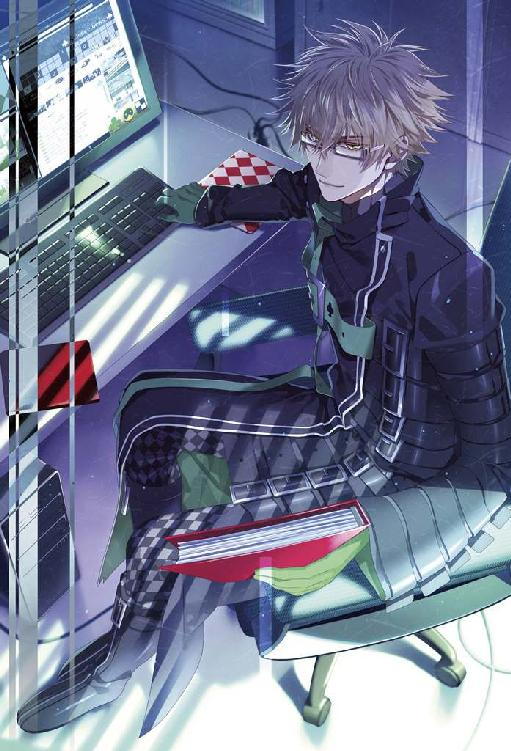
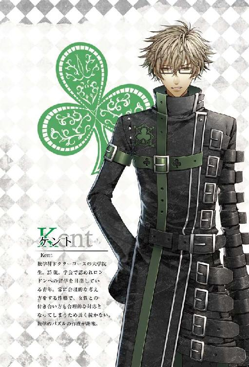
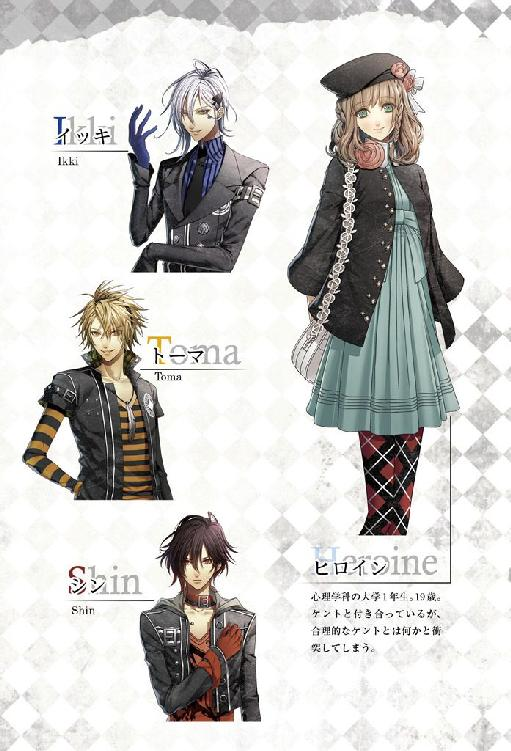
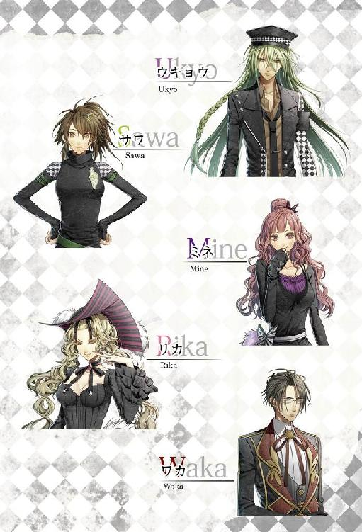
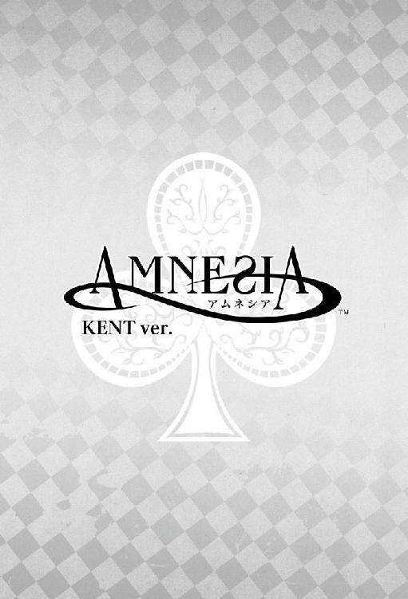
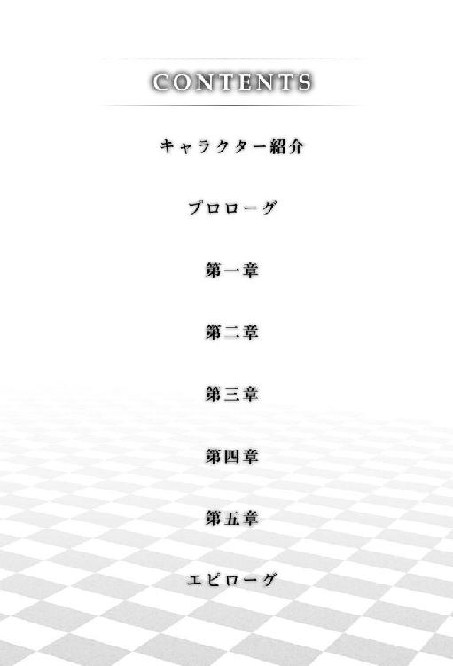
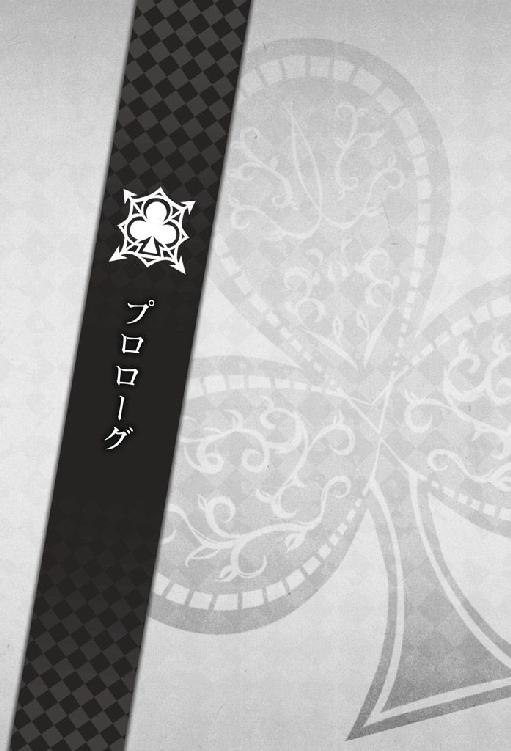
８月１日
「意味がわからない」
無意識のうちに呟いてしまってから、今の言葉は声に出す必要がなかった、と口を閉ざした。
だがしかし、本当に意味がわからない。
先ほどから私は、自室をぐるぐると歩き回っていた。
歩き回る間も、私の視線はソファ前にあるローテーブルの上に置かれた携帯電話から離れない。しかし、いくら視線を向けても携帯が私の求める答えを導いてくれるはずもなく、空しく時だけが過ぎていった。余裕を持って学会を迎えるためにも、効率よく時間を使いたいのだが。
溜息をひとつ付き、ソファに身を沈める。
──どうして、彼女は怒っているのか。いや、昨日のことなので一応は過去形にすべきか。
ともかく、その理由さえわかればこんなにも無意味な時間を過ごさなくてもいいはずなのだ。
もう一度情報を整理してみようと、私は昨日の出来事を思い返すことにした。
昨日、彼女は私の部屋に来るなり携帯のメール画面を開いて見せた。
「......君は何がしたいんだ。私に私が送ったメールを見せても無意味だ。内容は知っている」
「そうじゃありません。ケントさんは、このメールを見て何も思わないんですか？」
「というと？ 何か問題でもあっただろうか」
「あります。問題は内容です」
「内容？ さて、議論するほどの内容があったか疑問だが」
「本気で言ってるんですか!?」
「待ちたまえ......どうして君はそう怒っている？」
「怒ってるんじゃありません。文句を言いたいだけです」
怒っていない？
文句を言いたいということは不満があるということであり、ましてや今の彼女の表情からは怒っているという感情以外に当てはまるものなどないと思うのだが......。
「毎日メールをくれるのはいいんです」
「君がなるべく多くメールを送ってほしいと言ったからな」
「......私が言わなかったら、メールも送ってくれないんですか？」
何故か、不意に彼女が哀しそうに瞳を揺らす。その突然の変化に私の方が動揺しかけたが、彼女はすぐに勝気な瞳に戻った。
「そのことについては、また別の機会に言うことにします」
それもまた不満なのだなと、頭の片隅に置いておく。
「今問題にしているのは、送ってくれるメールが『おはよう』と『おやすみ』だけだってことです。定型文だってこれよりましな文章を作れます！」
まくし立てるように言って、彼女は少し呼吸を整えた。その様子を見守りながら、私も口を開く。
「それは『こんにちは』も送るべきだと......」
「そうじゃありません！」
話している途中で強く否定され、思わず眉根を寄せる。
「そうでないのなら、一体何が問題だと言うのだ」
「......メールのことだけじゃありません」
「何？」
「昨日と一昨日の件です」
何のことだとさらに眉をしかめると、彼女はきつい眼差しを私に向けた。
「バイトの帰りに寄った私も悪いのかもしれません。でも......同じ部屋にいるのに、一言も話し掛けてくれないのはどうかと思います。確かに......邪魔をしないから傍にいたいって言ったのは私ですけど」
「私は研究をしていてかまわないと言ったのも君だろう」
「言いました。言いましたけど、少しくらい......」
「？」
「どうして私が文句を言っているのかわかりませんか......」
「わからないからこそ、聞いている」
「............そうですか。もう、いいです」
「あ、君、どこに行く？ 今来たばかりだろう」
「帰ります」
コーヒーを淹れる間もなく、彼女は部屋を出ていった。その瞳にうっすらと涙の影が見えた気がしたのは気のせいだっただろうか。
昨日のやりとりを思い出しても、やはり疑問が解消されることはなかった。
ほぼ丸一日。それがこの疑問に費やした時間だ。解を求めるには情報が少なすぎる。......今から取る行動に言い訳をするわけではないが、これ以上時間をかけることは研究の妨げになる上、効率的ではない。
速やかに問題を解決するため、私は一日見つめ続けた携帯に手を伸ばした。
『冥土の羊にいる。
話し合おう。
来るまで待っている』
一度見直し、簡潔に用件を伝えられているかを確認してから、彼女へとメールを送信した。
今日は月曜日で、彼女はバイトの日ではない。夏休み期間中であることから、大学に行くような用事もないだろう。ここのところ、自宅での読書が楽しいと言っていたことも考慮すると、彼女は家にいる可能性が高い。
──彼女は来てくれるだろうか？
いや、それは今考えても仕方のないことだ。来なければその時に対応を考えればいい。
それに、私は待つことに抵抗はない。幸いにも今は外に持ち出せる類の作業もある。それならば私がカフェ『冥土の羊』で作業をしつつ待てれば、時間を有効に活用することもできる。
私は頭の中で他に考えうる問題点がないか確認してから、携帯をしまった。
さして準備をする必要もなかったせいか、冥土の羊に到着したのはメールの送信から三〇分を経過した頃だった。
元々、待つ予定を組んでいたのだから問題はないはずだが、あまり長居をするのは店側に迷惑かもしれないと、店の扉に手をかけてから気付く。
「いらっしゃいませ。ああ、ケントさん」
愛想よく案内に出てきたのは、かつて私の教え子でもあったトーマ君だ。こうして冥土の羊の制服を身にまとっているとあまりに違和感がなく、まるで社員のような印象すら受けるが、彼はまだ歴とした大学生だ。
「中央の方にちょっと賑やかなお客様が多いので、端の方の席でも大丈夫ですか？」
「ああ、構わない」
「では、こちらにどうぞ」
もっともらしい理由で店内の奥まった席に案内されてから、店内の視線に気付いた。どうやら、女性が多いこの店では、私の存在はいささか浮いているようだ。トーマ君はそれをさりげなく気遣ってくれた可能性が高い。
「コーヒーを頼む」
「かしこまりました」
トーマ君は笑顔で応えると、余計な動作をせずに戻っていった。途中途中で女性客に呼び止められてはそつなくあしらっている様は、悪友であるイッキュウを連想させる。
そうして資料をテーブルの上に広げているうちに、コーヒーが運ばれて来た。カップの中に角砂糖を二つほど入れてから、また資料に手を伸ばす。
今度の学会発表までに読んでおくべき論文を二、三持って来ていたのだが、先ほどから目が文字の上を滑ってしまい上手く読み進めることができていなかった。
短く吐息を零し、まだ熱いコーヒーに口をつけた。
──彼女は、ここに来るだろうか。
ポケットにしまい込んだままの携帯は、メールも電話も知らせては来ない。彼女の性格から考えるに、初めから来るつもりのない誘いには断りの連絡を入れるはずだ。それがないということは、当然ここには来るつもりなのだろう。それがいつになるかはわからないが、時間を指定しなかったのは私だ。
この時間を有効に使うためにも資料を読まなければと思うのに、彼女が来てからどういった話し合いが展開されるかのシミュレーションにどうしても思考が引き寄せられた。
私と彼女は口論が絶えないとは言え、全くわかり合えないわけではない。論理的に筋道を立てて説明をすれば、私の意見に納得してもらえる自信はあった。
しかし、今回の問題点は私の意見を通すことではなく、彼女の言わんとしている問題点をいかに建設的に解決するかにある。どう理論を展開すれば、双方納得の行く結論を得ることができるだろうか。
まるで頭に入ってこない資料を形だけ捲っていると、入り口に彼女の姿が見えた。無意識のうちに時間を確認すると、私が店に着いてから約一時間が経過していた。予想よりも順調な滑り出しだと捉えて問題ないだろう。
──いや、彼女が来てくれて本当に良かった。
客の入店に気付いた店長とトーマ君が接客に向かうが、相手が彼女だとわかると案内はせずにバックヤードへと戻って行く。彼女もここでバイトをする店員のひとりなのだから、それは当然のことなのかもしれない。
彼女は私を探しているのか、きょろきょろと辺りを見渡しながら、歩いていた。
こういった場合、こちらから合図を送るべきなのかもしれないが、あれだけ店内を見渡していれば私に気付くのも時間の問題だろう。敢えて手などを挙げると逆に彼女の不興を買う可能性もあるため、私は彼女の動作を追うことで自分の存在を主張することにした。
ほんの一瞬の時間ではあったが、彼女の視線は確かに私を捉えた。これでようやく話し合いを開始することができる。そう思った瞬間、
「なっ......」
彼女は私の座っている向かいの席ではなく、二つテーブルを挟んだ空席に腰を下ろした。
──何を考えている？
想定外の行動に理解が追いつかない。私と待ち合わせをしている場において、私と離れた席に座る理由などあるだろうか。
冷静に今起こった状況を理解しようとするよりも早く、私は立ち上がっていた。
私が目の前に立つと、彼女はゆっくりと私を見上げた。しかし何も言おうとはしない。
彼女の考えが読めないが、彼女が何も言わないのならば、私から言葉を発する他にない。
「何のつもりだ」
然るべき理由があったならば聞くつもりでいたが、彼女は反応すら返さなかった。
「私の前には座りたくないという意思表示か？ それならなぜこの店に来たんだ」
いつもならば、この段階ですでにひとつ以上の返しが来るのだが、今日はそれもない。しかし、私となど口も聞きたくないと頑なに口を閉ざしているようにも見えない。
零れそうになる溜息を呑み込み、私は続けた。
「私はね、読心術が使えるわけではないんだ。口にしてもらわなければわからない。君が私の態度に対して文句を言いたいのはわかった。だが、それならば要求をもっと明快にしてもらいたい」
彼女はまるで平凡な景色でも眺めるような無関心さで私を見上げている。
「私は女性との交際について私なりに調べた上で行動している。その上で足りない部分があるなら善処しよう。だがまずは、不満を言ってもらわねば始まらない」
私なりにわかりやすく噛み砕いて説明したつもりだったが、それでも伝わらなかったのだろうか。彼女は相槌も打とうとしない。私としても、すぐに反論が来るものとばかり思っていただけに、無言の方が対応に困る。
「聞いているのか？ 何とか言ったらどうなんだ」
彼女は一度口を開くと何かを言いかけて、悩んだ末にまた口を閉ざした。まさかここで私の言葉を鵜呑みにして『何とか』と言おうとしたわけではないと思うが、それでも無言よりはましなように思えた。
一〇秒待とう、と決めた。何か言いかけたということは、意見交換をする気はあるということだろう。ひとまず反論の余地を与えようと待っていると、ようやく彼女が声を発した。
「とりあえず座ってください」
「............」
実にシンプルな返答だ。いや、シンプルどころではなく、私の意見に対して答えになり得ない言葉だ。しかし、ここで質問の意図を捉えていないと指摘してもあまり発展は望めない。
ちょうど横を通りかかったトーマ君を軽く手を上げて呼び止め、
「君。すまないが、私のコーヒーをこの席へ。それから彼女にカフェオレを」
私は彼女の前の席に腰を下ろした。
トーマ君は「かしこまりました」と丁寧に頭を下げると、実に迅速にコーヒーを運んでくれた。新たに置かれたお冷やは新しいもので、気配りを感じさせる。
冷たい水を一口喉に流し込んでから、私は改めて彼女に向き直った。
「......で？」
先を促しても、彼女は私の顔をまじまじと見つめるばかりで何かを語ろうとはしない。
「............」
目の前に湯気を立てたカフェオレが置かれてもなお、彼女は一言も言葉を発さなかった。話さないばかりか、カフェオレに手をつけようともしない。
人に淹れてもらったものでも自分で淹れたものでも、コーヒーは一番美味しいタイミングで飲みたい。そう言っていた彼女の声が耳に蘇る。その鮮明な記憶とは矛盾する目の前の彼女の様子に、自然と眉間にしわが寄った。信念を曲げてまで、私に訴えたいことがあるとでも言うのか。
「......何だというんだ、いったい」
抑えきれない溜息が零れ落ちる。
「文句があるなら、いつものように立て板に水でまくしたてればいいだろう。そうすれば、私の方もいつもどおり論破させてもらうだけだ。黙っていては何が不満なのかわからない」
問題があるのならばそれを指摘し、修正する。それが正しい解決法だと私は思っているが、彼女はそうではないのだろうか。そう思えるほど、私が何を言っても彼女は無反応だった。
それにしても、ここまで一方的に私に言われるがままなのは、常の彼女からすると非常に珍しいことだ。何か反論しない理由があるのだろうかと考え、ひとつの仮説に行き当たる。
「ああ、議論に負けるのが怖くて黙っているのか？ ハハ、殊勝になったものだな。どうせ殊勝になるなら、たまには素直に謝るという芸でも見せてみたらどうだ。そうすれば万事解決だ。何しろ私は別段怒っていない」
今度ははっきりと彼女が首を傾げた。どうやら、彼女は私が怒っているものと勘違いしているらしい。
まずはそこからかと、言葉を付け足す。
「怒る怒らないなどという段階ですらない。なぜなら私には、いまだになぜ喧嘩になっているのかさえわかっていないんだからね」
私が怒っていないことを伝えれば、今度こそ意見を返してくるかと思ったが、やはり彼女は何も言い返そうとはしなかった。
不満があると言ったのは彼女だ。それなのにどうして、その不満を語ろうとしないのか。
私には彼女の意図するところがわからなかった。
答えが出ない。解答の導き方もわからない。まるで白紙の問題を渡されたかのような気分だ。
「......本当に、何が不満なんだ......」
彼女は気まずい様子も不満そうな様子も見せず、静かに私を見つめている。考えていることがそのまま顔に出るなと思っていたのは、私の認識違いだったのかもしれないと思うほど、完璧なポーカーフェイスだった。
「言えない理由でもあるのか？ なら何をしにここへ来たんだ。昨日はあれだけ怒っていただろう」
昨日、怒っている最中にきちんと問い質しておかなかったのは私のミスだ、とでも言いたいのだろうか。しかし、理由を明らかにしようにも、問答無用で帰ってしまったのは彼女の方だ。
「いい加減、黙り込むのをやめろ。不満があるなら端的に言え」
日本人は空気を読むことに長けた人種であり、言葉にしないことを読み取ってほしいという傾向が強い。──だとしてもだ。この沈黙が何かを生み出すとは私には思えなかった。
まだ無言を貫き通すのかと思われた時、
「昨日はごめんなさい」
そう彼女が言った。耳にその言葉が届くのとほぼ同時に、私は思わず腰を浮かせていた。
「なっ......君......!?」
急に立ち上がったものだから、隣のテーブルについていた女性がぎょっとしたように私を見上げた。少し離れた位置から、トーマ君や他の従業員たちの視線も感じたので、私は努めてゆっくりと椅子に座り直した。
「どういうつもりだ......!? なぜ謝る......何があったんだ！」
大きくなりがちな声を理性でどうにか抑え込みながら問いかける。
──今彼女は、ごめんなさいと言ったのか？ 私に謝ったとでも言うのか？
立腹していたのは彼女の方だ。そしてその立腹の理由が私にはわからない。
『どうして怒っているのかもわからないんですね』と逆に怒りを買ったことは無数にあったが、何の解決もしていないというのに彼女の方から謝罪を口にしたことが今まであっただろうか。いやない。
では、彼女はどうして謝ったのだろうか。私が怒っているように見えたからか？ しかし、それは先ほど怒っていないと明言したばかりだ。では、無駄な喧嘩を引き起こしたことを後悔しているからか？ だがその割には、彼女が後悔の念に心を痛めているようには見えない。では、何だ。
答えを導きだそうと数秒考えてみたが、そもそも何故、彼女が昨日怒っていたのかわからない限り、この謝罪の答えも正確には出て来ない。
「何の理由もなく突如謝る気になったなどとは言わせないぞ。そんなことは起こり得ない！」
彼女と私はそれほど長い付き合いではないが、それでも彼女が論理的な思考の持ち主であることぐらいはわかっているつもりだ。たとえ感情論を重要視していたとしても、自分の信念を曲げて理由なく謝るとは考えにくい。
「............」
私は彼女が理路整然と理由を述べてくれるのを待ったが、その期待は沈黙によって打ち消された。
今日の彼女はどうもおかしい。普段から大人しい雰囲気をまとってはいるが、その実芯はしっかりしており気が強い。こうも一方的に言われたままでいるはずがない。
そういえば、今日はまだ一度も彼女の表情が動くのを見ていない。怒るでもなく、笑うでもない。ぼんやりしている、と形容するのが近いだろうか。もしや、表情を作れない理由が何かあるのか？
そこまで考え進めて初めて、可能性は低いながらも嫌な考えに行き着いた。
「............どうしたんだ。まさか脳に障害でも起こしたんじゃないだろうな」
その悪い考えとは、交通事故の可能性だ。
彼女は冥土の羊に来る途中で交通事故に巻き込まれ、その時は軽いと思い病院には行かなかったが今になって障害が出て来た。そうは考えられないだろうか。
注意深く、彼女の着衣を確認したが、どこにも損傷が見られないことにほんの少し安堵する。
当の彼女の方も、曖昧にではあるが私の言い分に否定を示すように首を横に振っていた。
脳の損傷でもないとすれば 突如現れた未確認飛行物体に連れ去られた結果、目の前に座る彼女は私が知る人物とは似て非なるものである。......などという可能性は事故よりも更に低いだろう。
しかし、昨日の出来事を忘れてしまったかのように、昨日と今日では彼女の様子がまるで異なっている。まさか、一晩経った程度で忘れるはずもないが。
では......彼女は単に謝りたくなった。だから、謝ったということなのだろうか。いやしかし......
「まさか、君から謝るとは......」
確かに、素直に謝ればどうかと言ったのは私だ。だがそれも、こんなにも従順に受け入れられるとは思っていなかった故の発言だ。
結局のところ、どうして彼女が謝る気になったのかはわからないが、彼女がその理由を語らない以上、私が理由にこだわるのも滑稽なように思われた。......表面上に現れていないだけで、彼女の方から歩み寄ろうとしてくれている可能性もゼロではない。
「......世界には、割り切れない謎がまだ山と残っているな」
少し心を落ち着けようと、すっかり冷めてしまったコーヒーで喉を潤す。カップの底に沈んでいた糖分がじわりと口の中に入り、脳に届いていくような気がした。
「......その、何だ、私も悪かったな。君の不満はわからないが、とにかく大人げない物言いをした」
私も、自分で思っていた以上に冷静ではなかったのかもしれない。
「すまなかった......」
彼女の方から折れてくれたおかげか、思いの外簡単に私の口からも謝罪の言葉が出る。
彼女との議論の結果、謝罪し合う形になったことは今まで一度もない。そのせいか、今私たちの間にはどうにも気まずい空気が流れていた。喧嘩の後、一般的にカップルが取るべき態度というのをもう少し調べておくべきだった。
彼女はというと、相変わらずぼんやりした顔で何もない壁の方に目を向けていた。彼女は彼女で、この空気を気まずいと思っているのかもしれない。
その場を取りなすように咳払いをしてから、
「まとまらないなら、いずれ話してくれればいい。もちろんメールでも構わない」
一応は気遣いのつもりで言うと、彼女は極々小さく頷いた。
「今現在、特に言いたいことがないようなら、もう店を出よう。長居をしてしまったからな」
彼女はもう一度頷き、思い出したようにカフェオレに手を伸ばした。そして砂糖を入れずに一口飲み、またカップを置く。
「............」
飲み終えるまで待ってもいいという思いで様子を見ていたが、彼女はそれ以上口をつけようとはしなかった。
「......今日の君は、本当におかしい」
何か、はわからないが、彼女に意識、態度を変えさせるほどの出来事が昨日と今日の間にあったことは確かだろう。それも、口にできないような異常な何かが。
だが、単純に彼女の気持ちが良い方向へと傾いた可能性を打ち消したいはずもなく、私はそれ以上追求するのをやめた。
ひとまず会計を済ませようと視線を彷徨わせると、すぐに店長が卓にやって来る。いつ来ても、気配りが行き届いた良い店だと思う。ただ、店長にはもう少し、接客業らしい愛想があると良いなとも思わないでもないが、私が指摘することでもない。
「......すまないが、この卓の会計を私の分と一緒にしてくれないか」
「かしこまりました。少々お待ちください」
すぐに下がった店長を、彼女はしばらく目で追っていた。
「......何をぼうっとしている。会計を済ませて出るぞ。ここの勘定は私が持とう」
呼び出したのは私だ。だから当然、会計も私が持つべきだろうと思ったが、店長が伝票を持って来るまでの間に考えが変わった。
「......いや、君は計算が苦手だったな。少し日常生活を利用して鍛えた方がいいと常々思っていたんだ」
笑みを含んだ視線を彼女に向け、
「では、君がすぐに合計金額を暗算できたら、会計は私が払おう。できなければ公平に半額ずつだ」
店長から渡された伝票を、金額面を伏せてテーブルに置いた。
「私の頼んだブレンドは六七〇円。君に出してもらったカフェオレは七八〇円だ。さて、合計は？」
ここは彼女が働いている店だ。メニューの値段ぐらい彼女も暗記しているだろうが、今日の彼女はどうもぼうっとしている。単品の値段を提示するぐらいのヒントはあってもいいだろう。
あまり待つ気はなかったが、その心配は無用だった。
「......一四五〇円、です」
「正解だ。さすがにこれは簡単すぎたか」
伝票を持ち上げ、正解を彼女にも示す。
「すまないな。自分の教え子はつい試したくなってしまう」
てっきり、馬鹿にするなと膨れるかと思ったが、彼女は首を傾げただけだった。
「約束どおり、ここの勘定は私が持とう」
ちょうどの金額を店長に渡し、私はテーブルで会計を済ませた。
「では、今度こそ行くか」
店の外に出ると、まだ午前中だからか店の前の人通りは少なかった。
彼女に会い、昨日の件を説明してもらうという用事は済んだ。よって、このまま解散しても問題はないのだが、もう少しだけ、彼女と共に過ごしたい気持ちがないわけでもない。
友人──いや、悪友と言った方が正しいだろう──に言わせると、男女の交際開始時は頻繁にデートをするものだと言う。彼の意見を一般的だと捉えるにはやや不安があったが、私よりは実践に則した意見に違いないことも確かだ。ここはひとつ、彼の意見を行動に移してみようと思う。
彼女がようやく店から出て来たのを確認してから、
「少し歩くか」
そう言って駅の方向へと足を向けた。
高架下を抜け、駅が見えてくるとさすがに人が多くなった。ぶつからないように歩くにはやや注意が必要になる。後ろを振り向くと、彼女は数歩以上後ろにいた。随分と人混みの中を歩くのに苦労しているようだったが、どこか具合でも悪いのだろうか。
念のために彼女の顔色を窺い、具合は悪くなさそうだと判断してからまた、私は歩みを進めた。
そうこうしているうちに駅に着いた。悪友・イッキュウからは『駅前とかぶらぶらしたら？ 付き合い始めならそれだけで充分でしょう？』と言われたが、果たしてこの駅前を歩くことに何の意味があるのだろうか。
利用することの多い駅だけに、目新しさは何もない。昼近くになってきたせいで人も増え、不快度の方が高いとすら思えた。果たしてこれで彼女が満足するのか甚だ疑問だ。
私は彼女が追いつくのを少し待ってから、駅を線路沿いに曲がる。駅前を歩くというミッションはこれでクリアーした。だが、ここで解散というのも味気ない気がした。
彼女の方はどうだろうかと様子を窺うと、彼女は文句ひとつ言わずに私の後をついて来ている。それならば、このまま歩くのが妥当だろう。午後から私は大学に用があるのだが、今日は彼女を呼び出した身だ。それをまた大学まで付き合わせるのは気が引ける。悩んだ結果、まずは彼女の家の方向に歩くことにした。
それから歩くこと約二〇分。私たちは彼女の住むマンション前に到着した。
彼女は自分のマンションを見上げ、何もない空に向かって頷いている。これは何の意思表示なのだろうか。もしや、まだ歩き足りないということだろうか。
「もう少し歩くか？」
ならば、と提案してみたが、彼女はあまり乗り気ではないようだ。
「私には特に興味を惹かれる物がないのだが、君にはあるのか？ あるなら言ってくれ」
このデートというものは、女性にとっては楽しく、男性にとっては意味を見いだせないものだとしたら、今後のことを考えると意見交換が必要かもしれない。いや、それでももし、彼女がいたくこのデートを気に入っているのならば、私が譲らないでもないが。
「どうして歩いてたんですか？」
しばしの間の後、彼女が聞いた。
「......意図が伝わっていなかったのか」
どうやら、デートというのはまず開始する旨を告げてから、歩き始めるものだったらしい。
「デートのつもりだが」
それでは、意図がわからないまま彼女は二〇分も無言で私に着いて来ていたというのか。何か言えば良いと思うのだが、今日の彼女の調子を見ていると口を挟む元気がなかったのかもしれないとも思う。今日のところは、彼女の体調を考慮しなかった私のミスだろう。
しかし、デートだと告げても、彼女は首を斜めにしたままだった。彼女にとって納得のいかない不手際が、私の方にあったと指摘されているかのようだ。
溜息をひとつつき、
「......友人に、付き合い始めの男女が取るべき行動を聞いたら、無目的に駅前などを歩けばいいと言われた。だからそのとおりしたまでだ。だが、これに何の意味があるんだ？」
仕方なく、私の案ではないことを白状する。彼女はまだ納得してないようだったが、私とて納得した上で行動したわけではないことを主張しておきたい。
「私には男女交際の仕方などよくわからない」
知識として知ってはいるし、何も彼女が初めて付き合った女性というわけでもない。だが、彼女と付き合うまで女性との付き合いが長く続かなかったことからも、男女交際の仕方をまだ取得できてはいないのだろう。
「繰り返すが、要望や不満があるなら、具体的かつ端的に伝えてくれ」
少なくとも、言葉にしてもらえれば問題として捉えることができる。
彼女は横なのか縦なのか判断に困る角度で頷いた。ひとまず、了承したと捉えて問題ないだろう。
「では、特に何もなければ私は大学に戻る。またメールする」
彼女からは、別れの言葉もなかった。
彼女と別れてから、私は籍を置いている西池大学に向かっていた。駅前よりは大分人が少ない印象だが、それでもぼうっと歩いているとすぐ人にぶつかる程度には、人が多い。
その人の流れに乗るようにして歩きながら、私はずっと今朝からの彼女の言動を思い起こしていた。
何も、彼女が自分からは決して謝れない人物だとは思わない。そう思ってはいても、今日の彼女は殊勝過ぎるというか、大人しいというか、意志というものが感じられなかった。一体、何があったらあのように急変してしまうものなのだろうか。
私が知り得ない昨夜から今に至るまでの時間に、彼女に何か普段とは異なる事態が発生していない限り、他に考えられる要因としては、やはり昨日のやりとりが原因である可能性が極めて高い。
彼女の方から謝罪を申し出てはくれたが、完全に納得した上での謝罪には見えなかった。とすると、まだ問題は解決されたわけではない。何より、私も何故、彼女が怒り、急に謝ったのか、その理由が知りたかった。
だがここで、私が「結局のところ、君は何故怒っていたのだ？」と直球で聞くと、また波風を立てる可能性がある。それよりは、すでに彼女が不満だと判明しているメールの一件に戻り、質問した方がいいだろう。
電話をかけようかとも思ったが、思い直してメールを打つことにした。電話は早く済むが、如何せんその場の感情に流されやすい傾向がある。それよりは、一拍おけるメールの方が良いだろう。
早速携帯に手を伸ばし、メールを作成する。
『〝おはよう〟と〝おやすみ〟だけでは不満だと言われたが、
それなら何を書けばいいんだ』
端的に質問をまとめた文章を数回読み直してから、送信ボタンを押した。
メールを打つために止めていた足を再び動かし始めた時、携帯が振動した。
こんなにも早く、私の質問への回答を打ったのかと思うと正直驚いた。メールの一件には回答がすでにあったのかと思いながら、返信内容を確認する。
『おはようとおやすみで結構です』
「どういうことだ」
思わず、声に出していた。
納得がいかない。不満を言ったかと思えば、謝罪し、さらに自分の意見を曲げるだと......？
考えるよりも先に、指は返信を打っていた。
『なんだと？ 昨日はあれほど文句を言っていただろう。
君は頑固な方だと思っていたが、どうして今日に限って急に意見を翻すのだ。
私は君の言う男女交際とやらに合わせようと努力しているのだ。
文句があるなら言ってもらった方がありがたい。
だが、正直なところを言えば携帯メールは苦手なんだ。
一言でいいのならば助かる』
読み返しもせず、勢いのままにメールを送る。彼女が何を考えているのかわからず、私も混乱していた。
深呼吸するように大きく息を吸い込むと、後ろから歩いて来た人にぶつかられた。それでようやく、自分がメールを打っている間、立ち止まっていたことに気が付いた。人混みの中、私の周りだけを人が避けるようにして歩いて行く。
このまま立ち尽くしていても邪魔になるだけだろうと、少し脇に避けて人並みから抜けた。それから改めて自分が送ったメールを確認し、絶句した。何だこれは。
まるで文章の構成がなっていない。このメールは、本当に私が送ったものなのか？
二度、確認してみたが、確かに私がすでに彼女に宛てて送ってしまったもので間違いがなかった。
何という失態だと頭を抱えたくなったが、さすがに外なのでどうにか堪える。
三度、メールを確認して、その内容が感情論で埋め尽くされていることに気が遠くなりかけた。日頃、あれだけ感情論を否定しておきながら、これでは矛盾以外の何物でもない。
今回の件でひとつわかったことがある。それは、電話だろうとメールだろうと常に冷静でいられるとは限らないということだ。次回からの参考にしようと思う。
送ったメールを取り消してしまいたかったが、送信済みのものはどうしようもない。私は大きく溜息をついてから、携帯をポケットへと押し込んだ。
今日はどうも彼女にペースを乱されてばかりだ。

８月２日
時計の針は、そろそろ午後の一時を指そうとしている。
自室で作業していた研究資料から目を離し、私は少し離れた位置にあるソファに視線を向けた。
そこは朝から無人で、今も誰も腰をかけていない。誰も家を訪れていないのだから、当たり前と言えば当たり前だ。その当たり前のことをこうして視覚的に確認するのは、もう何度目だろうか。
統計を取るための資料は昨日のうちに届いているのだから、その計算をしていればいいことはわかっているのに、どうにも集中できなかった。
そのソファは彼女が来た時の特等席だ。決まっているわけではないが、彼女は私の部屋に来ると必ずと言っていいほどそのソファに腰を下ろした。もしかしたら、自分で言い出したことを守ろうという意識からそうしているのかもしれなかった。
あれは、彼女と付き合い出してすぐのことだ。
彼女のバイト先、冥土の羊でコーヒーを飲んでいると、彼女に聞かれた。
「今日はこの後、何をする予定ですか？」
「自宅に帰って学会の準備だが」
「そう、ですよね。じゃあ、明日は......」
「明日は大学で研究の続きに取りかかる予定だ。ちなみに明後日は自宅でそのデータの検証をする」
「......毎日、学会の準備なんですね」
「そんなことよりも君、私と話してばかりいていいのか？ 曲がりなりにも今は......」
バイト中だろう、そう言いかけて言葉を呑んだ。彼女はトレイを両手に抱え、暗い顔で俯いていた。
今の今まで普通に会話をしていたというのに、どうして急にそんな顔をする？
理由がわからず対応に困っていると、
「あの......！」
何かを決意したように彼女は顔を上げた。
「な、何だ」
「研究の邪魔はしません。だから......一緒にいてもいいですか？」
「......どういう意味だ？」
本気で意味をわかりかねて聞き返したのだが、彼女は一瞬哀しそうな表情を浮かべて唇を引き結んだ。こんな顔をさせたいわけではない。どうして私は上手い言葉使いができないのだろう。
「......そのままの意味です」
「つまり君は、研究をしている私の近くにいたい。......そういう意味だろうか？」
あまり考えられない仮説だったが、彼女はあっさりと頷いた。
「正確に言うと違いますが、でも、大体あってます」
聞き間違いかとしばらく待ってみたが、彼女はそれ以上訂正しようとはしなかった。
私が彼女と共にいたいと願うのならばわかる。だが、彼女の方から言い出すとは思いもしなかった。俄には信じられず、私は思わず突っかかるように聞き返していた。
「......正確に言うとどうなのだ」
「それは......付き合ってるのに、全然一緒にいられないのは......問題だと思うんです。だから、邪魔だとは思いますが、でもできれば、一緒にいたいなって......」
「そ......そうか。いや、しかし......私は君がいても、研究の手を休めるわけにはいかないのだよ」
「それでもいいんです」
「いや......しかしだな......」
「やっぱり......邪魔ですよね......」
「そんなことは......」
──ない。とは言えなかった。
想像するまでもない。彼女が部屋にいれば、私の注意は彼女へと向き研究が手につかなくなるだろう。それがわかっているのに彼女と過ごす時間を想像してしまう自分がいた。
「............わかった。そこまで言うのなら、好きにするといい」
「はい！」
最後まで、私も彼女と一緒にいたいと思っている、とは言わなかった。言えなかった。
それでも、彼女は嬉しそうに笑っていたのをよく覚えている。
あのやりとりをしてからすぐ、彼女は私の自宅を訪ねてきた。
初めこそ、彼女の存在が気になり集中力が切れることがあったが、彼女は大抵おとなしくソファに座って本を読んでいた。気付くとそのままうたた寝をしているような時もあった。そういった状況が当たり前になると、今では彼女の存在がない方が落ち着かなくなっていた。
慣れというのは恐ろしいものだ。慣れも何も、まだほんの数回の出来事だというのに、私の中では彼女が私の部屋のソファにいることがすでに当たり前になってしまっている。
ソファから無理やり視線を引き離し、パソコン上の数字に向けた。使うべき方程式も、数値もわかっているのに、頭だけがついていかない。
今日、ここに来ると、彼女と明確な約束をしていたわけではない。バイトのない日だからといって、彼女だっていつでも暇を持て余しているわけではないはずだ。他に用事があることも充分に考えられる。いや、もしかしたらともうひとつの可能性を思い付く。
彼女は一昨日、怒っていた。昨日、その件については謝罪をもらい、根本的な解決をしないまでも私は和解したつもりでいた。だが、彼女の方はまだ一昨日の怒りが鎮まらず、私の顔を見たくないので家に顔を出さない。そうは考えられないだろうか。
ふと視線を向けると、パソコンのモニターに表示されている時刻は一時半を示していた。
どちらにしろ、今日はもう来ないのかもしれない。ならば、彼女が顔を見せない理由が何にせよ、自分は研究を続ける以外にやることもない。
計算に集中できないならば、資料として用意しておいた論文に目を通せばいい。この作業ならば計算ほど集中力を必要としない。
あらかじめ印刷しておいた書類の束を取り出し、ページを捲った。この論文を書いた学者は切り口が斬新で非常に参考になる。今年度発表された論文は初見なので、実は読むのを楽しみにしていた。
それなのに、
「──駄目だ。全く頭に入って来ない」
三ページも読み進めることができなかった。
無人のソファが気になって研究が手につかないなど、私らしくもない。
そうだ。問題があるのならば、早急に原因を取り除けばいいだけのこと。原因もわかっている。
充電しておいた携帯に手を伸ばし、彼女の携帯番号を呼び出す。携帯を少し耳から離し、ワンコール、ツーコールとコール音が止まるのを待った。
ちょうど五つ数えたところで、コール音が止んだ。
「今日は来ないのか」
時間の短縮も図り、用件のみを告げる。
来るか来ないかの二択しか答えはないはずだが、彼女はすぐには答えなかった。
きちんと通話が繋がっていないのかと携帯の画面を確認したが、そこには彼女の名前がしっかりと表示され、通話開始からの経過時間がカウントされている。
携帯電話には電話帳というものが存在し、登録してある番号から電話がかかってくれば通話に出る前から電話をかけてきた相手がわかる。その機能を考慮し名乗らなかったのだが、まさか発信者を確認せずに出てしまい、戸惑っているのだろうか。......私の番号が登録されていない、というのはあまり考えたくはない可能性のひとつだ。
今さらながら名乗るべきだろうかと考えていると、『あの......』と遠慮がちな声が聞こえた。通話相手が私だとわかっていないならば『どなたですか』と聞くだろうと予測できることから、会話を進めてもいいと判断する。
「今日はバイトではないだろう。まさかとは思うが、一昨日の件をまだ怒ってるのか？」
返事がない。無言は肯定と見なされることを理解しての抗議か。
「お望みならもう一度謝ろうか。『一昨日は悪かったな』」
何が悪かったのか理解しない状態での謝罪なので、感情が伴わないことは容赦してほしいものだが、これでようやく話を前に進めることができるだろうか。
「......で？ 今日はもう来ないのか？」
しばらく待ってみたが、電話の向こうからは戸惑うような空気しか伝わってこない。一体、何を躊躇しているというのか。いや、躊躇する理由があるとすれば、
「どうした。予定があるのか」
予定があるのなら遠慮なくそう言ってくれればいい。......私とて、何も彼女が来ることを期待して電話をしたわけではない。来るか来ないか、それを知りたくて電話をしただけだ。
しかし彼女からの返答は、私の予想の遥か斜め上を行くものだった。
「......私のバイト先まで散歩しませんか？」
「何......？」
一瞬、聞き間違えかと考えた。
彼女のバイト先から彼女のマンションまでの道は、昨日散歩したばかりだ。それをもう一度逆順で辿りたいということは、あれは......あのデートは、それほど楽しいものだったということか？
「昨日散歩をしていた時、君は楽しんでいないように見えたのだが、やはりあれでよかったのか？」
男女で感性に違いがあるとは言え、彼女の答えは実に意外であった。しかし、彼女が満足していたというのならば、無駄な時間でもなかったということになる。
「まあ、君も知ってのとおり私にとって散歩は日課だからな。悪くない誘い文句ではある」
パソコンのモニターに視線をやり、時間を確認する。予定よりも大分研究が遅れていることもあり、できれば遅れを取り戻してから散歩の都合はつけたかった。
「しかし、わざわざ休日に職場へ行きたがるとは、奇特な人間だな君は。大体、昨日も行ったばかりだろう」
いくら散歩が気に入ったからと行って、何も同じルートを辿る必要はない。私と共に行かなくとも、彼女とてバイトへは週三日通っているのだから、とそこまで考えて気が付いた。
「......ああ、なるほどね」
電話の向こう側で、彼女が焦っている様子を想像して少しだけ笑ってしまう。
「大方君は、昨日店に忘れ物でもしたのだろう。しかしそれを正直に言うと私にからかわれると思って、適当な理由をつけて店に行こうとしている」
かなりの確率で正解だと思われるが、彼女は何も言わない。当たり前だ。当たっていた時こそ、きっと何の反応も返さないだろう。
「そんなところではないかな？ 馬鹿正直な君にしては珍しく考えたな。しかし、知っているか？ 古人は言っているぞ、『下手の考え休むに似たり』とな」
極小さく、電話の向こうで溜息のような吐息のような微かな反応があった。やはり、この推理は正解のようだ。
「さて、どうしたものかな。誘いはありがたいが、私は研究を進めたいんだ」
彼女がバイト先に行きたい理由が私とのデートのためではないのなら、ここで私が断ってもさほど問題はないだろう。だが、できることなら、彼女にはこの部屋のソファに座っていてもらいたかった。しかしそれを伝えるべき言葉はすぐには思い付かず、ただ言葉を続ける。
「もし私の野暮な想像が当たっているなら、忘れ物を取りに行ってからこっちに来ればどうだ？ それでも十分時間はあるだろう」
「......店の様子が見たいんです」
「君は面白いことを考えるな。それは人間観察か？ それとも同僚の仕事ぶりの観察か？ あるいは自分の店の雰囲気を客として第三者的に体感し、今後の接客に活かそうということか？」
そういえば、昨日も彼女は店長やトーマ君の様子を観察するかのように熱心に見つめていた。
「なかなか興味深い意見だ。ならば、それもいいだろう」
観察が思いがけない発見をさせてくれるのは、私も同意するところだ。ましてや労働に向上心を持つとは、彼女らしい発想であり、非常に感心する。
「どうせならば、店のマニュアルを借りて、照らし合わせてみるといい。マニュアルの不備も確認できる。気が済んだら、こちらに来るといい」
休日に自分のバイト先に行きたいというくらいだ、他に重要な用事はないのだろう。それならば、私のところに顔を出すことを強く拒否する理由もないはずだ。
「じゃあな」
通話を終了し、一息ついてから携帯を机の上に置く。
どの程度で彼女の気が済むのかはわからないが、これで今日、彼女がここに来ることははっきりした。随分と気分が良い。
早速パソコンに向き直り、中途半端に放り出していた方程式に取りかかった。この分ならば、午前中の遅れを取り戻すこともできそうだ。
しばらく集中して研究を進めていたのだが、途中で仮定していた数字と計算の解が合わない事態が発生した。これではこの仮説が成り立たないことの証明になってしまう。
もう一度仮説を立て直す必要がありそうだと伸びをして、彼女に電話をしてから一時間ほど経過していることに気が付いた。
彼女はまだ冥土の羊にいるのだろうか。
ちょうど研究も行き詰まったところだ。散歩がてら彼女を迎えに行くことにし、私はパソコンを閉じた。
外に出ると、八月だというのに肌寒かった。そういえば、今年はまだ夏服を出していない。今年の異常気象を情報論と合わせて解くのも研究として興味深かったかもしれないなと考えながら、歩き出す。
ひとまず目の前の論文を仕上げないことには、学会で発表どころではない。詰まってしまった論法を頭の中で再構築していくことにした。
歩きながら解法を考えるのはやはり良い。仮説に見落としていた穴を発見することができた。この穴を塞ぐには......と更に頭をフル稼働しようとした時、強かに肩を何かにぶつけた。
「......ん？ 邪魔な電柱だな」
固い感触から人ではないと思ったが、こんなところに電柱を配置するとは迷惑な話だ。
息を呑むような音に顔を上げると、いつの間にか目の前に彼女が立っていた。辺りを見渡すと、すでに彼女のマンション近くまで歩いて来ていた。
「ああ。もう帰ってきたのか。散歩がてら迎えに来た。行くぞ」
冥土の羊まで行くつもりだったが、思いの外上手く合流できて良かった。早く自宅に戻り、試してみたい方程式がいくつも頭に浮かんでいる。
「どうした？ 来ないのか？」
私は即踵を返し数歩歩き出したが、彼女がついてくる気配がないので立ち止まった。
彼女は戸惑いを含んだ顔で私を見てから、何もない空へと目を向ける。この動作を見るのは二回目か。彼女に考え事をする時に虚空を見つめる癖があるとは知らなかった。
「......君は今日、うちに来ることに対して初めから否定的だな。やはり一昨日の件を気にしているのか？ だから文句があるならあると、素直に言えばいいだろう。聞いてやると言っているんだ」
言いやすいようにと間を作ってみたが、彼女は一向に口を開こうとはしなかった。
昨日から、本当におかしいとしか言いようがない。こんな風に一方的に言われている彼女ではないはずだ。
それとも、彼女の側に論破する必要がなくなったのだとしたら？ ......考えたくはないが、彼女はあるひとつの結論を出そうとしているのかもしれない。
それは......
「そうでないなら、何だ。もう別れたいのか」
言葉にしてしまうと、急に重みを増した。
「フッ、だとすれば素晴らしい速度での意見転換だな。君と私が付き合い始めてからまだ一週間と経っていないのだが、君はもう白旗を揚げるのかな？」
初めから、彼女は私との交際に乗り気ではなかった。それは私が一番よく知っている。しかし、私もそれを承知の上で彼女に交際を申し込み、この関係を持続させようと努力を続けている。
「何だ？ 一言の反論もできないのか？ いつもどおりすずめのようにさえずってくれて構わないんだぞ？」
彼女が急に別れたいと言い出しても、それを論破できるだけの材料を私は常に用意している。当然私は彼女と別れたくないと考えていたし、その結論に至るにはまだ早過ぎるだろう。
すっかり身構えていたが、当の彼女は臨戦態勢に入ろうとはせず視線を彷徨わせてから私をぼんやりと見上げた。彼女が何を考えているのかわからない。これでは論破のしようもなかった。
「......で、結局君は私の部屋に来るのが嫌なのか？」
思い悩んだ結果、彼女が出した返答は、
「男の人の部屋は、ちょっと」
「......何だと？」
私の部屋に来ることは初めてではないというのに、どうして今、そのようなことを言い出したのか疑問だ。それとも、今日に至るまでの私の態度から、『男の人の部屋は、ちょっと』という言葉を導き出したとでも言うのか。
「それは何かな、私が君と二人きりになったら不埒なことをするのではないかと考えているのかな？」
男である私と二人、密室にいることが耐えられない理由は他に考えつかないが、実に心外だ。
「......言わせてもらうが」
落ち着こうと意識するあまり、逆に声が低くなる。
「男女交際というものは、まず可能な限り共に過ごすことから始まるものだろう。そして手を繋ぎ、順次抱擁や口付けなどを交わし、その後に先へ進む。私たちはまだ第一段階すらもクリアしていないではないか」
程度の差こそあれ、大抵の男女交際とは順を追って進むべきものであり、私もその順序を飛び越えようなどとは思っていない。
「全てを飛び越えるのは暴行に等しい。君は私を暴行魔か何かだとでも思っているのか？」
どこの世界に、交際を申し込む暴行魔がいるというのか。いるのならば、教えてもらいたい。
「......もしかして、君が先日から気に病んでいたのはその件なのか？ 私が暴行するのではないかと？」
彼女は戸惑ったように私から視線を逸らした。
「......不安にさせていたのだとしたら、すまなかった。そんなつもりは毛頭ないから安心していい」
まさか、こんな誤解が生まれていたとは思いもしなかった。多少ショックではあるが、きちんと説明をしておかなかった私にも否がないとは言い切れない。
「私はただ、男女交際の第一段階として可能な限り共に過ごすべきだと考えているだけなのだ。しかし、私は今研究が忙しい。そこで、君に家へ来てもらっている。それだけのことだ」
私の家に彼女が来るようになったきっかけを作ったのは彼女だ。しかし、それは私が望んだ結果でもある。後になって女性である彼女が不安に思ったとしても、さして不思議はないのかもしれない。
「......言葉を惜しんで、すまなかった」
「......いえ」
「............」
文句のひとつやふたつ覚悟していたが、彼女は短く返事を返すとまた黙り込んでしまった。
「どうも調子が狂うな。昨日からの君はしおらしすぎる」
私が論理的に言葉を投げれば、同じだけ反論や意見が返ってくる。それがいつもの彼女とのやりとりだったはずなのだが、こうも素直に受け入れられると調子が狂って仕方ない。
「......私は別に喧嘩をしたいわけではない。君の意向を聞きに来たんだ」
彼女はやや不思議そうに私の顔を見つめてから、一度頷いた。
「わかってもらえたならば、行こうか」
今度は歩き出すと、彼女は半歩後ろをきちんとついて来るようだった。
私の自宅につくと、彼女は玄関できょろきょろと中の様子を窺う素振りを見せた。
「気にせず上がってくれ。今日も両親はいない」
まだ数回目の訪問ではあるが、一度も彼女が両親と顔を合わせたことはなかった。両親共に朝早くに家を出、夜遅く、または帰らない日も多いので当然と言えば当然だ。そのことに不満を感じたことは一度もなかったが、この両親不在という事実が、暴行魔疑惑へのひっかかりだとすると、いささか両親に文句のひとつも言いたい気分ではあった。
私の部屋に入っても、彼女は物珍しそうに室内を見渡していた。それはまるで、初めて来た時のような反応だった。
彼女は私の趣味のひとつである実験植物を熱心に見つめている。ひとつの鉢を見ては、一歩横に移動し次の鉢のラベルを確認しているようだった。特に、熱心にひとつの鉢植えの前で立ち止まっているので手元を覗き込むと、今朝水分を与えたばかりの鉢だった。
「何だ？ ヨーグルト草に何か異変でも起きてるか？」
葉もしおれたところなどなく、健康そのものに見えたが彼女は私と鉢を見比べてわずかに首を傾げている。
「......特に何もないようだが」
もう一度、ヨーグルト草を手にとって確認してから、元に戻した。
「では、適当に本でも読んでいてくれ。私はスライドの準備が遅れている。昨日今日と時間を浪費したからな」
散歩をしたおかげで思考も冴えている。仮定の練り直しと計算をしてから......と私が椅子に腰を下ろしても、彼女はまだぼんやりと実験植物の前で佇んでいた。
一昨日のように不満を口に出すだろうか、と思ったが、しばらく見ていると彼女はソファに腰を下ろし、手に持っていた荷物から大きなファイルを取り出し眺め始めた。きっとバイト先のマニュアルだろう。
今日は本ではないのだな、と彼女を観察していることに気付き、視線を正面へと戻す。彼女をここに連れてきたのは彼女を観察するためではない。
パソコンを起ち上げる間だけ、と何かに言い訳しながらもしばらくの間、私は彼女を見つめていた。
控えめな物音に気付いて後ろを振り返ると、彼女が手提げにファイルをしまっているところだった。
ブラインドの隙間からは、すっかり赤くなった光が差し込んでいる。いつの間にか随分と時間が経っていたらしい。
「ん？ 帰るか」
彼女は小さく頷いて立ち上がった。彼女に合わせて、私も椅子から立ち上がる。
さて、今日はここからどのような議論が起こるのかと待ち構えたが、彼女は私がわざわざ彼女の前に立っても何も言おうとしない。
「............？」
それどころか、私を避けて部屋のドアへと向かおうとした。当然のように文句を言われると思っていただけに拍子抜けする。
「今日は怒らないのか。一昨日と一体何が違うんだ。全く理解できないな」
もしやこれは新手の抗議の仕方であり、黙っていると見せかけて私に言わせてから反論する気か。
そう思いしばらく待ってみたが、彼女はドアの前に立つ私を見上げるだけだった。むしろ文句を言うどころか、どうしてどいてくれないのかと困っているようにすら見える。
「......君は昨日から本当におかしいな」
無駄に会話が多い女性でもなかったが、ここまで口数が少なくもなかったはずだ。まだ私の知らない面があっても不思議ではないが。
「まあいい、下まで送ろう」
一階に下り、玄関で靴を履いている間も私たちの間に会話は存在しなかった。
「お邪魔しました」
決まり事だからといった様子で頭を下げ、彼女は結局文句を言わずに帰っていった。
玄関の扉が完全に閉まった後も、私はしばらくその場で待った。もしかしたら、気が変わった彼女がまた戻って来るのではないかと思ったのだ。しかし、そんなことはなかった。
一体、どうしたというのだろう。
元々嫌われていると思えばこそ、彼女との議論でも遠慮なく論破できたが、こうも相手がしおらしいと言い負かそうなどと思えるはずもない。明らかに、彼女の態度が軟化していた。
これは......非常に楽観的に捉えるならば、私に好意を持ち始めたからだと言えよう。
もちろん、それが可能性のひとつであることは私とてわかっている。さらに言えば、きわめて低い可能性のひとつだ。それだけ、私は彼女に好かれていない強い理由があった。
思考が過去に及びそうになり、私は敢えてそこで思考を中断した。
８月３日
『数学科第一研究室』と書かれたプレートのかかっているドアの鍵を開け、室内に入る。無人なことは鍵がかかっていた時点でわかっていたが、誰もいない研究室は静かで落ち着いた。
早朝だから、という理由で誰もいないのではない。水曜日はここに通う者が私以外いないからだ。たまにイレギュラーは発生するが、それでもかなりの確率でここは水曜日は私専用の研究室と化す。
備え付けのコーヒーメーカーでコーヒーを淹れる間に、スリープ状態のままにしてあるパソコンを起動する。
大学内で研究することの利点のひとつは、大学の持つ膨大な資料にネットワークのみならず、アナログ的な意味でも簡単にアクセスできることにあると思う。
早速、参照したかった資料を棚で探していると、手を伸ばした拍子にポケットから携帯が滑り落ちた。
そういえば、今朝はまだ彼女にメールを出していない。今日も『おはよう』という一言でいいのだろうか。
メール作成画面を開いてから、そもそも今日は大学に来ていることを告げていないことを思い出した。
今日は水曜日だ。ということは、彼女はバイトがない。下手をすると私の自宅の方に行ってしまう可能性があった。
今気付いてよかった。今のうちに連絡しておけば、すれ違いを避けることができる。
早速、『おはよう』とだけ打った文を消し、用件を打ち込んだ。
『言い忘れていたが、水曜はたいてい大学の研究室にいる。
用事がなければそちらに来てくれ。
西池大学には来たことがあったか？
君の家からは近い。
君が方向音痴でなければ辿り着けると思うが、
万が一無理なら電話をしてくれ。』
これでいいだろう。送信完了の文字が表示されたのを確認してから、携帯を机の上に置いた。
彼女の自宅からここまでは、そう遠くない。今から支度をしてマンションを出ると仮定すると、一時間程度はかかるはずだ。とはいえ、彼女がすぐにこちらに向かうとも限らないので確実ではないが、それとなく時計を確認しておいた。
昨日、来るか来ないのかの連絡を入れたことから、来られないならば彼女の方から何らかのリアクションがあるだろう。
私は手を伸ばしかけていた資料を今度こそ取り、机に戻る。視界の隅に携帯が入ったが、メールの着信を知らせるランプはまだついていないようだった。
不意に、机の上で携帯が振動した。反射的に手に取ると、先ほどセットしておいたアラームだった。彼女にメールを入れてから一時間が経過したことになる。
仮に、すぐマンションを出ていたとしたらそろそろ着いてもいい時間だが、相変わらず、携帯には何の連絡も入っていない。
何か用事があったのか、または迷っていて辿り着けていないのか。どちらの可能性もあった。
誤算だった。一度気になってしまうと、彼女のことが頭から離れなくなった。
「......そうだな。気分転換に散歩にでも行こうか」
呟いてから、これでは誰かに言い訳をしているようだと苦笑が漏れた。言い訳をしようにも、室内には私以外誰もいないというのに。
私は研究室を出、特に何も考えずに施錠をしてから廊下へと向かった。少しの間とはいえ、研究室を無人にする時は施錠をするのが癖になっていた。盗まれて困るものがあるのも事実だが、単なる習性に近い。
自然と階段を下りて正門の方に足を向けた時、手に握ったままだった携帯が震えた。画面には彼女の名前が表示されている。着信だと認識した時には、私はすでに通話ボタンを押していた。
『......もしもし』
電話に出ると大抵の相手が口にする言葉を、彼女も言った。それには答えず、
「迷ったのか」
と端的に聞くと、
『迷いました』
小さな声で返事が返った。
想定内の反応だったが、なぜか自然と笑みが零れた。
「まあ、そんなことだろうと思ったよ。今、君を迎えに行こうと思って下に下りたところだ」
別館から出て、本館へと通じる道へ進む。
「今どこにいるんだ？ しばらくそこを動かずに......」
携帯を耳に当てながら角を曲がると、少し離れた位置に彼女の後姿が見えた。
「......ここまで来て迷ったのか」
今私が曲がった角まで来れば、私の研究室がある別館はすぐ目の前だ。
「私の研究室を知っている人間ならその辺をうようよと歩いている。誰かに場所を聞けばいいだろう」
彼女の方はまだ私に気付いておらず、携帯を耳にしながらあちこちを見渡している。近くを学生が通る度に、慌てて道を譲るほど周りが見えていないようだった。
要領が悪い。効率よく物事を進めるための道は数多く存在するのに、それを選ぼうとすらしない彼女に全く苛立つことがないといえば嘘になるが、自分でまずどうにかしようとする彼女を見るのは嫌いではなかった。矛盾しているだろうか。
すぐ後ろに立つと、彼女もようやく私に気付いたので通話を切った。
明らかにほっとしたような顔をされると、どうにも憎まれ口を叩きづらい。
「君は本当に頭の回転が悪いな。......だが、君から頼られたのは......いや、電話をもらったのは、これが初めてかもしれない」
電話などただの連絡手段に過ぎないとわかってはいる。それでも、彼女からの通話履歴が残ると思うと、無機物が有機物に変わるような、そんな馬鹿げた想像を思い浮かべてしまうくらいの違いが感じられた。
「君が道を聞く相手として他の人間より私を選んだのなら、その判断は的確と言えるだろう」
確かに大学内には学生が行き来していたし、その誰かは私の研究所の場所を知っていただろう。だが、私はちょうど下に下りたところだったし、すぐに彼女を見つけることができた。結果的には効率が良かったのだ。
彼女は数回まばたきを繰り返して私を見上げた。
「......その、何だ。行こうか」
率直に、頼られて嬉しかったと伝えた方が良かっただろうか。しかし、そんなことを言った場合、彼女にどう受け取られるのか。
答えが複数出る問題は、あまり得意ではない。
研究室は相変わらず施錠されており、中が無人であることを示していた。
「入って、好きにしてくれ」
研究室内には幸いにして我が家と同じく、ソファがある。寛ぐのにさほど問題はないはずだ。
彼女は室内を恐る恐るといった様子で見渡している。
「この部屋は数学科の院生以上が研究に使う共有空間なのだがな、実質的には私の私室のようなものだ。特に水曜は誰もいない。友人も好きに入り浸っている。君も楽にしてくれ」
私が自分の椅子に腰を下ろしても、彼女は本棚や模型を熱心に眺めていた。
本棚に並んでいる書籍は、心理学科に所属する彼女にとって珍しい部類の物なのかもしれない。数学が苦手な彼女が、少しでも数学に興味を持ってくれることは非常に歓迎すべき出来事だ。
私は私で作業を進めることにしよう。と、パソコンのモニターを見ようとした時、彼女が本棚から私へと視線を動かした。
「少し話をしませんか？」
「......話？」
今まで持ちかけられたことのない提案に首を傾げる。
「君と私の間に、何か有益な議論が成立したことがあったかな？ サンプルがあれば聞かせてもらいたいが」
頭の中に、彼女と交わした議論の数々が浮かんだ。最終的には彼女が黙り込むか、意見が分かれたままで終わったものがほとんどだ。
「私の知っている限り、君がつたない疑問を呈して私に時間を浪費させるか口論になるかの二択だったと......」
正直、私は彼女との議論が嫌いなわけではない。が、彼女はどうなのだろうか。議論の結果、機嫌を損ねることになることも多いのに、自ら持ちかけるとは。
顎に手を当てしばらく考える。今、彼女は『議論』ではなく、『話』をしたいと言った。ここに注目すると別の可能性が浮かび上がった。
「......ああ。もしや君の言っているのは、議論ではなく会話ということかな？」
わざわざ提案する類のことではないから、その可能性を検討項目から外していた。
「私も友人との間では議論に満たない雑談を交わすことがある。その類のものを要求されているのだろうか」
一応、確認のつもりで聞くと、彼女はわずかにではあるが驚いたように瞳を瞬く。どうやら正解らしい。
「......もしや、君の不満というのは会話が不足しているという点だったのか？」
これには少々驚いた。
わざわざ、口に出して『話がしたい』と言うくらいだ。つまり、今まで『話』がなかったと彼女は思っているのだろう。
「しかし、会話というのは自然発生するものであって要求されてするものではないだろう」
極当たり前のことを指摘したつもりだったが、彼女は沈んだように視線を伏せてしまった。ここ数日、彼女は表情が乏しいがそれ故に少しの態度の変化が大きく感じられた。
「やぶから棒に会話をしろと言われても難しいが......そうだな、何でもよければ話をしよう」
そう言うと、彼女は確認するように私を見上げる。
どうやら、不自然な形でもこうして会話をしようとすることが大切らしい。それならば、私も努力をするのにやぶさかではない。
「これはせいぜい雑談程度の話だが......」
私は彼女にソファに座るように促し、自分もその前に腰を下ろした。
何の話をしようかと少し迷ったが、やはり彼女にも数学の世界に興味を持ってもらえそうな話がいいだろうと判断し話し始める。
「私の専門としている数学という学問は常々誤解されがちだが純粋な数学論理のみを論じているとは限らない。実際純粋数学の分野では論理と定理をいかに美的に構築するかという問題を重要視するが私は否定的だ。私の興味は主に定理を利用して物理現象をどう定義するかという部分に集中しており、その手法として......」
なるべく専門用語は使わず、彼女にも理解できるようにと努めた成果か、彼女は終始無言で私の話に熱心に耳を傾けていた。
「......というわけだが、少しは数学の世界に興味を持ってもらえただろうか」
一通り話し終え、彼女の顔を見る。彼女はこれでもかというほどに首を縦に振っていた。
「そうか。そこまで楽しんでもらえたのなら......会話というのもたまには良いものだな。できることなら、私ももう少し会話を続けたいのだが、時間には限りがある。そろそろ研究の方に戻らせてもらいたいのだが......」
「はい」
私は申し訳ない気持ちで切り出したのだが、彼女の顔にはどこかほっとしたような色が浮かんでいるように見えた。私の考え過ぎだろうか。
「では、続きはまたにしよう」
その後私が自分の研究に集中し始めても、彼女は彼女でまた先日と同じファイルを開き黙読しているようだった。
それから数時間。間に昼休憩を挟んだが、必要なこと以外、私と彼女は言葉を交わさなかった。私の方から声をかける用事はなく、彼女もまた同じだったのだろうが、このまま彼女を帰せば、また会話が少ないと不満を持つのではないかと不安を覚えたのも事実だ。かといって、用事もないのに無理やり話しかける理由もない。
結果として、会話がないまま夕方を迎えた。
四限の授業を終えるチャイムが鳴ると、彼女は壁にかけてある時計を見上げ小さく伸びをした。それから、ファイルを閉じ、手提げにしまう。そろそろ帰宅するつもりなのだろう。
今日こそ、三日前と同様の不平を言われるものだと構えて待ったが、彼女は目の前に立った私を見上げて首を傾げるだけだった。
「君は、なぜ怒らない？ なぜ文句を言わない？」
彼女のこの態度の変化を、どう受け止めていいものか。
「君の態度には疑問点が多すぎる。三日前の喧嘩の後、君に何が起こったんだ？」
あの喧嘩の後、私が知る範囲では、彼女の周りで急に意見を変えるような出来事は起こっていない。それなのに、一日経つと彼女は意見を一八〇度変えていた。
急すぎる変化に、私の方がついていけない。それとも、私が急だと感じているだけで、彼女の中では徐々に起こりつつあった変化だというのだろうか。
「もしかしたら、君も......」
反論をしなくなった理由を、彼女は相変わらず話してはくれない。そのため、私には推測することしかできなかったが、確率の高いものがふたつほどあった。
考えたくはないがより可能性の高いものの方が、どうしても先に脳裏に浮かぶ。
「......君も、私と喧嘩をすることに飽きたのではないかと思うのは、私の勝手な考えだろうか」
もし、彼女が私と議論を交わすことに愛想をつかした場合、私はどうすればいいのかわからない。議論の結果喧嘩になることよりも、飽きられてしまうことの方が悪い結果をもたらすのは想像するに容易かった。
「交際の第一段階は可能な限り共にいることだと聞いたが、では第一段階はどこで終了なんだろうか」
優秀なコンピューターを持ってしても、一〇〇パーセント正しい男女交際のあり方など示してはくれない。私とて、全ての事象に答えが用意されていると考えるほど愚かではない。
私は彼女が自分のことをどう思っているのか。その評価を非常に気にしており、そのせいもあってか、彼女に対しては他の人間にそうするように上手く接することができなかった。いや、やろうと思えばできるのかもしれない。だが、彼女を思いのままに動かすような行動を取りたいとは思わなかった。たとえ、彼女に好いてもらいたくとも。
「共に時間を過ごすことで何が変わるのかわからないが、実際に君の態度は変わったようだ」
ひとつ息をつき、私は次の言葉を探した。
彼女の態度の変化を軟化と捉えた場合、彼女の心情に起こった変化を違った観点から捉えることもできる。私の心は、勝手にそちらに傾いていく。希望的観測に過ぎないというのに。
「これを私はどう捉えたらいい？」
彼女は湖のように静かな瞳で、私を見つめている。
「もし君が私への気持ちを少しでも変えてくれたのなら、私は......」
いや、私も......と言いかけた瞬間、
「！」
背中に何か固いものが突きつけられる感触があった。防衛本能からか、意識せずとも両手を上げていた。
「──動くな。動くと死ぬぞ」
低められてはいたが、その声ですぐに私の背後を取った人物がわかった。
「......イッキュウか」
思わず溜息が口をついて出る。全く、これ以上なく良いタイミングだ。
「......私の嗅覚も落ちたものだな。君の侵入に気付けないとは」
「僕の勝利だよ、ケン。何か、家族に遺したい言葉はあるかい？」
「そうだな──私は精一杯戦った、と」
「......伝えよう」
まるで神父が弱者を受け入れるかのような一言は、実に堂に入っている。我が悪友ながら、見事だ。
「さあ！ 答え合わせをしてみるがいい！ 君の数学パズルは解いてみせた！」
イッキュウは私の背に当てていた手を華麗に振り上げ、あらかじめ用意していたであろうプリント用紙を私の目の前に突きつけた。
「............」
突きつけられたプリントは、以前私がイッキュウに出しておいた数学パズルだ。素早く目で回答を確認する。
「......ク。正解だ。腕を上げたな、イッキュウ」
解答を得るための解法も実に美しく、無駄がなかった。
「君のおかげでね、ケン」
私の完敗宣言に、イッキュウは満足そうに目を細める。細めた、と言ってもその瞳はサングラスによって隠されていたので想像に過ぎなかったが。
イッキュウとは彼が大学に入学した時からの付き合いで、不思議と馬が合い今も友人関係を続けている。出会った当初から、彼はその瞳に女性を惹き付ける不思議な力があると主張し、人目のある場所では常に今のようにサングラスを装着していた。男の私から見ても非常に整った顔立ちをしており、女性が放っておかない色香のようなものも併せ持っていることは私も認めるところである。しかし、彼の非科学的な主張は別だ。
彼はしばらく勝利に酔うように笑みを浮かべていたが、私の後ろにいる彼女の存在に気付きその笑みを引っ込めた。いや、より女性に向けるに相応しい形に整形し直したと言った方が正しい。
「あれ？ この可愛い子誰？ 数学科の子？」
「............」
目の前にいるものは隠しようもない。別に、彼女の存在をイッキュウに隠していたわけではなく、単に言うタイミングがなかったがために今まで伝えていなかっただけのことだ。が、心の片隅に、イッキュウと彼女を会わせたくないという気持ちがあることも確かだった。
「......何で黙るわけ？」
イッキュウは眉をひょいと上げ、私の反応を訝しむ。完全に、彼女に興味を持っていた。
誤魔化す、という選択肢もあったが、イッキュウに嘘をつく必要はもちろんない。ここは多少からかわれたとしても、正直に告げた方が後々のためにもいいだろう。
「......彼女は私が現在交際している女性だ」
「は？ 交際？」
何の冗談、と続けそうな勢いで、イッキュウは一瞬笑いかけた。しかし、私が訂正しようとしないと見ると、今度は私の顔をまじまじと見つめる。
「何それ？ 真剣にってこと？ また何かの実験とか、研究とか、観察とかじゃなくて？」
一体、イッキュウは私のことを何だと思っているのか。知らず知らず眉間にしわが寄るのがわかった。
「......違う」
「............」
イッキュウはしばし無言で私を凝視した後、おもむろにサングラスに手を掛けて外した。『女の子の前でサングラスを取るのなんて、自殺行為に等しいよ』と力説していたのは誰だったか。
実際、イッキュウは訝しむ私の前でそのサングラスを外して見せたことがある。すぐには何も起こらず、何をふざけているのかと思ったが、女子学生が通りかかった瞬間、イッキュウの言う『自殺行為』の意味が私にも理解できた。
イッキュウは、サングラスを外してからものの一〇分もしないうちに、女生徒によって取り囲まれていた。身動きすらできないほどに。
あの時は私が助力することでどうにか事なきを得たが、女性の中には興奮してしまい、中々イッキュウから離れようとしない者までいた。その全ての出来事を、イッキュウは自分の目のせいだと言い、サングラスを掛けることで多少は防げるのだと話していた。
そう、イッキュウの瞳は見つめるだけで、異性の心を虜にする力があると、彼は主張している。実際に目の当たりにしておきながら、私はまだそれがイッキュウの瞳が持つ力なのだとは信じていなかった。
何故かは簡単だ。科学的に証明ができないのだから、認めようもない。人知を超えた力などと説明されても、納得できるはずもない。
だが、認めてなどいないと言うのに、私はイッキュウがサングラスを外すのを見て、少なからず動揺していた。
裸眼を彼女の前にさらすと、イッキュウは爽やかな笑みを浮かべ彼女の手を取った。
「初めまして、僕はイッキ。イッキュウなんて味気ない名前で呼ばないでね、お嬢さん」
「......おい、何をしている」
「はは、見てわからない？」
実に良い、笑顔だ。考えていることも容易にわかった。
「君がやきもちを焼くって言う一世紀に一度あるかないかの事態を見てやろうとしてるんだよ」
予測どおり、盛大にからかわれている。それが冗談だとわかってはいても、私の中に微かな不安が生じていた。
イッキュウは私にウィンクを寄越してから、彼女に向き直った。その間も、彼女の手は握ったままだ。じくりと、胸の奥が疼く。
イッキュウは慣れた仕草で彼女の顔を覗き込み、
「ねえ、君......僕の目を見て......そう、じっと......」
囁くように言う。
イッキュウが自らの瞳の力を使おうとしているのだとわかった。
彼女にはイッキュウの瞳について説明したことがある。私がその力を信じていないことも伝えた。彼女も噂では聞き知っていたようだが、半信半疑だと笑っていた。
その不思議な力を今、目の前で実証されようとしている。
私は信じてなどいない。だから......何も恐れることはないと自分に言い聞かせるが、動揺は治まらない。
「イッキュウ......それだけは許さないぞ」
自分でも、どう許さないのかはわかっていなかった。それでも、今の事態が許容しがたい事態であることは確かだ。
「へえ、怖いな」
イッキュウはちらと視線を上げて私を見た。
「ケン、僕の力は信じないんじゃなかったの？ やっぱりいつも見てるだけあって心配なんだ？」
「......っ」
彼の瞳の力について目の当たりにするのはこれが初めてではない。不可思議な能力として認めていないだけで、その効力はすでに実証済みなのだ。だからこそ、彼女に対してその瞳を用いてほしくなかった。
「ねえ、君の彼氏はあんなに妬いてるみたいだけど、君はどう思う？ 僕の方がいいと思わない？」
私の妬いた顔を見たいという理由だけで、イッキュウはこんな馬鹿げたことをしている。それがわかってはいるもののさすがに腹が立ってくる。
しかしそれ以上に、彼女の反応が気になった。彼女は感情らしきものが消えた表情で、自分の手を取り容赦なく口説いている男を見つめている。
彼女の心は......イッキュウの瞳の力により、奪われてしまうのだろうか。いや、そんなことあるはずがない。相反する気持ちが心の中で渦を巻く。
正直に言うと、私は恐れていた。彼女がイッキュウに心を奪われてしまうかもしれないことを。そして、そのことにより、私が否定し続けているイッキュウの不可思議な力を肯定せざるを得なくなるかもしれないことを。
ほんの短い間だったのだろうが、数十分もの時間に感じた。
あまり見つめないでくれ。声に出して言ってしまいそうな自分が恐ろしい。
「何を言ってるんですか......？」
彼女はイッキュウにではなく、私の方に顔を向けて聞いた。
「何を言ってるも何も、前に話しただろう。こいつは自分の目がだな......」
説明しようとした私を遮り、
「......え、ちょっと待って。何それ。もしかして僕の目、効いてないの？？」
イッキュウが私と彼女の視線の間に入り込む。その顔には純粋な驚きが浮かんでいた。
「......そういえばそうだな」
指摘されて初めて気が付いた。彼女は私が今まで見てきた女性たちのように、目を潤ませて頬を上気させることなくイッキュウを静かに瞳に映していた。
「嘘でしょ、ほんとに？」
確認するように、イッキュウはぐっと彼女に顔を近付ける。反射的にといった様子で、彼女が顔を引いた。
「......ごめんケン、僕、本気で口説いてもいい？」
「いいわけがないだろう」
「あ、そう。じゃあいいけど」
彼女の手を離すと、イッキュウは一歩後ろに下がった。なまじ付き合いが長いせいで、イッキュウが一瞬でも彼女に本気で惹かれたことには気付いていた。だからと言って、彼女を譲るわけにもいかないが。
「へえ、びっくりだな......効かない子いるんだ......」
感慨深い口調で言いながら、イッキュウは彼女を動物園にいる珍獣か何かのように前、横、後ろから遠慮なく観察している。その態度が嫌みにならないのは、イッキュウだからなせる技か。
「......改めて紹介しよう」
一通りイッキュウの気が済んだようなので、溜息混じりに彼女の方にイッキュウを紹介する。機会があれば紹介するつもりでいたが、こんな形になるとは思わなかった。
「彼のことは前に話しただろう。私の悪友だ。自分の目に媚薬のような効果があると信じている」
「いや、ほんとにそういう効果があるんだけどね。全く効かない子は初めて見たよ」
イッキュウはひょいと肩を竦めた後、
「......あ、わかった」
にやりとその唇を引き上げた。
「もしかして君、僕の目の力を跳ね返すくらいケンに惚れ込んでるんだね？」
「......ありえないな」
彼女が何か反応するよりも早く、私は呟いていた。自分でも意外なほど低い声だ。イッキュウも私の声の変化に気付き、笑みを消した。
「彼女は私を嫌っているよ。......いや、憎んでいるかもしれない」
彼女の顔を見ていられなくて目を逸らしたというのに、私の脳は残酷にも過去の記憶を鮮明に再生し始める。
車通りの少ない道路を、暮れかけた太陽の光が照りつけていた。近くを流れる川の音が微かに耳に届く中、彼女は正面から茜色の光を浴びていて、普段よりも幾分きらきらと光って見えた。
「......でも私は、あなたのことが嫌いです」
難しそうに眉を寄せ、唇を引き結ぶ彼女の顔をよく覚えている。溢れ出る感情を抑えるかのように、声はわずかに震えていた。怒っているようにも、泣き出すほんの少し前のようにも見えた。
彼女としては、精一杯、柔らかくオブラードに包んだ言葉だったのだと思う。そう思うほど、彼女の強い視線は私を貫いていた。まるで、言葉にはしきれなかった気持ちが、その視線に込められているかのように。
私は彼女に嫌われていることを理解していた。あんなことがあったのだ。嫌われて......いや、憎まれていても不思議はない。
受け入れてはもらえないとわかっていてもなお、私は自分の感情を彼女に向けずにはいられなかった。
不意に、ぐらりと目の前の彼女の体が傾いだ。
「どうした......!?」
咄嗟にその肩を抱き留める。抱き留めた瞬間、その肩の薄さに驚いた。
「どうしたの？ 大丈夫!?」
イッキも心配そうに彼女の顔を覗き込んだ。彼女の顔は蒼白を通り越して白い。かろうじて自分の足で立ってはいたが、私が支えていなければその場に座り込んでしまいそうだった。
「貧血か？」
彼女は視線を不安定に彷徨わせた後、小さく頷いた。貧血を起こした際の対処法を脳内で検索している間に、
「ケン、こっちに」
イッキュウが声をかけて来た。視線をやると、ソファの上にクッションを重ね、横になれるように用意してくれていた。
「ああ、そうだな。君、こっちに」
彼女の肩を両手で支えながら、ゆっくりとソファに彼女の体を横たえる。完全に横になるのに抵抗があるのか、彼女は白い顔で上体を起こそうとした。
「無理をするな。少しそのまま横になっていろ」
私が彼女の靴を脱がせてしまうと、彼女は観念したようにクッションに頭を置いた。
「......すまない。嫌なことを思い出させたか」
急な彼女の体調の変化は精神的なものから来たのではないだろうか。私が過去を思い出したように、彼女も何らかの過去を思い出した可能性があった。それだけ根の深い問題が彼女と私の間にはあり、今も取り除かれていない。
イッキュウは私と彼女のやりとりを静かに見守っていた。
「......複雑そうな話だね」
「そうでもない。おそらく聞けば単純な話だ。特に君にとってはね」
こと、恋愛事においてイッキュウはプロと言えるほどの経験の持ち主だ。きっと、私のような失敗はおかさず、彼女の心を動かすこともできるのだろう。
「ふうん？ それじゃ、後で一杯飲みながらゆっくり聞こうか？」
なるほど。相談という形でアドバイスを受けるのも良いかもしれない。第三者の意見を聞くことで事態が改善されることもある。さらに言ってしまえば、誰かに語ってしまいたい気持ちもあった。
「......そうだな」
「了解。用事が済んだら連絡して」
「わかった」
「じゃあ、お大事に」
彼女に愛想よく笑みを振りまいてから、イッキュウは出て行った。彼女は心なし頭を上げて挨拶を返すと、しばらくイッキュウの出ていった扉を見つめていた。その態度に、微かに胸騒ぎとも胸焼けとも似た不快さがこみ上げる。私まで、体調を崩してしまったのだろうか。
胸に手を当てていると、
「私も......行きたいけど無理ですよね」
彼女が遠慮がちに言った。
「当たり前だ。君は未成年の上に今まさに貧血で倒れているところだろう」
何を言い出すのかと思えば、酒の場に参加したいとは。
呆れかけて、もしや彼女はイッキュウにまた会いたいから、酒の場に行きたいなどと言い出したのではないかと思い当たる。悪い体調を押してでも、イッキュウに会いたいとでも言うのだろうか。
イッキュウと対峙していた時は変化が見られなかったが......彼女はすでにイッキュウに心を移してしまったのではないか。
言いようのない不安が胸に広がった。
直接彼女に問いかけたい衝動に駆られたが、彼女の白い顔を見て口を閉ざす。何も、今問い詰めることもないだろう。それにまだ、その可能性がある、という段階だ。
無理やり納得するように、私は自分の不安に蓋をした。
「では、私は帰り支度をするとしよう。君は良くなったら帰れ」
私が細々とした物を片付けている間、彼女は大人しくソファで安静にしていた。そろそろ片付けも終わりそうだというタイミングで、彼女がゆっくりと体を起こすのが見えた。
「大丈夫か？」
「......はい」
ご迷惑をおかけしました、と他人行儀な挨拶を残し、彼女は帰っていった。しっかりとした足取りに安堵しつつも、「送ろうか」という一言は彼女の姿が完全に見えなくなっても口から出ることはなかった。
溜息をひとつ呑み込み、携帯に手を伸ばす。
「どこにいる」
通話が繋がったのを確認してから聞くと、
「あのね、ケン。いつも言うけど、電話っていうのはもう少し間を楽しむものだよ。名乗る時間くらいくれてもいいんじゃないかな」
「私は君に用事があって電話をかけている。君とて、私からの電話だとわかって通話に出たのだろう？ それを双方理解しているというのに何故、余計な間を楽しまなければいけないのだ」
「ああ、うん。僕との間で楽しむ必要はないんだけどね」
「どういう意味だ？」
「まぁ、いいか。それで終わったの？」
「終わったから電話をしている」
「じゃあ、一〇分後に裏門のところで待ち合わせしよう」
「わかった」
時計を確認してから、通話を終了する。
西池大学の裏門は通常封鎖されており、大学関係者のみ自由に開閉することが許されている。許されているとは言え、わざわざ解放されている正門を避けて、重い門を開けなければならない裏門を使用する者はあまりいない。イッキュウのように正門で待ち合わせをすると、女性の大群に行く手を阻まれる、などという理由がない限り。
恋愛のプロであっても手をこまねく事例はある。幾分、自分への慰めにし、私は研究室を後にした。
「彼女、茗荷大学の子でしょ」
薄暗いバーのカウンター席に腰を下ろすなり、イッキュウが言った。
「......何故、知っている」
思わず、お手ふきに伸ばしかけた手を止める。
「しかも彼女は、君が一時期やっていた講師もどきの時の生徒。違う？」
「............」
「そう睨まないでほしいな。忘れてるようだけど、その茗荷大学でケンがやってた講師のボランティアって、僕が頼んだんじゃない」
「忘れたわけではない......」
私は会話が途切れたタイミングを見計らって出された水割りで喉を潤し、渋面を作る。
確かに、この春、私は彼女が籍を置いている茗荷大学に講師として呼ばれた。それは講師とは名ばかりのものではあったが、学生主催の勉強会として企画されたもので、数学の苦手な子たちをしごいてやってほしい。そう、イッキュウから頼まれてのことだった。
イッキュウの言うとおり、彼女はその時の生徒のひとりだ。
「うちの大学内であの子を見かけたことはないけど、あの子とミネが二人で歩いてるのを見たことがあってね。ということは、彼女はミネの友達だってことになる。ミネはあの講師の話を持ちかけて来た張本人だし、研究室か家にしかいないようなケンの生活スタイルで彼女に知り合ったんだとしたら、それはもう講師のボランティアの時しかないでしょう」
「......たいした推理だな」
「褒め言葉として受け取っておくよ」
にやりと口元を歪め、イッキュウはソルティードッグを乾杯の仕草で持ち上げた。
「しかし、彼女を知っていたのなら、何故、初対面のふりをしたんだ？」
「ふりなんてしてないよ。実際初対面なんだから。それに『君、どこかで僕と会ったことない？』なんて古くさいナンパはしたくなかったしね」
ナンパに発展させる必要性などどこにもない。しかしそれを指摘すると長くなりそうなのでやめておいた。
「それで、告白はどっちから？ どうして付き合うことになったの？」
「イッキュウ」
「わかってるよ」
ふざけた態度を改めるように、イッキュウは両手を軽く上げた。
「正直なところ、これほど男女交際が複雑なものだとは思いもしなかった」
「ケンにしては珍しく弱気だね」
「弱気にもなる。いくら対策を講じても、彼女の方がマニュアルどおりの行動を取らないのだからな」
「マニュアルって......機械じゃないんだから」
「私とて、相手が人間である以上、イレギュラーな状況が起こることは想定している。だが、彼女の場合は......その予想の斜め上を行くのだ」
「その方が面白いと思うけど」
イッキュウはにやりと笑みを浮かべた。からかいを含んだその視線に、溜息を返す。
「イッキュウ」
「あーはいはい。手は出しません」
「それで、ケンの悩みは彼女と上手くいかないってこと？」
「全体を捉えて語るならば、そういうことになる」
「ちなみに付き合い初めてどのくらい？」
「今日でちょうど一週間だ」
「一週間!? 今が一番楽しい時じゃない」
イッキュウは軽く咳き込みながら、私を凝視した。
「......いささか誤解があるようだ。そもそも、私と彼女の交際はイッキュウが想定している交際とはスタートラインが異なる」
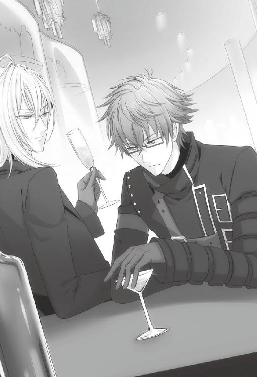
「まだ手も握ってないとか、そういう意味？」
「なっ！ 君は交際する前から女性の手を握ると言うのか！ 以前から思っていたが、君の......」
「ごめん。今のは例えがいけなかった」
待ったとばかりに、イッキュウは私の顔の前で手を広げる。
「スタートが違うって、どういうこと？」
「......研究室でも言ったが、彼女は私を嫌っている」
「ああ、そうだったね......」
「......君が推測したとおり、私と彼女の出会いはあの講師の真似事の時だ。詳細は語ると長くなるので省くが、私は講師を続けるうちに彼女に好意を持つようになっていた」
カラン、と相槌を打つように手の中で氷が鳴った。
「ほどなくして、私の散歩コースと彼女が犬を散歩させているコースが同じであることがわかり、講義以外でも顔を合わせるようになった。だが、さほど相性がいいというわけでもなく......いや、相性は最悪と言った方がいいな。会えば口論をするような仲だった」
「それだけを聞くと、メロドラマみたいだけどね」
「問題はこの後だ。彼女の犬が交通事故で死んだ」
「え......急展開過ぎない？ ......ケンもその場にいたの？」
「そうだ。偶然にも私はその事故の瞬間に居合わせた。彼女が手にしていたリードが腐食のために切れ、犬が飛び出し車にはねられる一部始終を目撃していた」
「......そう」
「放心状態に陥った彼女に代わり、私は運転手に重症の犬を動物病院まで運ぶよう渡りをつけ、彼女と共に動物病院へと向かった。結果、犬は助からなかったが、私はあの時私にできる最善の行動を取ったと思っている。だが、彼女はそうは思わなかったらしい」
「というと？」
「事故の後、私は彼女から『大嫌い』だと言われている」
「......そっか」
「............」
しばらく、私たちはどちらも口を開かずに杯を重ねた。
人に話すことで少しは違う視点が見えるかとも思ったが、彼女が私を憎んでいることを再確認しただけに終わった。それでも、少しばかり気持ちが楽になっていたのは、私があのことを重荷に感じていたからだろう。
グラスを傾けながら、あの時の自分の行動を再び思い返していた。──私は、正しいことをし、正論を彼女に伝えた。それ以上でも以下でもない。
正しいこと、自分の中で正論と思われる言動は、今までの人生で私を支え導いてくれた。正論をぶつけたせいで誰かと衝突したことも多々あるが、最終的には正論が正しい結果を生んだ。だがしかし......。
恋愛事に関しては、この考え方が通用しないのではないか。他の状況とは異なるアプローチをしなければ解決できないのではなかろうか。
彼女と交際を始めてから、私の中でそのような予感に似た考えが芽生え始めた。
私が黙り込み考えに耽っているのをどう受け取ったのか、イッキュウはグラスにわずかに残っていた酒を呷り、カンと軽く私のグラスに空のグラスを当てた。
「とりあえず、ケンが彼女とのこと、真剣に考えてるんだってことはわかったよ」
「............」
「だってケン、いつもなら他人の意見なんて気にしないじゃない。無視してるわけじゃないけど、誰にどう思われようと気にも止めないのがケンなのに、でも今は、彼女から嫌われたくないんでしょう？」
「それは......交際をしているのだから当然だろう」
「今まで付き合ってきた子たちにもそれが言えるの？」
「............」
「ほらね」
イッキュウは器用に私にウィンクを飛ばしてから、バーテンダーに私の分も追加の酒を注文した。
「まぁでも、今日会ったかぎりでは、ケンは彼女に嫌われてるようには見えなかったよ」
「会ったと言ってもほんの数分だろう」
「それも、誰かさんの鉄壁の守りの中でね」
「おい」
「でもそうかぁ。ケンが真剣に交際、ね。正直言うと少しだけ羨ましいな」
「羨ましい......？」
常に女性に囲まれているイッキュウには似つかわしくない言葉に思えた。が、その実、彼が純粋にひとりの女性だけを愛したいと焦がれていることにも気付いていたのでそれ以上追求はしなかった。
「ひとまず、付き合って一週間ならできるだけたくさんデートするところからじゃない？」
「努力はしている。そうだ、イッキュウ」
「ん？」
「先日君に聞いたデートの方法を実践してみたが、あれは本当に合っているのか？」
「どれのこと？」
「駅前を無目的に歩けばいい。そう言ったろう」
「ああ！ 言った、ね。......まさかと思うけど、駅前を歩いて通り過ぎただけとか言わないよね？」
「他に何がある」
「あー......うん。これは僕のミスだ」
「何！ 間違った情報を教えたというのか!?」
「そうじゃないよ。というか、そういう意味で言ったんじゃなかったというか......。ケンにはもっと噛み砕いて説明する必要があるんだってことを忘れてた」
それではまるで私の理解力が劣っているようではないか。文句のひとつも言いたい気持ちではあったが、ちょうど新しい酒が目の前に置かれたので言うタイミングを逸した。
「僕が駅前をぶらぶらしたらいいって言ったのは、通り過ぎるためじゃなくて、二人でウィンドウショッピングをするだけでも楽しいだろうって、そういう意味だったんだよ」
「ウィンドウショッピングだと......？」
それが何ら目的もなく、ただ無駄に商品を見て回る行動のことを言っているのはわかった。だがそれがどうしてデートに繋がるのか理解に苦しむ。
「ケンが考えてることを当てようか」
「......何だ」
「買う物もなく見るだけの行動に何の意味がある。時間の無駄だ」
「............！」
「ケンが無駄だと思ってようと、女の子っていう生き物の大半はウィンドウショッピングが好きなものなんだよ。それに男が付き合う。それも立派なデートのひとつだし、ウィンドウショッピングがどうしても嫌なら、景色の良い道を歩くだけでもいい」
「......駅を通り過ぎるのと何が違うんだ」
「まるで違うでしょ。そもそもウィンドウショッピングの間も会話を楽しめばいいじゃない......」
「雑談ならば......」
今日もしたばかりだと言おうとした私を、イッキュウは手で止めた。
「......聞く前に言っておくけど、女の子相手に数学とは何たるか......なんて語らないようにね」
「............！」
「............遅かったか」
イッキュウは大げさに溜息をつくと、急に真顔になって私の方に顔を向けた。
「ケン、僕もいろいろと言葉が足りなかったと反省してる。だから、ケンも真面目に聞いてほしい」
「何を」
「デートでの正しい過ごし方、だよ」
イッキュウによる正しいデートの仕方講義は、この後五時間に渡って繰り広げられた。
８月４日
今日は木曜日。彼女はバイトに勤しんでいるはずである。
別に彼女の行動を日々管理しているわけではないが、限られた時間の中でできるだけ共に過ごす必要があると考えているため、必要最低限の予定は把握するようにしていた。
だから、初めから彼女が来ないのだとわかっていれば、それほど集中力を欠くこともない。私は朝から自宅で研究に没頭していたが、気が付くと窓の外は暗く星が瞬いている。そういえば、室内の電気をつけた記憶がうっすらとあった。
肌寒いとは言え、今は八月だ。昼は長く夜が短い。モニターの時刻は思ったよりも遅い時間を示していた。
「もうこんな時間か......」
伸びをして、私は椅子から立ち上がった。随分と長い時間同じ姿勢でいたせいか、体がおかしな音を立てて軋んだ。
ふと、机の上で充電したままの携帯が視界に入る。もう、彼女はバイトを終えた頃だろうか。
無理にメールを送らなくても良いと了承を得てから、朝夜のメールは送っていない。だから、というわけでもないが、この今も用事もないのにメールを送る必要はなかった。
必要はなかったが、気が向いたからという非積極的な理由で私はメール作成画面を開いていた。しかし、何を打っていいものかが浮かばない。
結局、悩んだ挙げ句に『お疲れ様』と一言だけ打って送信した。我ながら、全くと言っていいほど進歩がない。いや、進歩がないと自分で思うのだから、わずかにではあるが進歩しているのだろう。
それでもどこか晴れ晴れとした気持ちで机に戻ろうとした時、携帯にメールが届いた。このタイミングで何の業務連絡だと、私は画面を確認しないままにメールを開いた。
「!?」
メールは彼女からの返信だった。
『ケントさんもお疲れ様です』
何度読み返しても、文言は変わらない。念のため送信者の確認も数回したが、彼女からのもので間違いはない。そもそも、私のことを『ケントさん』などと奥ゆかしく呼ぶのは彼女くらいなものだ。
心なしか、じわじわと胸の辺りがあたたかくなっていく感覚を覚える。彼女から来たメールに喜んでいるとでも言うのか。
彼女から初めてメールをもらったことに驚き、興奮したことによって発生したドーパミンが作用しているのだということは理解しているが、知識と実際に体に起こる現象とが上手く結びつかない。
落ち着けと自分に言い聞かせながら、今感じているままを言葉にした。
『......どういうつもりだ？
だが、ありがとう。
嬉しいものだな』
読み返すとまたろくなことにならない気がして、そのまま送信する。
心臓はまだ、常時より速いテンポで鼓動を刻んでいた。
８月５日
研究に没頭していると、時間が経つのが早い。ただ自宅にいるだけだというのに、気がつくと一日が終わっていたなどということもざらだ。
私は区切りの良いところでファイルを保存し、小休止を取ることにした。誰もいない一階へ下り、インスタントのコーヒーを淹れる。
集中力を高めるには紅茶が効果的だと言われているが、自分の体にはコーヒーが合っていると思う。
湯気の立っているうちに角砂糖を放り込み、二階へと持って上がる。
彼女がいつも座っているソファで一息ついていると、卓上カレンダーの日付が目に入った。学会まで後二〇日。研究の進み具合はあまり順調とは言えない状態だ。
学会で認められれば、大学からの奨励金により、ロンドンへ一年間の留学待遇が与えられる。
海外で勉学に励むことは私の幼い頃からの目標だ。私が学びたい分野は日本でも学べはするが、最先端の情報の元で研究に取り組むには、海外に出るのが最も効率が良い。それに将来研究者として活動するに当たり、箔も付く。
二五日の学会で大学側に認められれば、その道が開ける。そのためにも今は集中して研究を進めなければならない。──ならない。と頭ではわかっているのだが、時刻が夜の六時を回った途端、彼女の顔が脳裏に浮かび、研究のことが代わりに脳から追い出されていく。
こんなことでは留学の権利を勝ち取ることなどできない。しかも、学会に間に合わない可能性すらある。
危機的状況であるにもかかわらず、私の頭の中では相変わらず彼女が楽しそうに笑っている。そんな満面の笑みを向けられたことなど一度もないというのに。
たかだか男女交際ひとつにこんなにも意識を奪われるとは、私はどうしてしまったのだろう。
しかし、気になるものは仕方ない。彼女に会いたいという感情も、紛れもなく自分のものだ。諦めて、感情の処理をすべくメールを打った。
『明後日の日曜は休みだろう。
会おう』
明後日の約束とは、急だっただろうか。彼女のバイトの予定は決まっているのだから、もう少し早く約束を取り付けておくべきだったと後悔した。
返信が来るのは早かった。今度はメール本文を見る前にメールが彼女から届いたことを視認していたから、昨日ほど驚かずに済んだ。
彼女に予定があればそれはそれで仕方ない。直前に連絡をした私が悪いのだ。その心づもりをしてから、メール本文を確認する。
『楽しみにしてますね』
携帯を落とした。
ゴトンと派手な音が耳に届き、ようやく自分が携帯を落としたのだと気付く。慌ててそれを拾おうとして、うっかり携帯の液晶画面を足で踏みつけてしまう。そして、体重を全てかけてしまう前に足を浮かせたことで今度は私自身がバランスを崩し、床に倒れてしまうところだった。いくらなんでも慌て過ぎだ。
努めてゆっくりと深呼吸をしてから、確実に携帯を拾った。画面が真っ黒になっていて一瞬焦ったが、時間経過によるものだったらしくボタンを押すとすぐに画面が明るくなった。どうやら壊れてはいないようだ。
彼女から届いた返信メールも、きちんと残っている。夢ではない。
これは彼女の真意だろうか。彼女の方から歩み寄ってくれていると捉えて問題ないのだろうか。
逸る気持ちを抑え込もうにも、私の脳は都合よく他の可能性の穴を見つけて排除していく。
『驚きすぎて、携帯を落として踏んだ。
携帯は壊れていなかったようだが。
君は壊れたのか？
だが、まあ、その。
私も楽しみにしている。
正午に迎えに行く』
メールには、ありのままを書いた。......呆れられるだろうか。しかし、他にどう返していいのか今の私にはわからない。
会話が完結している以上、これ以上、返信が返って来ることはないだろう。携帯をそのまま机に置こうとして、思い直してまた手に取った。
「確か......」
携帯を購入してから初めて、メール保存という機能を活用した。これは、何も感情の赴くままに取った行動ではない。あくまで、彼女が今日取った行動を記憶し切れなかった時の確認用として、保存したまでだ。ついでに昨日、彼女から届いたメールも、合わせて保存することにした。
しばらくメール画面を眺めていたが、何故か不意に昔イッキュウに付き合わされて観た映画を思い出していた。
その映画は女性が主人公で、何によってだったかは忘れてしまったが記憶を失う運命にあった。記憶を失った女性は恋人に他人のように振る舞い、ぼんやりと日々を過ごし、最終的には新たな人生を歩むことになる。つまり、元の恋人とは別れてしまう悲恋ものだ。
あの映画の中で、主人公の女性は恋人に対し急に態度を変えていた。それにショックを受ける恋人の演技が秀逸だったせいで、そのシーンはよく覚えていた。
何故、今こんなことを思い出したのだろうか。変化のプラスマイナスが逆とは言え、私は映画の中の男性と自分を重ね合わせているとでも言うのか。失笑しそうになったが、記憶を失った主人公と彼女のここ数日の様子は似ているような気がして固まった。
何を突拍子もないことを考えているのだと、今度こそ苦笑した。この世界にフィクションと同じような出来事が早々起こりうるはずもないし、そもそもあの映画の中でも、自分の記憶がないとわかった時の主人公の取り乱しようはすごかった。名演技だった。──彼女のように、落ち着いている人間が記憶喪失だとはとうてい思えない。
どうも私は悪い方へ物事を考えがちだ。
一口だけ残っていたコーヒーを一気に呷ると、溶けずに残っていた砂糖のせいで口の中に甘ったるい味覚が広がった。
８月７日
彼女と約束を交わした日は想像以上に早くやって来た。
ちょうど正午に彼女のマンションに着くよう家を出たつもりだったが、歩くのがいつもより速かったのか五分ほど早く到着しそうであった。マンション前で待っても良いが、不審者と間違えられてもことだ。一本道を遠回りすることで調整しようと、私は道順を変えた。
そうして時計と彼女のマンションを交互に確認しながら歩いていると、ちょうどエントランスから彼女が出て来る姿が見えた。
「待たせたな」
遠回りが功を奏し、まさに正午ちょうどだ。
彼女はほんの少しだけ驚いたような顔をしたが、「こんにちは」と当たり障りのない挨拶を口にした。
「行こう。今日は、以前君とよく会った道を歩いてみようと思っている」
イッキュウから受けたデート講義では、景色の良い道を散歩するのも良いと習った。それならば、双方思い入れのある道の方が良いだろう。
彼女も散歩が比較的好みだということは、失敗には終わったが前回の行動からわかっている。
特に彼女から異論が出ないことを確認してから、私は彼女に背を向けた。
一瞬、彼女の何も持っていない手が視界に入り、それを慌てて追いやる。連想ゲームのように繋がりかけた思考を無理矢理断ち切り、大股で道を踏みしめた。
手が空いているからといって、何だと言うのだ。
一時間ほど、そうして歩いていただろうか。
私は散歩が日課だし、彼女も犬を飼っていた頃は毎日散歩に出ていたのだから、一時間歩くくらいどうということもないだろう。
少し先に霊園が見えて来た時、彼女が何も言わずに足を止めた。私との距離が空いていくことに気付いていないのか、中々歩きだそうとしない。
仕方なく、私の方が引き返して彼女の前に立った。
「......どうした。なぜついてこない」
彼女は何もない空間を見ていた。また考え事の時の癖が出ている。
「何か話をしませんか？」
「......話？」
数秒の間考えてみたが、今この場で提供するに値する話題は思い浮かばなかった。無論、数学に関する話題ならば無限に思い付くが、会話をしたい相手に振る類のものではないと先日学習したばかりだ。
「私からは特に話したいことがない。話がしたいならば、君から話題を提供してくれ」
前回は私が話題を提供したのだから、今回は彼女が提供しても問題はないはずだ。自ら話したいと言い出したからには、話題のひとつやふたつは用意してあるのだろう。
「............」
何もない味気ない道路で、私たちは向き合って立っていた。
私は彼女が話題を提供するのを待っているのだが、彼女はというと「えっと......」と口籠もったきり、先を続けようとはしない。
まさか、彼女も話題がないのだろうか。それとも逆に、話題が豊富過ぎて選べない状況なのか？
このまま待つべきか、歩き出すべきか迷っていると、
「同僚から恋敵宣言されました」
ようやく提供された話題がこれだ。
──同僚から、恋敵宣言？
「......ほう。なかなか興味深い話題を振ってくるな」
同僚、というからには働いている仲間、つまりは彼女のバイト先の従業員を指すことはわかる。不可解なのは恋敵宣言の方だ。
彼女が『された』と発言したことから、彼女自身が同僚と恋敵の立場にあることがわかる。彼女の恋敵になり得るためには、彼女と同僚が、彼女が恋愛をしている相手を取り合う必要がある。
この、彼女が恋愛している相手というのは、この場合私を指すのだろう。そうでないとすれば、それはそれで違う問題が発生する。
彼女の同僚が、私に恋慕の情を抱いており、それを彼女に告げた。これが彼女に起こった出来事だ。
となると問題は、彼女がその事を私に告げた意味だ。
何故、わざわざこのような会話を持ち出す必要がある？ 仮にも、私は彼女と交際しており、交際を申し込んだのも私の方からだ。その私に対し、自分の他に私を好いている人間がいることを知らせてどうするつもりなのだろうか。私が彼女以外の異性に好かれて喜ぶとでも思ったのか？
万が一にも私が喜んだとしたら、彼女の立場はどうなる。交際している女性として、立つ瀬がないどころか、降板劇が巻き起こってもおかしくない事態だ。それとも、それこそが彼女が望むべきことだとでも言うのか。
「そんな話をして、君は私にどう反応してほしいんだ？」
全く、理解に苦しむ。
堪えきれない溜息は重く、地面にめり込む幻想を引きずりながら落ちていく。
「......君は今日も退屈そうだな。私と過ごすことに意味を見出しているようにも見えない。挙げ句の果てに出してきた話題が、同僚から恋敵宣言された話か」
彼女の真意を探ろうにも、彼女は視線を不安定に揺らすばかりで何も言わない。生徒と講師として接していた時はもう少し表情から感情を読み取れた気がしたが、今はその感情もポーカーフェイスによって隠されていた。
「それで？ それがどうしたんだ？ まさか君は私にその女性を紹介しようとでもいうのか？」
やはり、彼女は私との交際に意義を見いだせず、早々に終了したいと思っているのだろうか。急に議論を交わさなくなったのは、その価値を感じなくなったと、そういうことなのか。
だが、私はまだ......。
「なるほど。君はわざわざ同僚と対立してまで私と付き合うほどの情熱など持ってはいないだろうな。そもそも私といても苦痛なだけだろうし、同僚に恋敵がいるならなおさら苦痛だろう」
胸の内にはどす黒く要領を得ない多くの考え、可能性がとぐろを巻いている。それでも、私の口は彼女から『別れよう』という言葉を聞くまいと攻撃という名の防御を試みる。
「遠回しに別れたいと言われているようにも思えるが、そう解釈していいのかな？」
──ああ、これでは駄目だ。ここであっさり認められてしまったら、どう返すつもりなのだ。
冷静なつもりでいても、私は上手く言葉を制御することができなかった。
「私もよく無神経だと言われるが、君も大概だな。そんな話を私が楽しんで聞けるとでも思っているのか？」
わずかに、本当に注意していないと気付かない程度に、彼女の表情が動く。私にはそれが哀しいものに見えたが、本当のところはわからなかった。
彼女を引き留めるにはどうすればいい？ その疑問だけがぐるぐると脳内をループする。
「確かに私は以前と変わらず、人間は生涯を通じて複数の異性と関係を持つのが効率的だと思っている。だが、それは何も同時に複数の女性と関係を持つという意味ではない」
どう伝えれば、彼女の同僚に好意を持たれようと私には意味がないということがわかってもらえるのだろうか。
「私にはそれほどの情熱も時間もないよ。君のお相手すら十分に務められていないようだしね」
彼女がいてくれればそれで良いのだ。持論と矛盾している箇所は、この際持論の方を曲げてもかまわない。
「もちろん、飽きが来れば早々に別れ次の関係を探るのが効率的だが、私は見切るにはまだ早いと考えている」
つまり......つまり、私は何を彼女に語ろうとしているのだろうか。彼女は今、私の語る言葉をどう受け取っている？
相槌すら打たない彼女の瞳には、淡々と持論を展開する男が映っていた。
「つまりだ、今現在私に好意を持っている女性が存在したとしても私にとっては何ら関係ないということだ。しかし、君の方はもう飽きたのかな？ それならば先ほどの話にも意味が生まれてくるが」
ずっと黙って耳を傾けていた彼女が、口を開きかける。その動作を見つめながら私は、彼女がすでに私に飽いたのだと言った場合の対策を十案ほど考えた。
「飽きたら別れるつもりなんですか？」
しかし、彼女の発言は予想とは異なっていた。
彼女の口調にはうっすらと非難の色がついている。今まで、私と彼女の考えが衝突していた時とは比べものにならないほど弱かったが、確かに彼女の主張どおりの不満だ。
「......何を言っている。以前から私は同じ主張をしている。そして君と何度も口論をしただろう。まさか、忘れたのか？」
あれだけ議論を繰り返し、決着もつかなかった事案だというのに。
だが、今ここでまた議論の火ぶたを切るつもりはない。ましてや、私はその『飽きる』時が彼女が相手でもやって来るのか甚だ疑問だとすら思っているのだ。議論のしようもない。
「まあ、今現在はまだ飽きてはいないから、単なる主張に過ぎないがね」
付け加えた言葉はまるで言い訳のように自分の耳に響いた。
勢いのままにここまで語ってしまったが、彼女からは反論らしきものが返ってきていない。それだけに今、彼女の中でどのような考えが展開されているのか不安が募る。
どうしてまた、口論になってしまったのだろう。せっかくここ数日、口論が減ってきていたというのに。
彼女は中空を何も見ていないかのような瞳で見上げていた。
いつ、最後の審判が下されるのかと想像するだけで、鼓動が不規則に跳ね上がる。
しかし、突然彼女の体が傾ぎ、裁決どころではなくなった。
「......!? どうした!?」
私は慌てて彼女の腕を掴み、どうにか転ぶのを防いだ。片腕を掴んでも彼女の体は不安定で、「大丈夫です」という言葉を無視して両手を掴むようにして彼女を支えた。
「......また立ちくらみか？ 君はそんなに体の弱い方だったか？」
ただ首を横に振られても、何に対する返答なのかわからなかった。
青白い彼女の顔に、理由のない罪悪感が胸に広がっていく。
「......口論をしている場合ではなさそうだな。歩けるか？ 家まで送ろう」
マンションまで送り届ける間、私はずっと彼女の二の腕を掴むように支えて歩いた。その細く柔らかい感触に、何故か罪悪感が増していく気がした。
彼女の姿が見えなくなった後も、私の手の平にはその感触がずっと残っていた。
消えない手の平の感触を感じながら、私は自宅に帰り着いた。闇雲に歩き続けているうちに、近所の家には煌々と明かりが灯っている。我が家はいつものごとく無人で、明かりがついていない。両親共に、今夜帰るかも怪しかった。
帰ったのだから研究の続きをしなければならない。そうでなくとも今日は一日、資料を開いてすらいないのだ。
頭ではそう思うのに、パソコンを起動したきりモニターを覗く気すら起きなかった。
彼女の青ざめた横顔を思い出す。強く握れば折れてしまいそうなほど華奢な二の腕を思い出す。
彼女が、急に目眩や立ちくらみを起こすのは私のせいかもしれない。
そう思うのにはそれなりの根拠があった。それは、私が知る限り彼女の体調が急に悪くなった時、私は彼女にとって不快だと思われる議論や言葉を投げつけていなかっただろうか。
私の知らない場所で同じような症状を起こしているのかもしれないが、私が言葉で彼女を追い詰め、責めたせいで彼女が具合を悪くしたのではないと、どうして言い切れる。
また、少し前のように口を開けば口論になる日々に戻ってしまうのだろうか。さらに、そこには恋人という繋がりが残っているかさえも怪しい。
彼女の具合はもう良くなっているだろうか。直接聞けばいいのだろうが、私がまた何かするせいで悪化させてしまうといけない。いや、正直に言うと、彼女に迷惑がられることが不安で連絡する勇気を持てなかったのだ。
私はソファに深く腰かけ、深く長い溜息をつく。ポケットに違和感を覚えて手を入れると、携帯が入っていた。
何気なく携帯をいじり、保護してある彼女からのメールを眺める。消えてなくなってしまうほどメールなどしないのに、大事そうに保存している自分に笑った。
笑った後で、また溜息が零れた。
できれば、これから先も彼女と交際を続けていきたい。このメールのように、普通の会話をし、時に笑い合えたらと思う。そのためには、私はどうすればいいのだろう。
しばらく悩んだ結果、他力本願ではあるが友人の意見を聞こうと決めた。恋愛の、しかも相談事を再三に渡って持ちかけるとは情けないが、背に腹は変えられない。
電話は二コールで繋がった。
「相談がある」
『......また藪から棒に。前にも言ったじゃない。電話には間が......』
「その間すら、相談事に当てたいほど悩んでいる」
『それは......深刻だね。わかった。一分だけ待ってくれる？』
受話器を抑える音が聞こえた後、イッキュウが誰かに向かって謝っている声が遠く聞こえた。
『いいよ』
「すまない。邪魔をしただろうか」
『気にしないでいいよ。大した用事でもなかったし』
あっさりとした口調に安堵しつつも、この借りはいつか返さねばと心の片隅に留め置く。
『それで、どうしたの』
「彼女と別れないためにはどうすればいいと思う」
『......付き合って一週間程度じゃなかった？』
「今日で一一日が経過した」
『随分と急展開に感じるけど』
「そんなことはない。常に終演とは隣り合わせだ」
『......ひとまず、今日何があったのか話して。できるだけケンの考えも入れてね』
「わかった」
イッキュウの適度な相槌を聞きながら、私は今日の彼女とのデートでした議論について説明した。彼女の具合がまた悪くなり、それが私のせいではないかという点についても、余さず。
『ふうん。彼女が恋敵宣言を、ね』
「ああ。私としては遠回しに別れ話を持ちかけられているとしか思えないのだが」
『それはどうかなぁ』
「違うのか!?」
思わず、背もたれから背中を浮かせた。
『必ずしも、別れ話だとは限らないと思うよ。例えば、ケンを妬かせたくて言ってみただけとか』
「妬かせる？ そんなことをして何の得がある」
『ケン、世の中は損得だけで回ってないんだよ』
呆れたようなイッキュウの口調に、次の言葉を呑み込んだ。
『それで、ケンは彼女に何て言ったの？』
「だから、今言ったとおりだ」
『まさか、遠回しに別れようって言ってるの？ って彼女に聞いたわけじゃ......』
「そのとおりだが」
電話越しにイッキュウの溜息がはっきり聞こえる。
『いい？ ケン。僕は今、ケンが思っていることも同時進行で聞いてたからケンの気持ちもわかったけど、彼女には伝えてないことがほとんどだよね？』
「私個人の見解による意見を伝える必要はなかったからな」
またしても、長く深い溜息が聞こえた。
『言葉にした部分だけじゃ、ほぼ一〇〇パーセント誤解を受けるだけだよ』
「何っ!? だが、私にはあれ以上の説明は......」
『うん、それもわかるよ。だから、ケンは今日でも明日でも明後日でも、彼女に会ったら今から僕が言うことをそのとおり伝えるのがいいと思う』
「イッキュウの言うとおりにだと......？」
一度ならず、イッキュウが女性を口説いている現場に居合わせたことがあるが、まさかあのような台詞を私にも言えと言うのだろうか。
『ちょっと、聞こえてる？』
「あ、ああ......だが......」
『ここまで細かく話を聞いた上で、僕がケンの言わんとしてることを彼女向けに翻訳するだけだから』
私と彼女が同じ言語を使用している時点で翻訳が必要だとは思えなかったが、現に私は彼女が恋敵宣言の話をした意図がわからなかったし、私の言葉も彼女に正しく伝わっている感じはしていない。ここはやはり、イッキュウの言うことが正しいのだろう。
納得をしてから、私は先を促した。
「そう、か......では、頼む」
『じゃあ、言うよ。......誰が思いを寄せてくれようと、私には関係ない。私は君が好きで、その気持ちは揺るがない。君はそう思ってはくれていないのか？』
「......今の台詞を、そのまま彼女に伝えるのか？」
『そう。改変しないでそのまま、ね。ケンの気持ちをケンっぽい言葉に翻訳したからすごく違和感があるってほどでもないでしょ？』
「あ、ああ」
『もちろん、ケンが僕の読解力を疑うなら使わなくても構わないよ』
悩む必要はなかった。
「いや、信用している」
『......ケンって、変なところは素直だよね』
「私は常に認めるべきものは認めているつもりだ」
『物は言いようかな』
呟かれた言葉は、敢えて聞こえないふりをした。
イッキュウに翻訳してもらった内容が、的確に私の気持ちを表しているのかどうか、今の私にはまだ理解できなかった。だが、少しでも彼女に本当の気持ちが届けばいいと願う。
『そもそも、何で喧嘩になったの？ 僕がレクチャーしたとおりにデートしたんでしょう？』
何やら電話の向こうから陶器と陶器が重なる音がした。どうやら、イッキュウはコーヒーを淹れているらしい。喉を潤す必要が出て来る程度には、長電話になっているようだとようやく気付く。
「ああ。講義で得た知識をフル活用し、彼女との思い出の道を散歩した」
『いいね』
「途中で彼女が話をしないかと言うから、それならば君から話題を提供してほしいと言った結果が、先ほどの話題に繋がる」
『ちょっと待って』
「？」
『話をしないかって、彼女が？』
「そうだが？」
『それまで、どうしてたの』
「散歩をしていたと言ったろう」
『そうじゃなくて、会話は？』
一瞬、間が空いた。
「話題がないのにどうやって会話をしろというんだ。そもそも、数学論は女性にするべき話ではないと言ったのは君だろう」
『うん......』
「どうした。何故黙り込む？」
『ケンの味方でいるつもりだったけど、彼女の味方についた方がいいのかなって』
「なんだと？」
『冗談だよ。けど、ケン。僕と歩いてる時は会話するじゃない』
「それはその場その場で考えている適当なことを口に出しているだけだろう」
『それでいいと思うけど、彼女と歩いてる時は何を考えてたわけ？』
「それは......っ」
最近、彼女と歩いている間に頭から離れない考え事があったが、あまり口に出すべき内容ではないと感じている。
『何......もしかして、口に出すのも憚られるようなＨなこと考えてた？』
「違う！ い、いや......違わない、のか......？」
『え』
「いや、私はただ！ 世の中のカップルはどうして手を繋いで歩くのかといったことを考え、しかし彼女と接点を持つにはまだ彼女は私に好意を抱いていないことも十分理解しているから、そういった行動については自重しなければならないこともまた十分理解しているわけだな。ただそれでも彼女の手が空いていることが気になってしまい、見ないようにしなければと考えるうちに、それが結果的に無言のまま歩くことになってしまっているというわけだ」
『............』
「また、無言で歩いているうちに自然と足が速くなっているようで、彼女はたまに小走りになってしまうのだが、その彼女の慌てた様子を可愛いと感じてしまい、走らせて疲れさせているのは私だというのにどうしようもなくやはり会話が......」
『......っ......』
「イッキュウ......？」
咳き込むような、何かを抑えるような苦しげな声に、思わず言葉を途中で切る。
「どうしたイッキュウ？ 発作か？」
『ち、違っ......ふ......はは』
「どうした......？」
『あっははははは！ ご、ごめ......、お腹痛い......っ』
「なに。急に腹痛に襲われたのか？」
『そうじゃ、なくって......はは！ あー......ちょっとケン。僕を笑い死にさせる気なの？』
「は？」
今もなお、イッキュウは苦しげに息を弾ませている。一体今の話のどこに、笑い死にするほどの要素があったというのか。
「私の話をきちんと聞いていたのか？」
『聞いてたよ。聞いたせいで......ぷ』
「......笑うな」
『ごめんごめん。とりあえずさ、ケンは今僕にした話を全部そのまま、彼女にしなよ』
「何だと......っ？」
『できればもうちょっと考えてることを順を追って、丁寧にね』
「いやしかし」
『話したらきっと、いろいろ解決すると思うよ』
「............」
『最後に、ひとつ』
イッキュウはこれみよがしに咳払いをした。
『恋愛の先輩として彼女と喧嘩した後、仲直りできる方法を伝授するよ』
そんなものがあるのなら、初めからそれを教えておいてくれればいいものを。とは、かろうじて声に出さなかった。
『彼女にプレゼントをすること』
「贈り物ということか？」
『そ。彼女を怒らせちゃったな～って時には、心のこもったプレゼントを贈る。これが一番だよ』
報告待ってるから、とまだ笑いを含んだ声で言うと、通話は切れた。
しばらく、携帯から聞こえて来るツーツーという無機質な音を聞いてから、携帯を机に置く。
イッキュウに相談した結果が吉と出るか凶と出るかはまだわからない。だが、明日、私は彼女に話してみる気でいた。そのためにも、まずは明日の約束を取り付ける必要があったが、すでに夜も遅い上に彼女は具合が悪い状態で帰宅したことを考慮し、連絡は明日入れることにした。
それに、私にも為すべき事がある。
「──心のこもった贈り物と言っても、範囲が広すぎる」
しかし、あのイッキュウが一番だと豪語するほどだ。その効果は覿面に違いない。
早速机に向かい、すっかりスリープ状態になっていたパソコンを起動する。
「恋人、贈り物......か？」
キーワードを打ち込み、インターネットで検索をするとすぐに大量のサイトがヒットした。
「二〇〇万......!? まいったな」
プレゼント、喧嘩、仲直り、口論、謝罪、喜ぶ、彼女、心のこもった......。考えられる検索ワードを入れ替え、ヒットしたサイトの中からめぼしいものを見ていくうちにある傾向に気が付いた。
「......なるほど」
どうやら、心のこもったプレゼントという分類に入る贈り物は、手作りが多い傾向にあるらしい。確かに、手作りならば手間も時間もかかっている分、その心意を伝えやすいのかもしれない。
では、手作りの贈り物に絞った上で、私が彼女に贈っても不自然ではない物とは何なのか。
一般的に、謝罪やちょっとした贈り物程度の際は、手作り弁当やクッキーといった手軽なものが喜ばれる、という記載が目に入る。確かに飲食物ならば食べてしまえば後に残らず、コストも抑えられ受け取る側としても重荷になりにくい。
クッキー程度ならば、今からでも焼くことが可能だ。だが、私が彼女にクッキーを贈って何の意味があるというのか。謝罪の気持ちだ、と手作りクッキーを渡す場面を想像し、不自然さと関連のなさにその案を却下する。
クッキーの案を排除し、次の候補へと私は目を向けた。
そうだ、彼女はまだ学生だ。学生らしいものを贈るというのはどうだろうか。
学生らしいものと絞った時、頭の中に閃きが生まれた。
「......我ながら、いい考えだ」
どうして初めからここに思い至れなかったのか不思議なほど、ぴったりの贈り物を思い付いてしまった。
私が贈っても不自然ではなく、学生の彼女のためになり、かつ手作りの物。
まだ時刻は夜の一〇時を回ったところだ。今から取りかかれば、明日までに十分間に合う。
天啓が下ったとしか思えないアイディアに顔を綻ばせながら、私は早速心のこもった贈り物の作成に取りかかった。
８月８日
ブラインドの隙間から、明るい日差しが差し込んでいる。朝だ。
手作りの贈り物のために夜を明かしたわけではないが、それを作り終えた後も調子が良くついついそのまま研究の続きに手をつけたら眠るのを忘れてしまっていた。
それでも二時間ほど仮眠は取ったので、体調的には問題は感じられない。彼女の方は、具合はどうだろうか。
そろそろメールを送っても問題になるような時刻ではない。具合が悪く伏せっていたとしても、メールならばそこまで迷惑がかかることもなかろう。
昨日の今日で彼女に連絡をするには少なからず勇気を必要としたが、イッキュウに長々と相談した結果を見せなくてどうする、と自分に活を入れてメール画面を開いた。メール本文は何度も書き直し、伝えたい気持ちのままの文章になっていると納得できるまで書き直した。
『君と口論ではない話がしたい。
君もそう思ってくれるのなら、
昨日の霊園に来てくれないか。』
彼女と喧嘩をしたいわけではない。それはこの文面で伝わっただろうか。
彼女からの返信はすぐには来ないようだった。まだ具合が悪く伏せっている可能性も当然ある。
ということは、彼女が霊園に来られない可能性もある。
それをわかっていてもなお、私は霊園へと向かった。彼女が来てくれることを信じ、待とうと思う。
長袖を着る必要はあったが、気持ちの良い気候の日だった。夏だというのに、空には鰯雲が広がっている。
どのぐらい彼女を待つことになるかわからないが、このように良い天気ならばぼんやりと考え事に耽るのも悪くない。
霊園に着き、私は適当なベンチに腰を下ろした。
数時間は粘る覚悟でいたというのに、彼女は一〇分もしないうちに現れた。
「......来てくれたか」
彼女は来てくれると信じていたのに、やはりほっとした。
私を見つけると、彼女は小さく頭を下げた。このところ口数がめっきり減っている。
彼女はベンチに座っている私を見下ろしたまま、隣に座ろうとはしなかった。ゆっくり座って話をする気はないという意思表示なのかと捉えかけてやめた。わだかまりをなくしにきたのに、新たな喧嘩の原因を探しても意味がない。
「......少し歩くか」
ベンチから立ち上がって、景色の良い小道へと足を向けた。
「............」
確認すると、彼女は黙々と私の後ろをついて来ている。その顔には喜びや不満といった類の感情は浮かんでおらず、とてもじゃないが散歩を楽しんでるとは思えなかった。
もう少し、感情を表に出してはもらえないものだろうかと無意識のうちに溜息をついていた。
「......こうして歩いている時、君は何を考えているんだ？ どうして黙ってついてくる？」
彼女は小首を傾げて、
「ケントさんは何を考えてますか？」
質問を質問で返してくる。そうか。君はそう切り返すのか。とまた溜息をつきそうになったが意識して押さえ込む。
「......私自身の話をする前に前振りを入れようとしたのがわからないのか？」
すぐには言葉を次ぐことができず、聞きようによっては文句と取られそうな台詞を言ってしまう。無意識のうちに、防御壁を築いているのかもしれないと、苦笑した。
「まあ......逃げるなということか」
昨夜、イッキュウと話した会話を脳裏に思い浮かべた。言葉を惜しまず、思っていることをそのまま伝えることが大切だ。私個人の見解であり、何ら彼女にとって意味を持たない意見だとしても、言えと。
「......私はな。こうして歩いている時考えていることがある」
本当に、思っているままを全て伝えても大丈夫だろうか。全てを伝えた途端、彼女が愛想をつかし去る可能性もゼロではない。
「............」
私は横を半歩下がった位置で歩く彼女の顔色を窺った。彼女は私の視線に気付いて顔を上げ、続きを促すように首を傾げる。その彼女の手は、私に接している側ももちろん空いている。
「この遊歩道はカップルが多いな」
私はさりげなく視線を周りに向けた。私の誘導に素直に従い、彼女も私たちの横を歩くカップルを見る。
「彼らはなぜか皆手を繋いで歩いている」
だが、私たちは手を繋いでいない。その空いた手が、手持ちぶさただと思い始めたのはいつからだろうか。
「私もなぜか君と手を繋ぎたいと思う。だが、どれほど考えてもその必要性が見当たらない」
頬に彼女の視線を感じていた。それに気付かないふりをして、私は先を続ける。
「彼らはなぜ手を繋いでいるんだ？ 愛情を確認する儀式か？ 順次接触を増やしていく段階のひとつとしてか？」
恋人同士が手を繋ぐ理由は、いくら考えても答えの出る問題ではなかった。
なぜなら『～したい』という欲求を前に、全ての理由を挙げようとしてもそれはまだ現代科学では証明しきれていない脳の中の出来事だからだ。彼女は常々それを、まだ解明されていないホルモン物質のせいではなく、『心』、すなわち『感情』の為せる業だと主張していた。
「なら、私と君の場合はどうだ」
私はその感情論というものを信用していない。付き合っている女性が心理学専攻だというのに滑稽なようにも思えるが、心理学とは立派な学問のひとつであり、ただ感情論を振り回すだけのものではないと別の見地から認めている。
彼女にいつも考えていることを率直に語りかけながら、私は同時に複数のことを考えていた。
「君が私に愛情を持っているとは思えない。接触を増やすにはまだ早すぎるようにも思える。つまり、客観的な必要性はない。それなのに私は君と手を繋ぎたいと思う。なぜだろう」
彼女の顔を見るのには勇気が要った。しかし、これも理由がわからないというのに、『顔を見たい』、『～したい』と思ってしまうことのひとつだ。
「突然手を取ったら怒るだろうか。私は理由を何と説明すればいいのだろうか。振り払われないだろうか。そもそも手を繋ぐ必要があるのか。私は周囲の恋人たちに同調しようとしているだけではないだろうか」
予想に反して、彼女は呆れていなかった。相変わらず表情は乏しいが、その瞳は真剣だ。そのことに酷く安堵しながら、自分の考えを語る。
「必要性が見つからないのであれば、私は認めざるを得なくなる」
ひとつ息をついて間を置いた。
「私は君が好きで......君に、その......ただ触れたいんだということをだ」
今度は彼女の顔を見られなかった。
「......隣を歩いていると、どうしても君の手を意識してしまう。それでつい早足になる。君がついてくるには速すぎただろうか。だとしたらすまない」
今も早足にならないように自分を諫めていないと、彼女を置いてひとりで歩いていってしまいそうだった。私の足は私よりも正直で、勝手に逃げ出してしまう。
ここまで私は随分と支離滅裂な論理展開で語った。今からが、彼女の反論の時間だ。
どれほど酷い反論が来てもおかしくない。それだけ、私は元々私が主張していた考えとは異なる話をした自覚があった。それは持論の矛盾を認める行為であり、彼女の意見を正しいと認めることにも繋がる。
今まで散々議論、口論を繰り返して来た事柄にも関係している。彼女とて言いたいことは山ほどあるはずだ。
それなのに、彼女は微かな笑みさえ浮かべて私を見上げただけだった。
「......君は付き合い始めてから、私に対する態度が変わったな。とげとげしさがなくなった」
否定されない。そのことが、これほど心地よいものだと今まで私は知らなかった。彼女との会話はいつも、否定されないよう、認めさせるよう強要している部分があったのかもしれないと、今なら思う。
「そのおかげで、この一週間君と穏やかに過ごすことができた。できればこの状態を維持したい。だが、君の態度が変わった理由がわからない。先に踏み出していいのかわからない」
自分に都合の良い可能性を選んでいるだけだとわかってはいても、彼女が私に徐々に好意を抱いてくれているのではないか。そのおかげで態度が軟化し、良好な関係に発展しつつあるのだ、と。そう期待し、願わずにはいられない。
「私は歩きながらそういったことを考えていた。まだ何か疑問はあるだろうか」
一度足を止め、私は彼女の返答を待った。彼女は少し考える素振りをした後首を横に振り、
「......手、繋ぎましょうか」
と、ぎこちない動作で私の方に左手を差し出した。
これには驚いた。
「......いいのか？」
ついつい、彼女の小さな手を凝視してしまう。
念を押すと、彼女は一瞬躊躇ったものの、しっかりと頷いてくれた。
「君がいいというのなら......そうだな。そうしようか」
そっと繋いだ手は小さく、下手をすると握りつぶしてしまいそうだった。
笑顔でデートを楽しむ恋人たちの横を、私たちも彼らと同じように手を繋いで歩く。私はまだ人と手を繋いで歩くという行為になれなくて、速度を上手く調整できない自分に少し笑ってしまう。
「昨夜、恥を忍んでイッキュウに事の次第を相談したのだ」
それで、と促すように、彼女が横から私の顔を見る。
「そうしたら彼は、散々笑った後に『今の話を全て話してこい』と言った。実際君はこうして手を繋いでくれたのだから、イッキュウの意見は正しかったということになるのだろうか」
話し出す前は、彼女に呆れられその場で別れる可能性すら心配していたというのに、この心の変わり様はどうだ。
意識してそうしようとしているわけではないのに、唇は勝手に笑みを形作り、彼女へと笑いかける。こんなに自然に笑みを浮かべたのはどれくらいぶりだろうか。
「......結果が是であるから基となった推論は是である。フッ。帰納法だな」
わざと真面目な顔をして唱えると、彼女は目を丸くした。態度が軟化してからの彼女はあまり感情を顔に出さなくなってはいたが、私の方が注意して見ていればそこに感情がないわけではないことがわかる。きっと、私が見えていなかっただけなのだろう。
それとは別に、様々な仮説がそれぞれの発生確率と共に頭に浮かぶが、今はそう考えることにした。
「私はもっと君に私自身の考えを話すべきなのだろうか。君と会話をすれば口論にしかならないというのは、私の思い込みに過ぎないのだろうか」
長々と自分のことを語ることは彼女にとって退屈で無駄な時間でしかない。そう考えていたが、イッキュウのアドバイスに従って実行した結果、彼女は手を繋いでくれた。それを考えると、今までの時間はお互いにとって無駄な時間ではないとも言えた。
「君は、私の考えを聞きたいと思うか？」
「聞きたいです」
ほぼ間を置かずに返された返事に、驚く。
「......そうか......」
私たちに必要だったのは、一見無駄に思われる時間だったのかもしれない。短く吐息を吐き出すと、彼女はほんの少しだけ笑った。その笑顔が何を表しているのかはわからない。それでも、私はその彼女の笑顔を愛おしいと思い、また見たいと思う。そういうことなのだろう。
「では、まず昨日のことを話そう。君の友人が私に思いを寄せてくれているらしいという話だな」
自分自身のことを話すのは少し躊躇う行為であることに変わりはなかったが、必要なことだと言うのならその手間も気恥ずかしさといった感情も惜しむのはやめようと思う。
「......いろいろ考えたが、昨日言った以上にわかりやすい物言いが思い浮かばなかった。私には君がどうしてそんな話をするのか理解できない。私と別れたいという風にしか聞こえなかった」
彼女が何か言いかけるよりも先に、「だが」と続けた。
「これでは進歩がないな。それでだ、イッキュウに言えと言われた言葉をそのまま言おうと思う」
咳払いをしてから、昨夜イッキュウが翻訳してくれた文章を思い浮かべる。
「『誰が思いを寄せてくれようと、私には関係ない。私は君が好きで、その気持ちは揺るがない。君はそう思ってはくれないのか？』......私の言いたいことを要約したらこうなると言われたのだが、これで本当に伝わるのだろうか」
伝え終えた時、彼女は驚いているように見えた。本当にこの翻訳であっていたのか。わずかな時間ではあったが、私はイッキュウを疑った。
しかし、「はい、ありがとうございます」と彼女は心なしか嬉しそうに言った。
「そうか......そうなのか。それならよかった」
一瞬でも疑って悪かった。心の中でイッキュウに謝罪をしてから、私も彼女に笑みを向けた。
彼女と私の関係が、こんな風に柔らかなものになる日が来るなど、どうして想像できたろう。
ほんの少し前まで、一言口を開けば口論になっていたのだ。それに、あの事故のこともあり、彼女は私を憎んでいるはずだったから想像できるはずもない。
私は、私より一回り以上小さな手をしっかりと握り直した。
雑談の類を続けながら歩いていると、不意に彼女が小さくくしゃみをした。
「......そろそろ戻るか。今日は風が冷たい」
八月だというのに、おかしな気候だ。しかし、こうして手を繋いでいても汗ばまないのもその肌寒さのおかげなのかと思えば、少しだけ感謝したい心地すらした。
彼女のマンションまで手を繋いだまま、歩いた。マンションの前についてしまうと、それ以上手を繋いでいる理由もなく、もったいないと感じながらその手を離す。
別れの言葉を告げようとし、
「ああ、そうだ。イッキュウからもうひとつ指示されたことがある」
昨夜、手製した物の存在を思い出した。
「口論になった時にもっとも有効な行動は贈り物をすることだそうだ。私なりに調べてみたのだが......恋人同士の贈り物というのは手作りのものがいいらしい」
ポケットの中に手を入れ、きちんと持って来ていることを指先で確認する。
「考えてみたのだが、何も思い付かなくてな。こんなものを作ってみた」
持ち運びにも便利なように工夫を凝らした問題集をポケットから出すと、彼女は数度瞬きを繰り返した。
「君の専攻とする心理学には統計の算出が不可欠だと思うのだが、君は計算が遅い。これは役に立つと思う。単純な算数問題を日常的に解いていくことは、脳の運動にもなる。君にはぜひ勧めたいのだが、どうだ？」
彼女の反応を待つ間、私は自分の心拍数が常時より早くなっていることに気が付いた。彼女が喜んでくれることを期待していたわけではないはずなのに、人というのは業が深い生き物だ。
彼女は私の手から問題集を受け取って数ページ確認した後、「ありがとうございます」と、丁寧に頭を下げた。
これで謝罪の気持ちが伝わったかまではわからなかったが、私は彼女に何かを贈るという行為自体に満足していた。
「では、明日にでも持ってくるといい。私が見てやろう」
好きな相手に贈り物をすることが、贈る側にも喜びを与えるとは新たな発見だ。
どうにも気恥ずかしく、顔を逸らすようにして彼女に背を向ける。
「私はそろそろ戻る。明日は家にいるので、よかったら訪ねてきてほしい」
８月９日
「どうぞ。適当にくつろいでくれ」
昨日誘っておいたおかげで、彼女は今日も我が家へと足を運んでくれていた。
すぐにでも研究に取りかかりたい気持ちはあったが、思い直して彼女へ向き直る。
「......いや、何か話したいことがあるか？」
私が声をかけると、ポシェットを下ろしている途中だった彼女が驚いたように目を見開いて私を見上げた。
「君との関係を改善するためにはもう少し会話が必要なのではないかと昨日のことで思わされた。私の態度や行動に疑問点があるなら問い質してほしい」
一見無駄に思える雑談にこそ、私たちの関係を良好にする効果があるのだと今は理解している。それに、私とて時間さえ許せば何も会話をしたくないわけではない。
初めは遠慮を見せていたが、彼女はポシェットをソファに置くとおもむろに口を開いた。
「いつも何をしてるんですか？」
「学会の準備だが」
わずかに彼女の眉が寄る。
「ああ......もう少し詳しく聞きたいのか。そうだな......」
おそらく、彼女は私の研究している内容について細かく知りたいわけではないだろう。実際にどんな作業をしているのか、そちらに疑問を抱いているのではないかと推察して話を進めることにした。
「主にプレゼン用のスライドや原稿の準備だな。発表する内容自体はすでに論文としてまとめて上梓している。この論文が評価されて留学が内定したわけだが、一応学会で正式な評価を受けなければ決定にはならない。よって、私にとって二五日の学会を無事にこなすことは重要な通過儀礼というわけだ」
納得したか？ と問うと、彼女は頷いて次の疑問を口にした。
「留学のこと、どう思ってるんですか？」
そういえば、交際を始めてから私たちの間で留学の話が出るのは初めてだ。
「もちろん、嬉しいと思っている。私の研究が評価された結果だし、海外の知識を吸収できる機会は貴重だ。何より研究者としての箔がつく」
彼女が私の留学をどのように感じているのか、私は聞いたことがない。聞く必要もないと思っていた。
だが、こうして聞かれたということは、彼女は少なくとも私の留学に無関心ではないということだ。何らかの意見があるならば今それを聞くべきなのかと迷いもしたが、もう少し彼女の気持ちが私に傾いてくれてからでも良いだろうと消極的な理由でやめることにした。
「長い目で見れば、私が成功することは君にとってもプラスになると思っている」
とりあえず、私がどのような気持ちで留学に臨むつもりなのかだけは、伝えておこうと言葉にする。
「私は長期的な展開を視野に入れて君と真剣に交際しているつもりなのでね。君はどうだか知らないが」
そう言って彼女の反応を窺う。驚いているようにも見えたが、それ以上何かの感情を受け取ることは難しいようだった。
急いては事をし損じるとも言われている。あまり深く考えないようにして、彼女の次の質問を待った。
彼女の次の質問には、戸惑いの色が混じっていた。
「......今、すごく忙しいんですか？」
もしかしたら、大学生である彼女からすると、院生の行う論文・学会のイメージが掴めていなかったのではないか。その結果、今話した内容から私の行動を知り、彼女の中で何らかの印象が変わったと推測できる。
「まあ、そうだな。大学院は今夏休みだが、通常のカリキュラムをこなしている方が楽な程度には忙しい」
本当は睡眠時間を削ってでも作業を進めた方が良い程に作業が押していた。けれど、彼女にそれを伝えたところで作業の滞りは私の落ち度でしかない。闇雲に彼女に後悔の念を抱かせないようにと、私は考え得る最大の柔らかい言葉で説明を試みた。
「二五日の学会まではこの状態だろう。学会が無事に終わって月末に留学の決定が下されたら、出発準備をする。......出発まで、君とゆっくり外出する時間はあまり取れそうにないな」
最後のはただの愚痴だ。ようやく、彼女と良い関係を築きつつあるというのに満足にデートもできないことに罪悪感もあった。単に私がしたいだけかもしれないが。
しばらく待ったが、彼女からはそれ以上質問はないようだった。
「他に質問はないか？ なければ私は作業に戻らせてもらう。進行が遅れているんでな」
半分、背中を向けかけ、
「......実のところ、君が邪魔なんだ」
私は頭だけ後ろに向かせながら言った。
「そこにいられると気になる。作業に集中できない。おかげでどんどん予定が遅れている」
思ったことは口に出し、言葉にした方がいいと学んだ。だから、これも伝えた方がいいだろうかと言ったのだが、
「それでも呼ぶのは、義務感ですか？」
彼女は申し訳なさそうに......いや、哀しげに瞳を伏せた。
「......っ」
義務だと、そう告げてしまえば終わる会話だった。
なるべく思ったことはそのまま伝えた方が良いとはいえ、何も馬鹿正直に全て本音を語る必要もない。頭ではそう思っている。だが、私は彼女の哀しげな顔を見て、そのままにしておくことができなかった。
「......私がただ会いたいからだと言えば、君は来ないだろう。警戒もするだろう」
視線を床に落とし、正直に告白する。
彼女が私の部屋にいる。それだけのことに、私は確かな幸福感を感じていた。こうして会話を交わすことも、何事にも代えがたい大切な時間だ。決して、義務などではない。
「本当は今すぐ手を握りたいんだと言ったら君はもう来るのをやめるか？ 今すぐ帰るか？」
彼女は今、私をどんな目で見つめているだろうか。
「少なくとも今までと同じように気軽に上がってはくれないだろうな。そう思って方便を言った。本当は......」
冷たい視線を覚悟してから、私は彼女の目を見つめた。
「ただ、君にいてほしかっただけだ」
彼女はまさにドングリ眼で私を凝視していた。緊張していた分、その小動物のような愛らしさに少しだけ笑ってしまった。
「......いや、実際に手を握ったりはしないから安心していい。二人きりの場所で接触するのはまだ早い。一切の手出しはしないし、一定の距離を守る。君はただ、そこにいてくれればいい」
言葉の信憑性を強調するように、私は自分の両手を上げる。
彼女は呆れた顔こそしなかったが、どう返事をしたらいいか迷っているように見えた。
「......あまりにも私の本音が醜すぎて言いたくはなかった。できれば帰らないでくれ」
しばしの間の後、「......大丈夫です、帰りません」と遠慮がちな返事が返り、私は内心で大きく安堵の吐息を吐き出した。思っていた以上に緊張していたようだ。
「作業の邪魔になるというのに......君がそこにいるだけで、私はなぜか嬉しい気持ちになる」
その理由はわからないのに、心地よいとさえ感じる嬉しさだ。
「......嬉しいからこそ、作業が進まないんだ」
どうにも微妙な空気が流れ、私も彼女もどちらともなく視線を外した。
とにかく、と咳払いをし、
「そういうわけで私はあまり相手になれないが、もし何か用があれば遠慮なく話しかけてくれ。忙しいのは事実だが、君と会話をしたくないわけではない。それは理解してほしい」
私は今度こそ彼女に背を向けた。
しばらく研究に没頭していたが、一段落したところで顔を上げると彼女が鞄から私の作った問題集を取り出すのが見えた。
「ああ、それをやるのか。なら、私が見てやろう」
休憩がてら、私も彼女の座るソファの向かいに腰を下ろした。いい気分転換にもなるだろう。
「準備はいいか？ あまり時間はかけていられない。どんどん行くぞ」
より脳を活性化させるためには制限時間を設けた方が良い。携帯のストップウォッチ機能を起動させ、一問ごとの時間を設定した。
彼女は心持ち緊張した様子で、ペンと計算用のメモ帳を手元に引き寄せる。
そういえば、彼女たちに大学で数学の小テストをした時も、彼女はこんな顔をしていた。唇をきつく引き結び、目は真剣そのもので。誰も真面目に学ぶ気がないかのような形ばかりの勉強会だと手を抜きかけていたが、彼女のその真剣な表情に気が引き締まる思いがしたものだ。
「あの......？」
いつまで経っても私が問題を開始しないので、彼女が訝しげな声を上げる。
「あ、ああ、すまない。では始める」
携帯のストップウォッチを指で操作しながら、問題を読み上げた。
「イッキュウさんは三ヶ月に一回のペースで恋人を変えています。今の彼女と付き合いだしたのが六月一日、今日が七月九日だとすると、別れるのは何日後でしょう？」
彼女はメモしていたペンを止め、
「別れないと思います......」
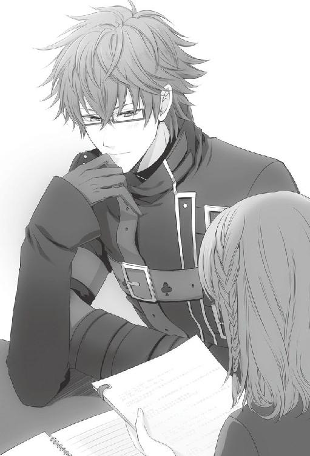
計算する前に答えた。
「違う。......君、これは数学の問題だ。個人の感情から来る見解を聞いてるわけじゃない」
「............すみません」
いささか不満そうではあったが、彼女は今度はきちんと計算を始めたようだった。
彼女らしいと言えば彼女らしい。答えを口にした時の拗ねたような彼女の顔を思い出し、笑いそうになるのをかろうじて堪えた。
「できました。五三日後です」
「正解。次！」
ストップウォッチの時間を確認しながら、問題集のページを捲る。
「ヨーグルト草の飼育にはヨーグルトジュース一五〇ｃｃを使います。直径一〇センチの円柱型ビーカーにヨーグルトジュースを入れる場合、およそ何センチの高さまで注げばいいでしょう」
「......約二センチです」
「正解」
結果、彼女は実に八割以上の正解率を弾き出した。
「なかなかの成績だ。君には問題の出し甲斐があるな」
今出したのは初歩的な問題ばかりなので難易度は低い。それでも、時間制限を設けられると人は計算ミスをするものだ。
「ありがとう、ございました......」
彼女は少々ぐったりした様子で頭を下げた。その様子に笑いそうになるのを隠すのには、いささか骨を折った。
日が沈み、部屋の電気をつける必要が出て来た頃、彼女が読んでいた本をパタリと閉じた。
「ん？ 帰るか？」
「はい」
彼女が支度を終えるのを待ち、私は玄関まで見送ることにした。
「気をつけてな」
玄関の扉を開けると、空には星が出始めている。
彼女の姿が小さくなっていくのを見守りながら、どの程度遅くなったら、マンションまで送るべきかに頭を悩ませる。今のように、日は沈んだが民家の明かりが灯り始める時間では早過ぎて、逆に何か下心があるのではと思われる可能性もないわけではない。
だが夜道のひとり歩きはこと女性には危険が多い。一般的なカップルの男性が何時くらいから送り迎えをするのか統計を取ってから、行動に移そうと考え、私は扉を閉めた。
統計などと呑気なことを言っている間に、彼女が死神に遭遇しているとは一パーセントも想像せずに。
８月10日
「......死神ね」
研究室に顔を出すなり、彼女は昨夜あったことを私に話し始めた。彼女の話は度々飛んだり戻ったりし、要領を得なかったがつまりはこういうことだろう。
夜道を歩いていると見知らぬ男性に話しかけられ、生死に関する話題を持ちかけられた。彼女は男性のことをよく覚えていなかったが彼の方は彼女の名前どころか私の名前まで知っており、あまつさえ私の自宅の場所も知っているようだった。
彼女ではなく、私の知り合いの誰かかとも考えたが、長い髪にどこか儚げな印象のある美青年など私の知り合いにいた覚えはない。ましてや、女性一人で夜道を歩くことの危険さを説くだけでなく、『ケントと付き合っているんじゃ、なかなか死なないな』と告げるような人物に心当たりがあるはずもない。
しかし午前中のうちに研究室に顔を出すほどには、彼女は気味悪がっていた。
「私に言わせてもらえば、そいつは詐欺師の類か妄想癖があるか、自分自身が快楽殺人者かのどれかだな」
そのどれだったとしても、危険人物であることに変わりはないが。
彼女はどれを想像しているのか、ここ最近では珍しく、はっきりと不快げな表情を浮かべた。
「君と私の名前を知っていたということだったな。君自身はそいつを全く知らないのか？」
もう一度確認のために聞いても、彼女は曖昧な返事しか返さなかった。知り合いかそうでないか、自信がない理由が気になったが、客商売をしていればそういうことも可能性としてなくもない。
「......顔色が悪いな。もしかして、誰かに狙われるような心当たりがあるのか？」
「いえ、全く思い当たりません」
とんでもないとばかりに、彼女は首を勢いよく左右に振った。勢いのあまり帽子を落としそうになって、慌ててそれを手で押さえている。
「なら、なぜそんなに青い顔をする必要がある？」
私に話したことで思い出してしまったのか、彼女は青ざめた顔に怯えた表情を浮かべた。わずかに、肩が震えているようにも見える。
「......その男が、それほど怖かったのか」
こんな顔をさせたくない。彼女が怯えることがないよう、これからは私が彼女を守ろう。だから大丈夫だ。そう告げようとした時には、私は無意識のうちに彼女に一歩詰め寄っていた。
「......！」
宙に浮いたままの自分の手を、半ば呆然と見つめる。どうして、私の手はこんな中途半端な位置にある？
私の手のすぐ傍には、自分で自分の手を握る彼女の手があった。
「私は何をしようとしているのだ？ ......すまない」
彼女は何の話かわからないといった様子で、首を傾げる。
「いや、そんなに大それたことを考えたわけではないのだが......。ただ、なぜか君の手を取って励ましてやりたいという衝動にかられて近付いてしまった」
一度は手を繋いだ仲とは言え、彼女の許可なく手を取るなど、それこそ不審者扱いされても文句は言えないだろう。
「すまなかった。そんなことをされても君は嬉しくはないだろうに......。君に必要以上に近付かないよう十分注意する。だからあまり私を警戒しないでほしい」
心の奥底ではまだ、彼女に触れたいという欲求が燻っていた。もちろんそれは、彼女を慰めたいという気持ちとセットではあったが、私が行動に移すにはまだ早い部類のものだ。
私は詰めてしまった分だけ距離を戻し、
「とにかく、その男がどんなつもりで警告をしたにせよ、不穏な発言であることに変わりはない」
そう取り繕うように言った。
「今後、日が落ちてから帰宅する際は私が同行しよう。その男にもう一度会った時対処するためにもな」
「ありがとうございます」と、彼女は少し笑った。
その笑顔に目を奪われたのと、第三者の気配を感じたのはほぼ同時だった。
「！ 待て、隠れろ！」
咄嗟に彼女を背に庇いながら、ドアの脇へと退避した。体を壁に沿わせ、廊下の音を確認する。息を殺していると、わずかにではあるが人の気配が伝わって来た。
「......そのドアの外にいるな」
さすがにこの時点でボロを出すようなことはなかった。が、ドアノブが注意していなければ見過ごしてしまうほど微かに揺れる。それは、このドアの向こう側で、ドアノブに手をかけている人物がいることを示していた。
「私は武器を持っている。怪我をしたくなければ、そのまま帰ることをお薦めする」
背中側に回した手で、彼女にドアから離れているように指示を出してから、私はテーブルの上にあらかじめ用意しておいたものを引き寄せた。
「......気付かれたか。惜しかったな、あと一歩だったのに」
ドアの向こう側から聞こえて来た声に、口角が上がる。予想どおりの人物だ。
「これでもこの部屋にいる時は常にドアの外に気を配っているんだ。いつ刺客が来るかわからないからね」
「そう。この間は後ろを取れたのにな。でもねケン、不意打ちに失敗したからと言って帰る僕じゃないよ」
一拍置いた後、ドアが勢いよく開かれる。
「その武器とやら、見せてもらおうか！」
「望むところだ！ 食らえ！ 新作の数学パズルだ！」
意気込みたっぷりに飛び込んで来たイッキュウに、手にしていたプリントを突きつける。イッキュウはすぐにそれを両手で掴むと、問題文に目を走らせた。
「これは......！ また複雑なものを......！」
イッキュウはプリントを手にしたまま、その場でぶつぶつと計算式を呟き出す。もちろん、私が今回用意した数学パズルは即座に解を得られるほど簡単なものではない。内心で含み笑いながら、まだドアから離れた位置に避難したままの彼女に目を向けた。
「すまないな、邪魔が入った。コイツは私の数学パズルを受けて立つためにやってきたようだ」
「あー、そのうち君もやられるよ。覚悟しておいた方がいいね」
プリントからちらりと視線を上げ、イッキュウが彼女に微笑みかける。その一瞬の笑みにさえも胸がざわめく。我ながら考え過ぎだとは思うが、彼女の反応が気になった。
「彼女にはもう贈った」
「もう!? 付き合って半月の子に!?」
イッキュウは完全にプリントから顔を上げ、絶望したような顔で私を見る。そんな顔をされる覚えなど無論ない。
「ケン......それはどうかな、僕としてはあまりお薦めできないお付き合いの仕方だよ」
「何？ だが君に作ったものとはレベルが違うぞ。君に渡したのは院生向けだが、あれは小学生向けだ」
「............」
今度はイッキュウだけではなく、彼女までもがどこか責めるような視線を私に向けた。
微妙な空気の中、イッキュウはこれみよがしに溜息をついたかと思うと彼女の方に一歩近付いた。思わず、その後を追いかけそうになる。
「変な奴で迷惑をかけるね。悪い奴じゃないから気長に付き合ってあげて」
「......！」
私の見間違いでなければ、今、イッキュウは彼女の頭に手を置いて......触れなかっただろうか。
「イッキュウ......いったい君は何をしてるんだ？」
「何って......彼女が気の毒だからよしよしって頭を撫でてあげただけだけど？」
やはり、見間違いなどではなかった。
「交際中でもない女性の体に触れるものではない。君はモラルが低すぎるぞ」
私は手を拳の形にして体の脇に置き、イッキュウの横に並んだ。返答次第ではすぐにでもイッキュウを止めに入れる位置だ。
「は？ モラル？ そりゃ確かに僕はモラル低いけど、ただ頭撫でただけで大げさだね」
イッキュウは心底呆れたような声で言ってから、
「......あ、わかった。ケン、君ってまだこの子の頭撫でたことないんだ？」
にやりと口角を上げた。嫌な予感がする。
「............」
私が何も言い返せずにいるのを見ると、イッキュウは私に視線をやってから彼女に満面の笑みを向けた。
「よしよし、堅物の彼氏で大変だね。僕でよければいつでも慰めてあげるからね。ぎゅってしてあげようか」
イッキュウの手が伸び、彼女の髪を優しく梳いていく。それだけではなく、イッキュウは自分の両手を彼女に向かって広げて見せた。
「イッキュウ。いいかげんにしろ......！」
自分でも驚くほど感情が昂ぶっていた。腹の底からマグマのように熱いどろどろしたものが噴き出そうになる。かろうじてそれを行動に起こすまでには至らず、声だけに抑えた。この感情は何だ？ まさか嫉妬だとでも言うのだろうか。
「あー大変だ。君の彼氏はこの程度のスキンシップも許容できない器の小さい男らしいね」
イッキュウは横目で私を見、大人しく広げていた両手を下げた。
「あ、そうそう。まだ君とはメアド交換してなかったよね。送ってもらっていい？」
私がまだ自分の感情を処理しきれていない間に、イッキュウは素早く携帯を出し、彼女にも出させ、メールアドレスの交換をしていた。どうしてイッキュウが彼女のメールアドレスを必要とするのだ。
「......はい、ありがと。さて、僕は退散しようかな。じゃあ二人とも、あとはご自由に」
それを指摘するよりも早く、イッキュウは風のごとく素早くドアから外へ出て行った。
室内に残された私と彼女は、しばらく二人してドアの方を見つめていた。あまりにあっさり出ていったので、すぐにまた戻ってきそうな雰囲気があったからかもしれない。
視線を彼女に戻すと、髪がわずかに乱れている。イッキュウが触れたせいだ。私は言いようのない感情に襲われ、気が付くと彼女の頭に手を伸ばしていた。
私の手が触れると、彼女は驚いたように目を少し見開き、私を見上げた。
「別に私は......君が他の男に頭を撫でられたからと言って嫉妬をするほど狭量ではない。その程度、親子間でも友人間でも普通に行われるスキンシップの範囲内だ。何も特別なことではない」
少しでもイッキュウが触れた箇所を残しておきたくなくて、彼女の髪を掻き乱す。人の頭を撫でたことなど未だかつてないから勝手がわからなかったが、彼女はイッキュウの時と同じくされるがままになっていた。
「よって私も遠慮しない。頭を撫でることに下心があるわけもないし、何を遠慮することがある？」
私の口は私のまとまらない頭の中とは裏腹によく動いた。
確かに今、下心を持って彼女に触れているわけではなかった。が、まるでないとも言い切れない気がした。何故なら、私は彼女に触れながら、彼女の髪の柔らかさや、指の隙間からサラサラと零れ落ちていく手触りを心地よい、いつまでもこうしていたいなどと考えていたからだ。たぶんこれは、口にすれば下心と区分けされる部類の感情だろう。
「君だってイッキュウにおとなしく撫でさせていたんだ、別に嫌ではあるまい？」
まるで免罪符のように告げると、
「嫌じゃないですけど、痛いです」
彼女が少し困ったように言った。
「............」
痛い。痛いというのは、私の力が強すぎて彼女に苦痛を与えている、ということだろう。
指摘されてみて初めて、私は彼女の髪がイッキュウに触れられた時の比ではないほど乱れていることに気が付いた。これでは寝起きより酷い。
「......すまない」
そっと彼女の頭から手を離し、申し訳程度に髪を整え直した。
彼女はその私の行為すらも受け入れ、大人しくやや俯き加減なままだった。
「......だが君は。君はどうして黙ってイッキュウに頭を撫でさせているんだ」
自分も同じではあるが、今は言及しないでおくとする。第一、私とイッキュウでは......立場が違うはずだ。心の中でいくら言っても彼女には聞こえないというのに、何故か言い訳をしてしまう。
「あれは手の早い男だ。頭を撫でているのがいつ肩になり腰になるかわからないんだぞ？」
極真剣に言うと、彼女は遠慮がちにではあるが「彼は友達じゃないのか」と言いたげな視線を私に向けた。
「ああもちろん彼は私の友人だ。私の交際相手を敢えて奪いはすまい。あれも単なる嫌がらせだろう」
少し落ち着いてくると、私も冷静に物事が判断できるようになってきた。
イッキュウのことを信用していないわけじゃない。明らかに私をからかうための行為だったと今ならば納得できた。それなのに、私は不安を覚えずにはいられない。
「わかっているとも。だが彼にそのつもりがなくても、君の心が動かない保証はないんだ」
人の気持ちは変化する。どんなに論理的にそれを解こうとしても、感情というものがそこにあり、保証などできないことくらい私にもわかっていた。たとえ、感情論を否定していたとしても。
わかっているのに、彼女に対して揺るがないものを欲してしまうのは、矛盾以外の何物でもない。
「私が手を握ることすらためらっている内に、君の心が彼に動いてしまうかもしれないと思うのは、狭量か？ 女性の扱いに慣れていて、たやすく居心地のいい空間を作れるあいつに、君を取られるのが怖いと思うのは......それは、私の器が小さいからか？」
彼女は何も言わず、私を静かに見上げている。
今こうして、彼女の瞳に映っているのが自分だけだと思うと、気持ち不安が薄れていく気がした。
「......私には、君の髪に触れるだけでも精一杯なんだ」
手が勝手に、彼女の髪にまた触れそうになる。私は理性でそれを押しとどめて、溜息に近い吐息を吐き出した。
「......みっともないところを見せてすまなかった。悪いが、今日はもう帰ってくれ。......家まで送ろう」
研究室のドアを開けて促すと、彼女は素直に私の指示に従った。何か、彼女に言ってほしいわけではなかったのに、やはりどこか期待していたのかまた溜息をつきそうになる。
彼女のマンションに辿り着くまで、私たちは何も言葉を交わさずに歩いた。
８月11日
昨日は失敗した。イッキュウにからかわれて冷静でなかったとはいえ、許可なく彼女に触れてしまった。今も、手のひらに彼女の髪の感触が微かに残っている。
いや、私は何を考えているのだろう。手などじっと見つめて......これでは変態ではないか。
頭を振り、伏せていた頭を思い切り反らして背もたれの上に置いた。
今日は自室で研究を進めていたが、ことある事に昨日のことを思い出してしまい、進みが悪い。それもこれも、昨日の失態を失態のまま放置しているからだ。早々に挽回せねばならないと思うが、私は上手い方法を見つけられずにいた。
ふとカレンダーに目をやると、今日が彼女と付き合い始めてからちょうど一五日、つまり半月であることに気が付いた。ちょうど半月。その『ちょうど』という言葉が閃きを生む。
女性は記念日を大切にするというニュースを、最近目にした記憶がある。あれは確か......ネットのニュースだったか。
記憶を頼りに検索をすると、確かにそのニュースは存在した。そこで取り上げられているのは芸能人の結婚記念日の過ごし方だった。
なるほど、結婚記念日という日を世の中のカップルはこうして祝うものらしい。そういえば、あの母上ですら結婚記念日は記憶していたような覚えがある。母上に適用できるのならば、ほぼ一般的な女性には通用する手段だと考えて問題あるまい。
──交際開始から半月。これは立派な記念日と言えるのではないか？
更に検索を続けると、『──てっきり忘れていると思ったのに、突然プレゼントされて驚いちゃって。でもそのサプライズがすごく嬉しかったんです』という女優のコメントが見つかった。なるほど、ただプレゼントをもらうよりも、そこにサプライズという要素が加わった方が喜びを増加させるらしい。
方法は決まった。次は何を贈るかだ。
つい先日、手作り問題集は渡してしまっていた。同じタイプのものを贈るというのは、サプライズにはならないだろう。
今回は記念日を祝うことだけではなく、昨日の詫びも兼ねている。これを考慮すると後々残るものよりも消え物がいいだろう。そのプレゼントを見る度に、昨日の失態を思い出されたのでは目も当てられない。
消え物、とすると即座に浮かぶのが食べ物だ。次には旅行といった思い出を残すタイプのイベントだが、二人きりで旅行に出かけるなど私たちにはまだ早過ぎる。一瞬、その先を想像しそうになって慌てて思考をシャットダウンした。
ひとまず、贈り物は食べ物で決定することにしよう。次はどのような食べ物にするか、だ。
彼女の好みを思い出そうとして、カフェオレが好きなことくらいしか知らないことに呆然とした。
「何てことだ......」
付き合って半月も経つというのに、好物といえばカフェオレくらいしか思い浮かばないだなんて。
飲み物も食べ物のうちなのだから、カフェオレを贈るという手も......と、想像しかけてやめた。何故なら、安価過ぎるからだ。
例えば、カフェで購入したカフェオレを彼女に渡したとしよう。だが、それを彼女は贈り物と捉えるだろうか。いや、せいぜい差し入れ程度にしか感じないのではないかと思う。
カフェオレは諦め、他に彼女が好むものはないかと頭を巡らせる。何か、どこかにヒントはないかと必死に記憶を辿ると、数学を教えていた頃の彼女の様子を思い出した。そうだ、彼女はいつも昼食に菓子パンを持っていなかったか？ 毎回毎回ではなかったが、かなりの頻度で甘い菓子パンを食べているのを目撃していた記憶が蘇る。
「菓子パンか......」
思考が進むにつれ落ちつかなくなり、私は部屋をうろうろするのをやめて外へと出た。考え事をするには散歩をしながらの方が効率がいい。
仮に、彼女が菓子パンを好むと断定して話を進めるとする。では、ここで私が菓子パンを贈って果たして彼女が喜ぶのだろうか。菓子パンもカフェオレと同様、安価なものだ。では、普段自分では購入できないほど、大量にプレゼントしたとしたらどうだろうか。
なるほど、空腹は満たされる。しかし、私がそれを渡した際に彼女が空腹だとは言い切れないのではないか？ さらに言えば、そんなに大量の菓子パンをもらっても、彼女が困ることは目に見えていた。
上手くまとまりそうなのにまとまらない。
堂々巡りになりそうな考えを止め、一度初心に戻ることにした。
今日は半月記念日だ。そう、記念日というところに着目しよう。記念日と言われてまず思い浮かぶのは誕生日だ。一般的に考えて、誕生日に菓子パンを贈ることはないだろう。よって、菓子パンは却下する。
では、誕生日だとして受け入れられるレベルの食べ物は何だと考えたところで、足が自然ととある店の前で止まった。
「............」
ケーキ屋だ。脳裏に、幼い頃両親に祝ってもらった記憶がフラッシュバックする。
ケーキとは、いかにも記念日らしい。しかも消え物であり、菓子パンを好む彼女の傾向からして、甘い物が嫌いということもないだろう。更に言えば、誕生日でもないのにホールケーキを食す週間がある日本人がどの程度いるだろうか？ 正確な数値はこの場ではわからないが、さほど高い数字ではないだろう。
つまり、サプライズとしても充分に機能する、ということだ。
辿り着いた回答に満足しながら、私はケーキ屋のドアを押した。
現在の気温を考えるとやや涼しすぎるほど冷房を効かせた店内には、私ともうひとりの客しかいなかった。
老婆は注文しておいたものを受け取りに来ていただけらしく、私に人当たりの良い笑みを向けるとショーケース前の場所を譲ってくれた。それに会釈を返し、吟味する。
「............」
さほど小さくないガラスケースの中には、ありとあらゆる種類のケーキが並んでいる。私が見たことのある物はそのうち数種でしかなかった。
だがしかし、問題はない。今日購入するべきケーキはホールケーキであって、このようなカットケーキではないのだ。迷う必要はないだろう、と視線を横に動かして絶句した。
まさか、ホールケーキにこんなに種類があるとは。
ホールケーキと言えば生クリーム仕立ての苺がのったスタンダードなものしか私は知らない。それがどうだ。目の前にはチョコレートでコーティングしたもの、モンブランの巨大化したもの、レアチーズにタルトと様々な種類のものが並んでいた。中には中央に空洞の空いたものまである。何だあの穴は。何を入れるというのだ。
私が数多くのケーキに翻弄されている間に、老婆は女性店員と着々とやりとりを進めていた。
「こちらでよろしいですか？」
「ええ、ええ、結構です」
「プレートにお間違えはありませんか？」
「......ちょっと待ってくださいね」
──プレート？
さりげなく横を見ると、老婆はハンドバッグの中から老眼鏡とおぼしき眼鏡を取り出すところだった。店員はケーキが滑り落ちてしまわない絶妙な角度で、箱を傾けていた。
「えっと......たかしくん、おめでとう。はい、こちらで大丈夫です」
「では、お包みしますので少々お待ちください」
チョコレートタイプの大きなケーキの中央には、板のようなものが置かれそこに老婆が読み上げたメッセージが書かれていた。
「お決まりでしょうか？」
不意に、奥から顔を出したコック帽を被った男性から声をかけられた。どうやらいつまで経っても声をかけようとしない私を、女性店員が接客中のために声をかけられないのだと判断して出て来たらしい。事実とは異なるが、まぁ良い。支払いをしている老婆にちらりと視線をやってから、店員に視線を戻す。
「決まってはいない」
「あ......では、お決まりになりましたら......」
「その前に聞いておきたいのだが、メッセージプレートというのは今からでもつけることが可能だろうか」
「ええ、少々お時間をいただきますが大丈夫ですよ」
彼は、自分が入れますからと笑顔満面で答えてくれた。フム、頼もしい。
「そうか」
「......では、お決まりになりましたらお声がけください」
そう言って、男性の方は奥へとまた姿を消した。
いつの間にか、老婆は店を出ており、店内にいる客は私だけになっていた。改めて客観的に自分を捉えると、随分と浮いているように思える。
あまり長居したい雰囲気でもないので、早急にケーキの種類を決めてしまおうと、屈んでショーケースを覗き込んだ。ここはやはり、スタンダードなものがいいだろうと目処をつける。
「すまないが......」
「は、はいっ！」
私が急に体を起こしたせいか、女性店員は妙に上擦った声を出した。彼女が落ち着くのを待ってから、また口を開く。
「この、苺のホールケーキをいただきたい」
「三人から四人用のサイズでよろしいですか？」
「......これはそんなに人数が必要なのか？」
「一般的なサイズにはなりますが......あの、何人様でお召し上がりの予定ですか？」
「ふた......いや、ひとりだ」
「え」
「いや、場合によっては複数人になり得る可能性がある」
「え」
彼女に贈るつもりのものではあるが、必ずしも彼女がひとりで食べきるとは言い切れない。その可能性も加味して大きさは考えるべきかと悩んでいると、奥からまたコック帽の店員が顔を覗かせた。
「メッセージプレート乗せますよね？」
「ああ、頼む」
「何て書きます？」
「......Half Month Anniversary......と入れてくれ」
「半月記念日、ですか」
彼は小さく呟くと、女性店員に何かを囁いて「では、入れてきますね」と奥へと引っ込んだ。何のやりとりが行われたのかわからなかったが、女性店員は気を取り直したようににこりと私に笑みを向けた。
「あの、贈り物でしたら、最初にお選びいただいたサイズが良いかと思います。ひとりでも甘党の方なら入るでしょうし、数人で食べるにもちょうど良い量ですから」
「......そうか。ではそれで頼む」
私が頷くと、彼女はあからさまにほっとした様子だった。
包んでもらったケーキを手に、私は彼女の働く冥土の羊へと急いだ。
涼しいとは言え夏だ。徒歩で二〇分ない距離とは言え、保冷剤を断ったのは早計だったかもしれない。
私が店のドアを開けるとすぐに、トーマ君が出迎えてくれた。冥土の羊は相変わらず繁盛しており、店内は七割ほど埋まっている。
トーマ君は慣れた仕草で、私を端の方の席へと案内した。今日の席も、程よく人目を避けられる良い席だ。
その場でコーヒーを注文し、彼女の姿を探す。彼女の姿はすぐに見つかった。
従業員用の一風変わった制服に身を包んだ彼女は、贔屓目なしでも充分魅力的だった。つい目で追ってしまう。
ここのところぼんやりしていることが多かったので、接客業のバイトの方は大丈夫なのかと勝手に心配していたのだが、どうやら杞憂のようだ。くるくるとよく動き、彼女は接客を楽しんでいるようにすら見えた。
もう少し彼女の働きぶりを眺めていたい気分だったが、彼女の方から見つけられた時に気まずい思いをすることになる。それに、保冷剤なしのケーキの味が損なわれる可能性もあった。
「君、すまないが」
諦めて、私は近くにいた店長に彼女を呼んでもらうよう声をかけた。
彼女はすぐに私の元にやって来た。
呼んだ相手が私だとわかると、他の客たちに見せていた笑みを消して、彼女は首を傾げた。その変化は喜ばしいと思って良いのか悩むところだが、小動物染みた動きは愛らしいと素直に思った。
「......想像したよりも活き活きと働いているんだな。最近の君はぼんやりとしている様子だったから、接客業が務まるのだろうかと思っていた。しばらく見ていたが、元気そうで安心した」
何から話したものかと考えながら、口を開く。
思ったことは言葉を惜しまずに伝えること。そして......他にもイッキュウから受けた講義の内容を、私は思い出していた。
「ここの制服も、まあ......君に良く似合っている。想像したよりもずっと似合っていたのでな。正直驚いた」
彼女は瞬きを繰り返し、繁々と私を見つめた。その視線が居たたまれず、
「......いや。これはイッキュウに言えと言われたんだ。会ったら必ず服装に関する感想を言えと......」
つい言い訳を口にする。
「だから仕方なく思ったことを言っているのであって、私の本意ではない。いや、嘘を言ったわけではないが」
相変わらず、彼女は不思議そうに私を見つめていたが、心なしか照れているようにも見えた。
これ以上会話を続けているとまた余計なことを言ってしまいかねない。咳払いをして、私は話を軌道修正することにした。
「昨日は......すまなかった。イッキュウにからかわれて、すっかり取り乱してしまった。君に無遠慮に触れてしまって......その、すまなかった」
彼女は小さく首を横に振ってくれた。怒ってはいないのだとわかり、安心する。
ここで贈り物を......と箱に手をかけた瞬間、このケーキが必ずしも彼女を喜ばせるものではないかもしれないという可能性に気付いてしまった。
今、彼女がケーキを食べたい気分だと、どうして言い切れるだろうか？ ここ数日で友人などの誕生日があり、大量にケーキを食べた後でないとも限らない。もし、もう甘い物は当分見たくないといった気分だったならば、これは最悪の贈り物になる。
確率としてそう高いわけではないが、私としたことがその可能性を今に至るまで思い付かなかったとは。
しかし、ここに来てケーキを渡さないという選択肢はない。低い確率に捕らわれるのも滑稽であったし、何より今箱に触れているこの手を引っ込める言い訳が思い付かない。
一瞬の間に数パターンの対処法を考えてから、
「これは詫びの品だ」
私はケーキの箱を開けた。
彼女の目が丸くなる。同時に、私も少なからず驚いた。何だ、この愛らしいウサギの飾りは。
苺をふんだんにのせた生クリーム仕立てのホールケーキの上には、砂糖で作られたウサギの飾りが載せられていた。ショーケースに飾られていた時はこのような飾りはなかったはずだ。メッセージプレートか。メッセージプレートを乗せる際にあのコック帽の男性が細工をしたに違いない。
脳裏に彼の笑顔が浮かんだが、今さら文句を言えるはずもなかった。いや、そもそも文句を言うべき変化なのか私には判断しかねる。が、あまりに愛らしいそのケーキに、何だか照れてしまうのは仕方のないことだろう。
「......ああいや、これは、一般論とやらを参考にしてみたんだ」
私は内心の動揺を押し隠し、説明を続けた。
「女性は記念日を非常に大切にすると言うし、突然の贈り物を喜ぶというから......詫びを兼ねて、付き合い始めてから半月の今日、何か贈り物をしてみたらどうかと思ったのだ」
私が説明する間も、彼女の目はケーキから離れない。
「これでサプライズとやらになっていればいいのだが......」
しばらく反応を待っていると、
「びっくりしました......」
ようやくケーキから目を離して彼女が言った。私の都合の良い思い込みでなければ、ケーキを見つめる彼女の目は輝いて見える。
「そうか......それならよかった。これで驚いてもらえるかどうか自信がなかったんだ」
ほっと安堵の息をつく。
「私は朴念仁だから、君の望むような交際の仕方ができていないことも多いと思う。だが、できるだけ希望に沿いたいとは思っている。そのための努力は惜しまない。イッキュウの助言もできるだけ聞き入れるつもりだ」
彼女は確かに嬉しそうに笑い、その指でウサギの飾りに触れようとしてまた笑みを深くしていた。どうやら、コック帽の彼には感謝しなければならないようだ。
「......まあ、要するに私は、君を喜ばせたいんだ」
意識せずとも、自分の口元が笑みを形作るのがわかった。彼女の笑顔につられたのかもしれない。
彼女といると、驚くことがたくさんある。自分がこんなにも些細な出来事で幸せを感じられる部類の人間だとは、今初めて知った。
ケーキを箱に入れ直し、彼女の方へと寄せる。
「......私の用事はそれだけだ。仕事中に呼び留めてすまなかったな。少し量が多いかもしれないが、なんならみんなで食べてくれ」
「ありがとうございます」
彼女はしっかりと頭を下げて、その両手に大切そうにケーキを抱えた。改めて、贈ってよかったと実感する。
「そろそろ日が沈むだろう。帰りは送っていく。待っているから声をかけてくれ」
店の奥へと戻る彼女の後ろ姿を見守りつつ、私はようやくコーヒーに手を伸ばした。それはすっかり冷め切っていたが、いつもよりも上等な味に思えた。
８月12日
彼女のバイトが終わる時刻に合わせ、冥土の羊へと向かっていた。
夏の日は長く、まだうっすらと夕焼けが見えてはいたが、用心に越したことはない。夜にしか、ウキョウという男が現れないとは限らないからだ。
冥土の羊に着くと、すでに店じまいがされクローズの札が掛けられていた。窓から中を覗くと、店長が誰かと話している姿が見えた。彼女の姿はない。すでに事務所に向かった後だろう。
表で待っていれば会えるだろうと踏み、店の前で待つことにした。
しかし、三、四〇分待っても彼女が店から出てくる様子はない。もしや、表に私がいることに気付かずに裏口から出てしまったのだろうか。いつも表口から出ると言っていたので、てっきり今日も表から出るものだとばかり思っていた。だが、今日に限って、気分転換に出口を変えたばっかりに行き違ってしまったとでもいうのか。
他の従業員が出てくる際に尋ねてみようかとも思ったが、待てば済むと思ったのが間違いだった。
携帯を取り出し、彼女の番号を呼び出す。すぐに電話が繋がったことに安堵しながら、「今どこにいる」と聞く。
「例の男のことがある。家まで送ろうと思って店でずっと待っているんだが」
「......茗荷駅のホームにいます」
しばらく間を置いてから、返事が返って来た。どこか戸惑いを含んだ声音と、言われた内容に首を捻る。
「？ なぜそんな場所に......」
彼女の自宅は駅とは方向が異なる。何か彼女が今日、駅に行くようなことを言っていなかったか、脳内検索をかけて息を呑んだ。
「......！ すまない......！ そうだった......今日は花火大会を見に行く約束をしていたな......」
携帯の向こうから返事はなかったが、落胆したような吐息が聞こえた気がした。
「全く興味の持てないイベントだったので、記憶からすっかり消えていた」
一度携帯を耳から離し、時刻を確認する。
「時間は一九時半からだったか。ここから現地までは約一時間......間に合わないな」
確か、一時間程度で花火の打ち上げは終わると彼女は言っていた。そのくらいの時間なら、自分のために空けてくれてもいいのではないかとも、言っていた記憶がある。
故意にではないにしろ、約束を破ってしまったことに後悔の溜息が漏れた。
「......悪かった。要望があれば言ってくれ。後日埋め合わせをしよう」
この時はまだ、私はその程度で済むことだと思っていた。
「一緒に行きたかったです......」
「なっ......」
──一緒に行きたかった？
一緒にという相手は、無論、私のことだろう。彼女が私と一緒に行くことを楽しみにしていたと、そう言ったのだろうか。
こんなにも素直に彼女から何かの欲求を投げかけられたことが未だかつてあっただろうか。いやない。
彼女は本当に変わった。
彼女の方から歩み寄ってくれているのではと、日に日に期待は増すばかりだ。それなのに、私は花火に興味が持てないなどと言って、彼女を哀しませている。
一瞬時刻を気にしかけてやめた。今は行動に移すことこそが大切だ。
「今すぐ行く。そこにいろ」
返事は待たずに通話を切った。
ここから茗荷駅までどのくらいかかるだろうか。計算するよりも早く、私は駆け出していた。
重く垂れ込めた雲の下、彼女の姿が見えて来た。いつもとは異なる服装だというのに、彼女だとすぐに気付くことができたのは彼女以外あまり人がいないためだった。
「......っ......はあ......はあ......」
さすがに駅まで休まずに全力疾走した後ともなると、肺が痛む。肩で荒い呼吸を繰り返しながら、私は彼女の前に立った。
「君は......この涼しい日に浴衣で来たのか......？」
淡い藤色に牡丹の花をあしらった浴衣は、彼女によく似合っている。いつも下ろしている髪をまとめ、大きな花飾りをつけた髪型も彼女の小顔さをより際立たせており好印象だった。
「わざわざ、私のために......？」
この手の込んだスタイルが、全て私のためなのではないかと一瞬、期待してしまう。期待するなという方が無理があると思うのは私の傲慢だろうか。
不思議そうに彼女に見上げられ、
「......ああ、いや。私のためになどと思うのは自惚れもはなはだしいな」
慌てて首を振る。もう少しきちんと今の発言について説明をしておかなければと思った時、電車がホームに入ってくるのが見えた。
「......！ 電車が来るようだ。とにかく、会場に行くぞ......！」
先に彼女を乗せ、後から電車に乗り込む。
電車は郊外へと向かうためか、車内は程よく空いていた。角の席に彼女を座らせ、その正面に立つ。後ろの帯が気になるのか、彼女は少し背中を浮かせて座っていた。
いくら急いでも、電車の速度は変わらない。きっと私たちが辿り着く頃には花火は終わってしまっているだろう。それでも、私はこうして会場に向かおうとしている。少し前なら、こんな無駄足になるようなことはしなかっただろう。だが、今は違う。花火が終わってしまっているだろうとわかっていても、この行為自体は無駄ではないと感じていた。
会場のある駅につくと、さすがに人が多かった。まだ遠くの方で花火を打ち上げる音が響いていたが、音の派手さとすでに帰宅しようと駅に向かい始める人並みから、もう花火も終わるところなのだと予想できた。
「......小雨が降っているな」
駅の外に出ると、小雨が降っていることに気が付いた。
「ま、出店はやっているだろうから気分だけでも味わえるとは思う」
そのまま会場の方へと向かおうとしたが、コンビニの明かりを見つけて足を止めた。
「......いや、少し待て。どこかで傘を買っていこう。そのまま外に出ては風邪を引く」
私ひとりならばこの程度の雨どうということはないが、彼女を雨に濡らすのは避けたい。ただでさえ浴衣というこの気温にはそぐわない服装なのだ。そこに雨でさらに体温を下げてしまっては、風邪を引く可能性が高い。
すぐ近くのコンビニに入り、一本だけ残っていた黒い傘を購入した。不思議なことに、しっかりとしたこの傘は売れ残り、ちょっとした風で壊れてしまうビニール傘は全て売り切れているようだった。
会場の方へと足を進めていくと、徐々に屋台の明かりが見え始めた。
「すごい人出だな......。花火は上がっていないようだが、それで逆に出店が混んだか」
もしかしたら、花火は最後まで打ち上げられずに中止になったのかもしれない。早めに帰宅しようとする人々もいるようだったが、屋台の周りにいる人々は屋台自体を楽しもうとしているようだった。
「こんな人混みを歩くのは久々だ。はぐれないように気をつけてくれ」
なるべく彼女が歩きやすいようにと誘導しているつもりではいたが、それでも彼女は人混みの中、歩きにくそうに見えた。着慣れない浴衣と下駄のせいもあるのだろう。
「......君が嫌でなければ、傘に手を添えてもらえると助かる」
そう言うと、彼女は私の顔と傘の柄を交互に見比べた。
「......人混みではぐれないようにだ。他意はないぞ」
二人でひとつの傘を使うには、それなりに距離を縮める必要があり、いつもより私たちの距離も近かった。
「いや、下心がゼロだとは言わないが。主な理由は安全上のものだ。もし君が嫌ならば別の方法を考える。遠慮なく言ってくれていい」
彼女を納得させるための言葉を探すまでもなく、彼女はにこりと笑って私の持つ傘の柄に手をかけた。ほんの少し、手と手が触れじわりと体温が伝わって来る。
多少その体温に戸惑っていると、
「......もっとぎゅっと握りましょうか」
下から覗き込むようにして、彼女が言った。
「......！ 君は......私が動揺するのを見て楽しんでいるのか？」
彼女が人をやゆするとも思えず、思わず顔を凝視してしまう。しかし、彼女の瞳は澄んでおり、そこにやゆや冗談の色合いを読み取ることはできなかった。
「......それとも、本当に私と......少しは近付きたいと思ってくれているのだろうか」
触れ合った手のあたたかさが、私の鼓動を早くする。
物思いに耽る私を、彼女はまだ不思議そうに見上げたままだったことに気付き、
「確かに、もう少し強く握った方が効果的なのは事実だろう。だが、無理はしなくていい」
私は笑みを向けた。自分にこんな表情が作れるとは今まで知らなかった。
「......祭りなどというものに来たのは子どもの頃以来かもしれないな」
小雨が降り続いているというのに、出店は賑やかな雰囲気のまま夜が続いている。
適当な食べ物を買っては食べ歩いていたせいか、空腹は満たされていた。横を歩く彼女は、いつもよりほんの少し、はしゃいでいるような気がした。
「君はどんな店が好きなんだ？ 私は昔からこういった場所に興味がなくてな、あまり詳しくないんだ」
「お面やさんが好きです」
ちょうど前を通りかかったところで、彼女は熱心にお面を見つめた。その顔の半分ほども目で占められたお姫様と思わしきお面の魅力に夢中なようだ。
「......それを買ってどうするんだ？ 君がかぶるのか？」
駄目ですか、と彼女の顔が急に沈んだので、思わず笑ってしまう。
「いや、いいんじゃないか。きっとよく似合う」
笑いを抑えながら言うと、彼女は少し疑うような視線を私に向けたが、気を取り直してお面を購入していた。早速頭に付けているところを見ると、思った以上に気に入っているらしい。まるで子どものようだ。
「ああ、そうだ。ひとつ買って帰ってイッキュウに貸してやるのもいいな」
私は目の前にある、男児が好みそうなヒーローの面を手に取った。
「彼は目が合うだけで相手を恋に落としてしまうと言うが、面とサングラスを併用すれば事故も起こるまい。面を付けた珍妙な格好で出歩き、サングラスのある状態とない状態を比べれば公正な実験ができるだろう」
彼がこの面を付けて歩いている場面を想像したのか、私と彼女がほぼ同時に笑い声を上げた。
「......それもいいな。ひとつイッキュウに買って帰ろう」
購入したものの、面を持って歩くのは邪魔だと私が言うと、彼女はつけて歩けばいいと提案した。さすがに断ろうと思ったのだが、すでに面をつけている彼女を前にして、どう断れば彼女を傷付けずにいられるのか思い付かず、結局曖昧に誤魔化して手に持ったまま歩いた。
彼女が屋台の方に気を取られながら歩いていると、
「あ、ごめん！」
逆方向から来た男性が彼女の肩に軽くぶつかった。大事はないようだったが、彼女も慌てて謝っている。
「......大丈夫か。もう少ししっかり掴んでいた方がいいかもしれない」
緩く傘の柄を掴んでいた彼女の手を、上から握り締めると彼女ははにかみながら「そうですね......」と言い、わざとらしく顔を逸らした。その態度を、愛おしいと思う。
『......わかりました。それなら、ひとつだけでいいです』
不意に、頭の中に彼女の声が流れた。過去、彼女が私に言った台詞だ。その口調は、今聞いた彼女の声とはまるで異なっている。
『ケントさんがデートっていうものに興味がないのはわかりました。でも、ひとつくらい約束してください。......八月一二日に花火大会があります。一緒に行くって、約束してください』
あの時の彼女はまるで睨むような強い目で私を見上げていた。
花火大会に行くと約束をした時から、二週間も経っていないというのに、彼女の私に対する態度はまるで別人のように変わっていた。
それとも、彼女が態度を軟化させることで、私が受け取る彼女の印象が変わってきているだけなのだろうか。
「この花火に来る約束をしたのは、君と付き合い始めた時だったな。デートなどというものができると思えなかった私に、君はひとつだけでも約束しろとこの花火大会の話をした」
あの時のことを、彼女も忘れてはいないだろう。あの時の彼女から見たら、今の私も別人のように見えるのだろうか。感傷的になるなど私らしくもないが、ふとそう思う。
「興味がなくて忘れてしまっていたが、来てみれば案外楽しめるものだな。......忘れてすまなかった」
彼女は小さく首を横に振った。
「君との付き合いも......無理だろうと思ったが、思いがけず楽しんでいる。不思議なものだ。今でも、なぜこんな風に穏やかに過ごせるようになったのか不思議に思う」
何がきっかけだったのか、今の私にはわからなかった。喧嘩をしたと思った次の日から変わった彼女の態度。そのおかげで私も徐々にではあるが、素直になれているのだと思う。それだけに、何故彼女の態度が変わったのかが、ずっと引っかかっていた。
「君はもしかしたら私に気持ちを傾けてくれているのではないかと......そうも考えてしまうのだが」
わかっている。これは私の希望に過ぎない。
いくつかの可能性のうちのひとつだけに、過度な期待をするのは危険だと頭ではわかっていたが、頭ではないどこか──たとえば心と呼ばれるような曖昧な場所──が、それを望んでいるのも確かだ。
それでも夢を追いかけてしまいそうになった時、脳裏に車がスリップするような嫌な音が響いた。──忘れられない、忘れてはいけないあの時聞いた音だ。
図に乗りそうになった自分に、溜息が零れる。
「......自分でも図々しいと思う」
ふと気付くと、傘に当たる雨音が聞こえなくなっていた。
「ああ、いつの間にか雨が止んでいるな」
傘をどかしてみても、顔に雨が当たるようなことはない。本音を言ってしまえば、まだ雨が降っていてくれた方がよかった。そうすれば、彼女と手を繋いで歩く言い訳になる。
「もう少し店を回ったら帰ろう。君の機嫌が悪くならないうちにな」
冗談のつもりで言うと、彼女は少しだけ頬を膨らませて見せた。打ち解けたその表情に、私の心は酷くあたたかくなる。
雨など降っていないが、もう一度その手を繋ぎたいと言ったら、彼女は繋いでくれるだろうか。
８月14日
私の部屋に入るなり、彼女は開口一番「恋敵宣言は誤解でした」と口にした。
「は？ 誤解だった？」
初め、何を言われたのかわからずに眉を潜めたが、徐々に記憶が追いついてくる。すでに解決している問題だったのですっかり忘れていたが、どうやら彼女はまだ気にしていたようだ。
「......そうか。それが何か？」
私の反応が期待と異なっていたのか、彼女は口ごもった。
「先日も言ったと思うが、私に好意を持っている女性がいたとしても今の私には関係ない。交際中の女性がいる以上、その女性に私ができることは何もないからだ」
「......」
彼女はどうも納得ができないらしい。私は大きく吐息を吐き出して、机に向かいかけていた体を戻し、彼女に向き直った。
「君にとってはそうじゃないのか？ もしも君に好意を持っている男性がいたとしたら、君は気になるのか？」
「......やっぱり少し気になります」
予想外の返事に、声を上げかけどうにかそれを堪えた。
「......そうか。気になるのか」
まさか、気になると言われるとは思わなかった。彼女が私とは異なる人間だという時点で意見が異なることは容易に想像できるはずなのに、私は何をこんなに動揺しているというのか。
「それはどういう意味でだ？ 異性として意識するということか？ 申し訳なく思うということか？」
頭に浮かぶ疑問を次々と口にするうちに、口調がどんどん早くなっていく。それにつられたように、私の心拍数も何故か上昇していくようで息苦しい。
「私とその男を比較検討するのか？ それとも私との交際を続けつつ多少は優しい顔を見せてやるのか？」
彼女に想いを寄せる第三者がもしいたとしたら、私は冷静でいられるだろうか。今でさえ、想定しただけでこんなにも胸が掻き乱されている。
困ったように私を見上げる彼女の視線に気付き、私は一度口を閉じた。
「............」
今、自分が言った言葉を反芻し、
「......ああ、そんなわけはないな」
溜息交じりに呟く。いくら頭に血が昇ったからといって、これでは彼女を侮辱しているようなものだ。
「すまなかった、それは今まで観察してきた君の行動パターンと一致しない。君ならば、自分に責任がなくても相手を傷付けることに罪悪感を覚えるのだろう」
自分のことよりも、相手の感情を優先してしまう。
「それが私の見てきた君だ。誠実で実直なものの考え方だ」
実に損で、実に愛しいと思う。
仮定だけで彼女を責めてしまったことを後悔し、苦笑いが漏れた。
「......このことで口論をしたのは一週間前だったか。遠い過去のことのように思えるな」
実際、あの時と今の私たちとでは、かなり時が経ったと思わせるほどに関係が変わっている。と、思う。
「あの時の私だったら、なぜ今さら蒸し返すんだと食ってかかっていただろう。だが今はそんな気にならない。そんなことをして君を怒らせるのが恐ろしいと思う」
まだムキになってしまうことはあっても、彼女を理解し、理解されたいとすら思うように私はなっていた。
「そう思うのは、こんな風に語り合う時間を知ってしまったからだろうな」
ずっと立ったまま会話をしていたことに今さらながら気付き、彼女を促してソファに並んで腰を下ろした。こんな風に並んで座るということすら、あの頃は考えられなかったのだから不思議だ。
「思えば、以前から私はこんな時間を望んでいたのかもしれない。ただ穏やかに君と話ができる時間を」
彼女は黙って私を見た。その瞳から何かを読み取ろうとしても、あまりに澄んでいて逆に何も読み取ることはできなかった。
「だが、それを手に入れた今、疑問になるのだ。『なぜ君の態度が変わったのか』と」
何も考えずに、この時間を楽しめる性格ならば楽だっただろう。いや、そもそもそのような性格だったならば、初めから彼女と口論する関係ではなかったか。
彼女の態度が変化した時から、私はずっと考えていた。何故、彼女が急に態度を変えたのか、と。
数少ない情報から予測しようとすると、自ずと数少ない可能性しか出てこない。だから、私が今考えている最も可能性の高い理由は、二つだけだった。その二つは実に両極端で、それ故に私を苦しめる。いっそ、はっきり彼女の口から答えを聞いてしまいたいほどに。
「......もしかしたら君は」
出鼻を挫くタイミングで、電子メロディが部屋に響いた。彼女が慌ててポーチの中を探って携帯電話を取り出す。
「......電話か。構わない、気にせず出てくれ」
彼女は少し私に気遣うような視線を投げてから、「もしもし」と大半の人が電話に出る際口にする言葉を言っていた。
宙に浮いてしまった形の私の勇気は、今や霧散しかけている。さらに追い討ちをかけるように、彼女の耳にしている携帯の向こうから『もしもーし？ 今どこ？』と場違いに明るい声が聞こえて来た。
機械を通しているので少し変化はしているが、サワの声だろう。
サワは彼女の大学の友人であり、私が数学の講師もどきをした際の生徒でもある。男勝りな性格は好感が持てたが、如何せん元気が有り余り過ぎており、対応するこちら側も体力を削られた覚えがある。
そういえば、よく講義に遅刻していたが、あの悪癖は治ったのだろうか、と懐かしく思っていると、『もーサワ先輩！ 爆笑とか言わないでくださいよ、こっちはほんと真剣だったんですよ！』少し小さくはあったがミネの声も聞こえた。
ミネは大学こそ私と同じだが、元々私の知り合いではなく、イッキュウの知り合いだ。あの数学の勉強会もミネの発案だったと後にイッキュウから聞かされたことがある。ミネとしては、イッキュウと近付くための戦法だったらしく、イッキュウではなく私が講師をすると知った時は、目に見えてがっかりしていたのを覚えている。
すっかり忘れていたが、サワもミネも冥土の羊でバイトをしており、彼女とは私以上に顔を合わせている。
携帯の向こうからはひっきりなしに笑い声が漏れ、いかにも楽しそうだった。
邪魔をしてもいけないと思い腰を浮かすと、
「今ケントさんといるんだけど......」
遠慮がちに見上げた視線とぶつかり、苦笑する。
「私に気を遣うことはない。友達からの誘いを断らせるほど狭量な男になった覚えはないぞ。だが、気持ちだけはありがたく受け取っておこう」
笑みを向けると、彼女はほっとしたように頷き「うん。いいって。泊まりでも私は大丈夫」と返事を返していた。どうやら、彼女のマンションに二人が遊びに行くらしい。
先ほど漏れ聞こえた内容から、サワとミネはまだバイトの途中だということはわかっていた。それならば、彼女の家に集合するのは夜になるだろう。
「電話の相手はサワとミネだな？ 少し代わってくれないか」
首を傾げたものの、彼女は素直に私に携帯を渡した。
「電話を代わった。サワか？」
『え......やだー！ もしかしてケントさん!? お久しぶりー！』
『えっ、うそケントさんですか!? 私もしゃべりたーい！』
「......やかましいな。電話越しにこちらまで声が届いていたぞ」
今も、携帯を耳に押し当てなくとも声が届くほどだ。
『ちょ、久しぶりに聞いたしその毒舌!!』
サワの話に付き合っていると長くなりそうだ。
「......くだらない話に付き合うつもりはない」
咳払いをひとつし、会話の主導権を取り戻す。
「要件だけ言う。彼女の家に泊まるようだが、それなら私の家まで迎えに来てくれ」
横で会話を聞いていた彼女が、驚いたような顔をした。それに手で任せておいてほしいと伝え、先を続ける。
「最近、彼女の周りに不審な人物がいるらしい。私が送っていくよりも、君たちのように騒がしい集団と一緒の方がより安全だろう」
『うわ何それ。不審人物から守れって、それ女の子に頼むことですか』
「女扱いされたければ、相応の女らしさを身に付けてくれ。用事はそれだけだ。頼んだぞ」
『まぁいいですけどー』
間延びした返事を確認してから、携帯を彼女へと返す。携帯の向こうからは、『え、それだけで終わりですか？』とミネの声が聞こえていた。
彼女は小さく微笑むと携帯をまた耳に当て、数回相槌を打ってから電話を切った。
「サワもミネも相変わらずのようだな」
声の調子だけで、二人の様子がありありと思い浮かぶ。
「......君たちの学校に招かれて講師の真似事をしてから四ヶ月か。あの時はうんざりだと思ったが、こうして声を聞くと意外に懐かしいものだな」
授業を始める前も、始めてからも二人はよくしゃべり、ことある事に私を辟易とさせた。彼女も初めこそ二人と会話をしていたが、回を重ねる事に授業に真剣に取り組むようになったのをよく覚えている。
何がきっかけで人生が変わるか、本当にわからないものだ。あの時、イッキュウの誘いを断っていれば講師をすることもなければ、彼女に出会うこともなかったのだから。
じっと見つめてくる視線に気付き、私は取り繕うように頭を一度振った。
「いや......何でもない。私はおかしなことは考えてないぞ」
弁解してみせても、彼女は私から視線を外さない。
「私は別に......あのときのままごとのような授業がなければ君と会うこともなかったのだな......などと感傷に浸ったわけではない。ただ、ここに至るまでの道筋を改めて検討していたのだ」
上手く誤魔化せたとは思えなかったが、彼女は曖昧に頷いた。
以前の彼女だったら、どういった態度で返しただろうかと考えずにはいられない。
「......出会ってから四ヶ月の間、君との関係は悪化する一方だった。それが、この半月で急激に変わった。あまりにも急な変化だった。君が意図して変化を起こしたのでなければ、まさかとも思うのだが......」
彼女が私との距離を縮めようとして、態度を改めてくれたのでないとすれば、残る可能性のうち極めて高いのは......彼女に、私以外に誰か好意を寄せる相手ができた、ということだ。私とは口論する価値すらないと彼女が判断した結果、彼女の態度が軟化しているように見えているのだとしたら、私はどうすればいいのだろう。
彼女に好きな相手ができ、私と別れたいと言うなら、私はそれを受け入れるしかないのか。
想像するだけで胸が痛んだ。
「......いや、悪い想像ばかりをしてしまうのは私のよくない癖だな」
これはまだ、確定事項ではない。あくまで、可能性のひとつだ。
「私のことは気にせず、今晩は友人たちと楽しんで来てくれ」
私は彼女から目を逸らし、悪い考えに蓋をした。
８月15日
学会まで一〇日。通常ならばすでに論文を書き上げ、スライドの準備に取りかかっていなければならない時期だ。しかし、現状はどうだ。
資料作成と検証はほぼ済ませてはいるものの、原稿にまとめる段階には至っていない。スライド作りなどまだ先の先だ。少しペースを上げなくてはならない。
彼女からは昨夜のうちに、今日もサワたちと遊ぶので私の家には来られないとメールをもらっていた。正確には、昨日の夜からサワたちが彼女の家に泊まり込んでいるため、今朝もその続きで遊んでいるということだ。
彼女に会えないのは残念だったが、私も今は忙しい。それに彼女は彼女で楽しんでいるのならば、それに水を差すこともないだろう。
気持ちを切り替えて研究に専念しようとした時、彼女からメールが届いた。
『明日みんなと一緒にプールへ行きませんか』
目に飛び込んできた文章に危うく携帯を落としそうになる。
──プール、だと？
どういうことだ......プールとはなんだ！ いや、プールのことは知っている。
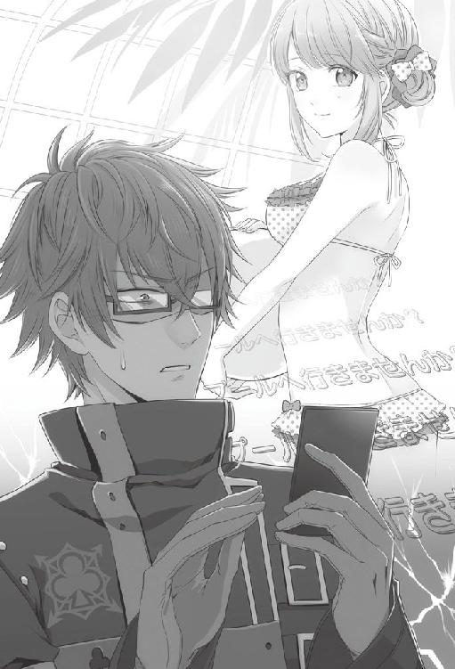
プールとは不特定多数の人々が主に水に浸かることを目的として作られた施設だ。ということは当然ながら入場客は皆水着になる必要がある。入場客全てということは、彼女だけが除外されることはない。つまりもっと言ってしまえば彼女も水着を着なければ入場ができない。入場できないということはプールに入れないということなので、必然的に彼女は水着を着ることを選択しなければならず......。
高速回転する脳が早くもショートしかけていた。
急いで返信をしようとした手を、どうにか理性で押しとどめる。ここは一度冷静に考えるべきだ。
そもそも、プールの何が問題で私は取り乱しているというのか。水着、水着なのか？
いや、ここは敢えて水着には触れずにおこう。あまり考えない方が良い予感がする。
......しかし敢えて考えるならば、彼女と水着が繋がらないのが問題なのだと思う。そうだ。彼女はそもそも人前で水着を着るようなタイプだったか？ 否。断じて否だ。彼女は水着を着るタイプではない！
その彼女が水着着用を強要される場、プールに行くというからこんなにも動揺しているに違いない。
きっと、水着を着るタイプであるサワとミネが彼女をそそのかしたのだ。ならば、彼女は前向きな気持ちでなく水着を着るということか？ それは恥じらいながらも水着を着るということか？
......いや、考えを戻そう。少しずれてきている気がする。そもそも、そもそもだ。何故、友達が泊まったからといってプールの話になったのだ。いや、これは簡単だ。ミネ辺りが行きたいとでも言い出したのだろう。容易に想像がつく。
次の問題はメールにある『みんな』だ。これは誰を指している？ サワとミネだけならばそう書けば済む。書いていないということはそれ以上の人数がいるということだろう。では他に誰が来るというのか。私以外に男性はいるのか？ いるとすればその男性に肌を間近で見られてしまうということを彼女はわかっているのか。
きっと彼女はわかっていないに違いない。従って彼女の代わりに、私がきちんと『みんな』を確認しておく必要があるわけだ。
しかし何故プールなのだ。よりにもよって水着を着なければ入れないという厳しい制限付きの施設に行かなくとも、他にいくらでも遊べる施設はあるはずだ。
夏か。夏のせいなのか。だが、この夏らしくない気候の中、わざわざプールに行く必要がどこにある。全く理解ができない。
彼女が私にこうして声をかけてくれてまだ良かった。不特定多数の異性の目がある中、彼女ひとりでプールになど行かせるわけにはいかない。
「はっ......こうしている間にも、定員に達し私が参加できなくなっては問題だ......」
まだ頭の中は整理できていなかったが、急いでメール画面を開いた。
『プールだと？
どうしてそんな話になった。
私は構わないが......
君は......水着を着るのか？』
もし悩んでいるのならば相談に乗る、とまで打とうとしてやめた。彼女が友人を前にして、本当はプールに行きたくないなどと言えるはずもない。しかも、私が水着の相談に乗れるかも怪しい。
しばらく返信がないか待ってみたが、携帯が振動することはなかった。ということは、明日はプールに行くということで決定したということだ。
プール、水着。これは大問題だ。最善の策を用意しておかねば、彼女の貞操の危機にも発展しかねない。
プールにおける交際と女性の守り方を学ぶべく、私はパソコンへと向かった。
８月16日
「はーい全員集合しましたねー！ それじゃあ、プールに移動しまーす！」
集合場所である駅につくと、サワがはりきった声を上げた。
その場にいたのは私と彼女、サワとミネ、そして何故か冥土の羊の店長と見知らぬ青年だった。サワの言う『全員』がこのメンバーを指していることはわかったが、どういった面子なのか説明もなく、私は多少困惑していた。
さっさと歩き出そうとするサワを、私とは初対面の青年が止めた。
見たところ、学生のようだが随分と若く見える。少し癖のある黒髪に鋭い目、整った顔立ちをしてはいるがまとう空気がどこか人を拒絶しているような雰囲気があった。
「......あのさ。オレ、冥土の羊で働いているヤツの親睦会だから強制参加って聞いて来たんだけど」
「うん、連絡したとおり冥土の羊の親睦会だよ？」
──親睦会？
それは私も初耳だ。一通り彼らの会話が終わってから口を挟むことにしようと、成り行きを見守る。
「だったらどうしてトーマがいないんだよ。一番働いてるだろ」
「だって、トーマがこっちに来たら誰が店番するわけ？」
「普通店長じゃないの？ そこは」
「店長には絶対来てもらわないと困りますから。店長と店員の親睦会ですから」
「は？ そういう趣旨なの？ 聞いてましたか、店長？」
「............」
店長は無言のまま彼を見つめるだけで、何も言わない。目で語ると人は言うが、アイコンタクトにしてもあれでは威嚇しているように見えなくもない。
「......あの、否定か肯定かしてもらえると嬉しいんですけど」
「今のは肯定です」
「何でわかるんだよ」
「えー何でわかんないの？ ほら、やっぱり親睦が必要ですね。トーマさんはもう店長の顔色完璧に読めるから、いいんです」
馬鹿にしたようなミネの言い方に、彼は思いきり溜息をついた。その気持ちは私にもわからないでもない。
「......いいけどさ」
溜息をついてから、彼は私の方に視線をやる。
「じゃあそっちのデカい男は何なの？ 初めて会うよな」
一応、声を潜めてはいたものの、丸聞こえだ。デカいとは言われなれているが、決して褒め言葉ではないだろう。
「この子の彼氏」
サワが質問を受けて、彼女の方に手を向ける。
「はあ？ 何でコイツの彼氏が親睦会に入ってくるんだよ」
「だって、この二人も親睦が必要だから、ついでにって感じ？」
「......意味がわからない」
大体の状況は把握できた。彼と同様、私も溜息をつきそうになりながら、
「私の方も親睦会とは聞いてないんだがな。部外者の私がここに来て本当によかったのか？」
彼女の方に問いかける。彼女は困ったような顔をして首を傾げるばかりではっきりとしない。
それを見かねたのか、
「まぁ何だかわかんないけど、一緒に来るっていうなら初めまして。シンです」
シンと名乗った青年が礼儀正しく私に向かって頭を下げた。
「ケントだ。西池大学院で数学の研究をしている」
「兄から聞いてます」
「ほう。彼の兄というのは誰だ？」
彼に聞くよりは早かろうと彼女に振ったのだが、彼女は驚いたように私を見上げた。まさかそんな質問をされるとは思わなかった、というような顔だ。
「............トーマさんです」
たぶん、とつきそうなほど、彼女は曖昧に答えた。
「......？ なんでそんな自信なさげに言うわけ？」
これにはシン君も訝しげな顔をした。シン君の反応から、彼女は元々トーマ君がシン君の兄であると知っていたはずだと推測できる。さらに言うならば、トーマ君とシン君は彼女とバイト先を共にしており、トーマ君などは大学も同じはずだ。それなのに二人の関係性をうっかり忘れてしまうなどということがあるのだろうか。
彼女の態度に引っかかりを覚えたものの、今はそれどころではない。そう、これから彼女が水着を着るという大問題が待ち構えているのだ。
「まあいいけど。とにかくオレの兄のトーマってのがあなたの数学の授業を受けたって」
「ああ、サワたちに招かれて茗荷大学で行った授業だな。授業と言ってもままごとだが」
「そんなわけなので、ケントさんの話は聞いてます」
そうか、と適当に受け流し、次の大イベントの方に思考を向けようとしていたが、
「こいつには相当嫌われてたのに食い下がって付き合うところまで行ったって話も」
「......！」
続けられた言葉は見事に私の脳天を貫いてくれた。
「お邪魔はしませんので、どうぞ親睦を深めてください。それじゃ」
シン君はそれ以上は用がないとばかりに、私たちに背を向けてサワたちに合流していた。その背中を、半ば呆然と見送ってしまう。
「......そうか。トーマ君ほど離れて見ていた人間にも、私が君に嫌われているように見えたか」
今が穏やかな分、過去の私と彼女の関係を第三者から指摘されるとこうも胸が痛むものか。
「......まあ、そうだろうな」
少しだけ、気分が沈み込む思いがした。
一度男女に分かれ、着替えを済ませてから中で落ち合うことになり、私は即座に行動へと移った。
更衣室に入り、手早く着替えを済ませ、ついでにその場で準備体操までを終わらせる。
「っ！ ......着替え、早いですね」
すでに入り口に向かおうとしていた私に、シン君が驚きの声を上げた。振り返ると、彼はまだ上着に手をかけたところで全く着替えが済んでいない。
私とシン君のやり取りを見ていた店長が、無言のままシン君の前に立ちはだかった。
「............」
「なんですか店長？ すみません、ミネとかじゃないので無言だとちょっと......」
「......店長が着替えを終えている点から考えると、今のは君も早く着替えたまえ。とそう言っているのではないか？」
「............」
「合っているそうだ」
「............まあ、そんなところだとは思いましたけど」
シン君はそう呟くと急いで着替えに取りかかっていた。
しかし今は、彼の着替えのことよりも彼女の水着が問題なのだ。
私がこうしてシン君の着替えを待つ間に、彼女が先にプールへと出てしまっていたらどうする。誰が、彼女を不特定多数の異性の目から守る壁になるというのか。
じれったい思いをしながらも、ここは招かれた身。団体行動を乱すべきではないと判断しじっと耐えた。
数分後、支度を終えた男性勢がプールの入り口付近にいると、
「わー！ プールだー！ 今年の夏初めてー！」
はしゃいだサワの声が聞こえた。眼鏡を外しているせいではっきりとサワだと確認はできなかったが、横にいたシン君が反応したので間違いないようだった。
「そりゃまあ、プールに行こうっていう気温じゃなかったからな」
「すごい！ 屋内プールなのに空が見えますよ！」
「気持ちいいねー！」
サワに続き、ミネも駆け足でやって来る。プールサイドでは走るなと子どもの頃に習わなかったのかと注意しようとして、視界に飛び込んできた肢体に絶句した。これほど近くに来れば、眼鏡がなくとてもはっきりと見える。
「なっ......!? 何を考えているんだ君は」
──着やせ、だと......!?
視線がある一点に吸い込まれそうになり、無理やり顔を上向かせた。
「何のつもりでそんな下着のような水着を着てきたんだ。私が来るとわかっていただろう？ 君は交際中の男性に肌を見せる危険性を理解していないのか」
不自然に天井を見上げながら話す私には、彼女の様子が見えない。反応がわからないのでは対処のしようもなく、仕方なく顔の位置を戻したが、どうしても水着姿を見つめてしまいそうになり非常に目のやり場に困った。
「いや、もちろん他の男になら見せていいというわけではないが」
白地にピンク色のドット柄の水着は、彼女によく似合っていた。フリルがふんだんにつけられているのも、彼女の愛らしさを際立たせており非常に可愛いと思う。だが問題はその露出度の高さだ。肩はもちろん、腕、背中、腹部、脚......胸元が丸見えではないか。
この場にイッキュウがいなくて本当に良かったと思う。今後、どのような事態に陥ろうとも、水着姿の彼女をイッキュウにだけは見せまいと固く心に誓った。
なるべく彼女の肌が他の異性に見られないようにと壁になっているつもりではあったが、行き交う人全ての視線を防げるわけもない。通り過ぎる男性皆が、彼女を見ているような錯覚すら覚える。それほどまでに、水着姿の彼女は魅惑的だった。
また、見知らぬ男性が横を通り過ぎ、通り過ぎ様に「あの子可愛くね？」と囁いているのが聞こえた。見るなと威嚇しようにも、彼女の方がまるで無防備で私ばかりが必死なのが滑稽にすら思える。
「......もういい。こっちに来るんだ」
こんなところに立っていては埒が明かない。
私は問答無用で彼女の手を引き、人の多い流れるプールから、ただのプールの方へと歩き出した。
「あれっ!? ケントさん、どこ行くんですか!?」
背中にサワの声が聞こえたが、今はそれどころではない。向かう先は普通のプールだ。
さすがに、流れるプール、波の出るプール、スライダーとは違い、ただのプールは人気がなく人の数もまばらだ。思ったとおりで助かった。
彼女の手を引いたまますぐに水に入ろうとして、ふと気付く。
「君、準備体操はすませたか？」
すませていないと言われても、今この場で準備体操をするのはいかがなものか。水着で、しかも私の目の前でラジオ体操などをされた日には、自分の脳内がどうなってしまうのか想像するだに恐ろしい。
彼女はまだよく状況を読み込めないながらも、「さっき中で」と言った。
────そうか。それは、良かった。
「では、君はその手すりを使って中に入るといい。私も君が着水したのを確認し次第、入ろう」
「......？」
首を捻りながらも、彼女はゆっくりとプールへと入ってくれた。水が透明なだけあって、多少彼女の肌の色を視認することはできるが、温泉の素を入れるわけにもいかない。ある程度の範囲は妥協するとしよう。
プールサイドから直接プールに飛び込むと、大きな水音が立った。
「......サワたちには悪いが、不特定多数の男性がいる場所で君を水から上がらせるわけにはいかない」
彼女がプールから上がってしまわないよう、念のため肩に手を置いて浮かないようにと押さえ込む。直接肌に触れた感触やその肩の薄さに驚いて一瞬詰まったが、ここでめげるわけにはいかない。彼女には、プールがいかに危険な場所であるか理解してもらわねば。
「こうしていれば私にもよく見えない。君には帰る時間までこのまま私といてもらおう」
ずっと？ と彼女の顔がわずかに曇る。せっかくプールに来たのにと言いかねない勢いにたじろぎそうになるが、それでも譲れないものはある。
辺りを確認すると交際相手を連れていない様子の男性客の姿が多数見受けられた。眼鏡がないのではっきりと確認できたわけではないが、あの中の何人かはこの場で彼女に声をかけないとも言い切れない。
サワたちと共にいてもらうという手もあるが、サワたちごと声をかけようとする輩がいないとどうして言い切れるのか。いや、サワはいいとして彼女にだけ隙を見つけて声をかける者がいてもおかしくはない。
「......いや、ひとりでいたいならひとりでいてもらっても構わないのだが。
しかし女性がこのような場所にひとりでいれば邪な考えを抱く輩もいるだろう。やはり私がついているのが一番妥当だと思うのだが......ああ、私の判断力が鈍っているのだろうか」
考えすぎて頭が痛くなってきた。視力の弱った目で彼女の顔だけを見ようと無理に視界を狭めているせいかもしれない。
彼女はしばらく私をじっと見上げていたが、
「ケントさんにいてほしいです」
心なし頬を赤らめて言った。
「......そうか。君がいいならそうしよう」
彼女の柔らかな表情に、頭痛など一気に消えていくようだ。
頭痛の消えた頭で冷静に考えてみると、直接肌に触れている手が気になってくる。強く押さえている気はなかったが、そっと手を離すと彼女の白い肌にうっすらと手の痕が浮かんでいた。
「......強引に引きずり込んですまなかった。驚かせただろうか」
彼女は、「少しだけ」と言って小さく笑った。
「君の肩は小さいんだな。腕も......こんなに細いとは思わなかった」
過去に一度、彼女を支えた時にも思ったことだというのに、どうして私はすぐ忘れてしまうのだろう。
「女性というのは、軽くて弱いものなのだな。丁寧に扱わなければいけないと改めて思った。すまなかった。これからはもっと気をつける」
彼女は私の取った行動を怒るでもなく、静かに見返すだけだった。あまりに穏やかなその反応に、つい以前の彼女を思い出していた。
「以前なら、私が謝ることもなく、君の方は、女性を乱暴に扱うなと怒り出していただろうな」
『どうしてケントさんはそうなんですか』と怒る彼女の姿がありありと浮かぶ。今、目の前の彼女が以前のような態度を取ったとしたら、私はどう返していたのだろう。
「君と付き合い始めた時には、こんな風に君との交際を維持できるとは思っていなかった。すぐに喧嘩別れだろうと半ば諦めていたのだが......現実というのは存外思いがけない展開を見せる」
今が幸せな分、不意に不安になる。それはこの幸せを築いている部分が不安定な要素でできているからだと、わかっていた。わかっていて、私は目を逸らしていた。
「......本当に、なぜ君は変わったのだろう。私に理由を話す気はないのか？」
彼女は静かな瞳で私を見上げ、
「......前の私の方がよかったですか？」
心なし哀しそうに言った。いや、さして表情は変わっていなかったから、私の勝手な印象かもしれない。
「今の方がいい」
ほぼ間を置かずに言ってしまってから、首を横に振った。
「......いや、それも違うな。どちらも君だ。変わったとは思うが、根本的な部分は変わっていない。ただ少し、私に対しての態度が柔らかくなっただけだ。そしてその変化は、歓迎している」
ムキになられるとつい強く返してしまうのは私の悪い癖だ。私も彼女も、どちらも我が強いせいかよくぶつかっていたが、彼女の態度の軟化によって自分でも驚くほど私も素直になれていると思う。
たぶん、私の方から歩み寄れはしなかったから、彼女には感謝しなければならない。それが、好意的に受け取れる理由であったならば、だが。
「......君に交際を持ちかけた時、私は『おそらく君が好きなのだと思う』と曖昧に言ったな」
彼女は曖昧に頷く。
「あの時はまだ、この気持ちが何かの間違いだという可能性も考えていた。何しろ、喧嘩ばかりしていたからな。君に恋愛感情を持つ理由が自分でもさっぱりわからなかった。だが......」
あの頃の私は、彼女が気になることは確かだったが、どうして気になるのかわかっていなかった。顔を合わせれば口論をし、腹立たしいとさえ思う時があった。それでも、家に帰れば彼女のことを思い出す自分がおり、精神機能が故障したのではと疑ったこともある。
それが今はどうだ。
研究が進んでいないというのに彼女に会いたいと思ったり、異性の目から彼女を隠すためとは言えプールに強引に入れたり、とても正気の沙汰とは思えない。
「......認めざるを得ないだろうな。私の気持ちはやはり恋愛感情以外の何物でもない。私は君のことになると理性を乱されてしまう。君を独占したいと思うし、君に会いたいと思う。口論になる可能性があっても君の声が聞きたくなる。子どもじみた挑発もしてしまう」
すぐに反応を返してくれる彼女を見るのが好きだったのも、ある。私の言動に対し、様々な表情を見せてくれる彼女は、見ていて飽きなかった。
「あの日から今でも変わらない。いや、こうして穏やかに話す時間を持って以前より明確に感じるようになった。
──私はどうやら、君のことが好きらしい」
誰よりも傍にいたい。大切にしたいと思うこの気持ちを、人は愛と呼ぶのかもしれない。
彼女は何か言いたげに私を見つめていた。
「......君の返事はまだ聞かないでおこう」
それを遮るように言い、私は目を逸らした。まだ、彼女の口から答えを聞く自信はない。彼女も、無理に何かを話す気はないようだった。
「......しかし」
辺りを見渡すと、男女ともにはしゃぐ姿が目に入る。ある者はスライダーで遊び、ある者はビーチボールで遊び、またあるカップルは非常に密着した体勢で流れるプールの中をたゆたっていた。
目の前の彼女はと言うと、私が頼んだばかりに自分の前にある水をわずかに掻くしか楽しみがない。さすがにこれは不憫に思えた。
「......プールに来ておきながらただ話しているだけというのももったいないな。少し泳ぐか」
やはり退屈していたのか、彼女はパッと顔を上げる。
「潜水は得意か？ 潜っていれば無遠慮な視線にさらされることもあるまい」
「潜水......ですか？」
彼女は不思議な言葉を聞いたかのように、大仰に首を捻った。
「......ああ、そうか。女性はプールなどであまり顔を水につけたくないと、昨日検索で......あ、いや。それならば......そうだな。どちらが遠くまで泳げるか競ってみるか。もちろん、好きなだけハンデをつけて構わない」
顔を出して泳ぐのならば問題ないだろうと提案すると、今度は彼女も頷いてくれた。すぐに何かを考え始めたようだったから、早速どんなハンデをつけるのか考えているのかもしれない。
そんな様子を微笑ましく思いながらも、もちろん、私も負ける気はなかった。
「もし私が勝ったら、頼むから私がタオルを持ってくるまで水から上がらないでくれ。いいな？」
相変わらず彼女は無防備な様子で頷いた。今、彼女を見つめているのが私ひとりであることを、切に願う。
８月17日
昨日のプールでの勝負は、結局私が勝利した。タオルを取ってくる間に数人の男性が彼女に声をかけていたのには焦ったが、念のためサワたちにも声をかけておいたおかげで大事には至らなかった。
帰り道の間中、彼女に男性の危険さについて説いてみたが、彼女と別れてからその男性の中には自分も入るのだと気付き多少後悔した。もちろん、私は彼女に危険を感じさせるような行動はしないと決めているが......最近、自分の理性に自信がないのも確かだった。
今も、彼女の視線が気になって、研究が手に付かなくなっている。ここが自室ではなく大学の研究室だということはこの際、関係ないだろう。
「さっきからなぜ私の方をじっと見ているんだ？ 気が散るのだが」
私が意識し過ぎている、というわけでもないはずだ。何故なら、彼女は回転式の椅子に腰を下ろし、真っ直ぐ私の方に顔を向けていたのだから。
「学会まであと一週間しかないというのに、準備はまだ全然整っていない。君と遊んでいる場合ではないのだが、昨日のように誘われると出掛けていってしまう。まったく、私は何をしているんだ」
手にしていた本を閉じ、私は彼女の前に立つ。
「今も、君の視線を誤解しそうになって頭がそちらにしか向かない」
彼女は相変わらず何を考えているのか掴めない顔で、私を見上げた。この、無垢な瞳がいけないのだろうか。
「......君、この誤解が迷惑なら迷惑といっそはっきり言ってくれないか。そうすれば作業だけに集中できる」
私が目を合わせても、彼女は怯まずに見つめ返して来る。この視線を誤解するなと言う方が酷ではないのか。
「私が何を考えているのかは、おおよそわかるだろう？」
彼女が首を傾げる。
「私はこれをどう受け取ったらいい？ やはり誤解なのか？ それとも君は、単に私の方を......見ていただけ、とでも言うのか？」
彼女に視線を向けられるだけで、私の集中力は八割阻害され、心拍数は二割ほど増すのを、彼女はわかっているのだろうか。もし、わかっていての行動だとすれば、私は彼女への認識を改めなければならない。
彼女はしばしの間黙り込んでいたが、
「誤解されても構いませんが......」
言葉を選ぶように慎重に返事をした。
「......っ」
まさかの返事に、鼓動が跳ねる。好意を持って視線を向けられていたと知って、冷静でいられるはずもない。
「ならば......もし、君が嫌でなければだが......」
一歩彼女との距離を詰めた。心臓はうるさいほどの音で鳴っている。体内での出来事なので自分にしか変化はわからないと理解してはいても、この音が彼女に聞こえてしまうのではなかと思うほどに激しく、脈打つ。
もう一歩、私は彼女との距離を詰めた。手を伸ばせば届く距離に、彼女がいる。
「キスを、しても構わないだろうか......」
「............」
彼女は何も言わない。無言は肯定と受け取ると、何度か彼女に言ったことがある。ということは、今の無言は了承と受け取って問題ないはずだ。
「......本当にいいんだな」
念を押すように言うと、本当に微かではあったが、彼女が頷いた。彼女のそのはにかんだ表情が愛おしく、
「好きだ......！」
あふれ出す想いを言葉に乗せ、私は彼女の体を引き寄せた。
その瞬間、
「......いっ」
彼女と私の額がぶつかった。
「......すまない、緊張した」
唇が触れ合うには角度が足りず、額だけが触れ合う結果となった。彼女は驚いたように目を丸くしてから、小さく笑った。
「ふ......はは......」
私も彼女につられ、声を立てて笑う。
「君にはみっともないところばかりを見せているな。我ながら嫌になる」
とんでもなくみっともないことをしたというのに、何故か心は晴れやかだった。それもこれも、彼女が私を馬鹿にしたりせず、穏やかに微笑んでくれているからだろう。
「......だが、こんな私でも君は受け入れてくれるんだな。こんなことなら、もっと早く気持ちを言葉にしておけばよかった。毎日そう思っている。君もそう思ってくれているのなら嬉しいのだが......。君の場合はそういうことではないのかな......」
彼女が態度を和らげてくれた理由はまだわからないが、だからこそ日を追う毎に、自分の都合の良い方へと解釈していってしまうのは、仕方のないことだと思いたい。
「......ありがとう。だが、私たちにはまだ早かったようだな」
掴んだままだった彼女の両腕を、私はそっと離した。彼女はまだ照れたように頬を赤らめている。
どうしてだろう。キスはできなかった上に、男としては情けない失敗をしたところだ。それなのに、晴れやかな気持ちどころか、やる気さえも漲ってくるのを感じていた。
「......余計なことを考えている場合ではないな。いい加減集中せねば本当に学会に間に合わなくなる」
今ならば、どんな難題も解けそうな気がした。プライベートが充実すると仕事にもやる気が出るという一般論はあながち嘘ではないらしい。
背を向けかけてから一度戻り、
「すまないが、できれば向こうを向いて本でも読んでいてくれ。あまり私の視界に入らないように」
彼女を先ほどの椅子に座らせると、私の机に背を向けるように回転させた。
それからどれくらいの時間が経過したのか、彼女が椅子から腰を浮かせた音で顔を上げると、窓の外は夕日が空を赤く染めていた。
「ああ、暗くなってきたな。家まで送っていこう」
彼女を促して研究室の外に出る。夏休みのせいで学生の数は少なく、どこか閑散としていた。
手は繋がないまでも、並んで歩き、彼女のマンションへと向かう。
元々、人目を気にする方ではないが、今は人が少なくてよかったと思う。彼女と話している時の自分がどんな顔をしているのか想像もつかないからだ。
しまりのない顔をしていなければいいと思うが、端から見て変化がわかるほど違っていたならば、それはそれで興味深いとも思う。今度、イッキュウに聞いてみるのもいい。
他愛のない会話をしているうちに、日はすっかり落ちて外灯がつき始めた。そうして彼女のマンション近くの坂道に差しかかった時、「あ......」と前方で声がした。
誰かいたのかと私が顔を上げたのと、彼女の顔に明らかに怯えの色が浮かんだのは同時だった。あまりに早いその反応に、彼女を背に追いやるようにして立った。
「そっか、彼氏に送ってもらってるんだ。よかった、それなら安心だ」
穏やかに笑うのは、かなり長い髪をした男性だった。一目見ただけで忘れられないような、整った顔立ちをしている。が、どこか哀愁漂う雰囲気をまとっており、慈愛に満ちた表情との組み合わせが不気味だった。
彼は外灯の下に立ち、彼女に親しげな笑みを向けている。
「......警戒されてるね。まあ、うん。そのくらい警戒した方がいいよ、俺のことは」
彼は、何を言っているのだろう。自分を警戒した方がいいなどと言う人間にはついぞ会ったことがない。
「......もしかして君が言っていた死神のような男というのは、彼か？」
なるほど、死神というものが神であるだけに美しいと仮定すれば、目の前の彼の姿はそれに相応しいように思えた。
「死神？ はは、面白いこと言うな。まあ、あながち間違ってないかもね......」
笑い飛ばしておきながら、彼は一瞬酷く哀しそうに目を伏せる。
「一応ウキョウって名前があるんだけど」
「私のことを知っていたそうだが、私は君に会った覚えがないな」
「そうだね。一方的に俺が知ってるだけだ」
ウキョウと名乗った男は、ひょいと肩を竦めて見せた。私に対して威嚇しようだとか、誤魔化そうだとかそういった様子は感じられない。彼の意図がまるでわからなかった。
「......彼女のこともか？」
「彼女は......どうかな？ どう？ 俺のこと、覚えてる？」
何故、彼女に確認する必要があるのか。お互いが知り合いかどうかなど、確認せずともわかるはずだ。しかし、彼女は曖昧に首を傾げ、
「どうでしたっけ......？」
と小声で言った。
「はは、ごまかされたか」
わからない。彼女とこのウキョウという男は、知り合いなのか？ いや、知り合いなのだとすれば、彼女が誤魔化すような返事をする理由が今度は疑問に変わる。
「何にしても、元気そうで安心した。これからもよく注意して生活して。特に俺には気をつけてね」
笑顔で言うなり、彼は私たちに背を向けた。
「待て。おまえは何を知っている」
ウキョウは立ち止まり、頭だけ私たちに向けるようにして言った。外灯の下から出た彼の顔は逆光になってよく見えない。ただ見えないというだけなのに、その黒く沈んだ姿は酷く不気味に思えた。
「今の段階で話せるようなことは、何も。それよりケント。彼女のこと、気をつけててあげてね」
まるで気安い友人に語りかけるような口調に、ぞわと肌が粟立つ。
「見知らぬ人間に呼び捨てにされる覚えはないんだが」
「ああ、ごめん。知り合いだったこともあったもんだから」
「......何だと？」
彼の話の意図が見えない。知り合いだったこともある、だと？ それは過去、彼と私は出会っているのに、私がその事をまるごと忘れているかのような発言だ。だが生憎と、私は記憶力には自信がある。
──私は、彼を知らないはずだ。いや、知らないと断言できる。
「いや、何でもないんだ。俺のことは本当に気にしないで。隙を見せないことだけ考えてて」
「............」
この場合、隙を見せない相手はウキョウで正しいのだろう。彼女に危害を加える可能性を彼が孕んでいると自ら語っていることに、彼は違和感を覚えないのだろうか。もし、それを理解した上で語っているとするならば......。
「今度彼女の周囲で君を見かけたら、迷わず通報させてもらう」
「それがいいよ。やる時は一切の迷いを捨ててね」
「............」
「それじゃあ、また会うことがないように。あの店にももう行かないようにする」
ウキョウは少し体を傾け、私の後ろに隠れている彼女に声を掛けた。
「......どうか、幸せに」
彼が立ち去ろうとした瞬間、風が吹き月明かりが彼の顔を照らした。微かに見えたその表情は、笑んでいるようにも、泣き出しそうにも見えた。
私たちは、彼の姿が完全に見えなくなるまでその場を動かなかった。そして戻って来る様子がないのを確認してから、
「君の言うとおり、得体の知れない、気味の悪い男だな」
すぐ後ろの彼女を見ると、彼女もまた薄気味悪そうに彼の去った方を見つめていた。その様子からは、やはり彼と知り合いだとは思えなかった。
「表面だけ聞けば君を心配しているようだが、自分を危険人物扱いしているのが解せない。素直に解釈すれば......いざとなると抑制の効かない快楽殺人者というところか」
彼女は恐怖と驚きの目で私を見つめた。
「信じたくはないがな」
あまり怯えさせてもいけないので、そう付け加えておいた。
「しかし、『あの店』というのは冥土の羊のことか？ あそこによく現れるのか？」
あの口ぶりでは、一度ならず数回以上、来店したことがあるようだった。しかし、彼女は今度も首を傾げるばかりだ。
「君は先ほど、彼のことを知らない様子で話していたな。もし店の常連であっても、顔を覚えないものなのか？」
「それは......」
彼女が口籠もる。
人の記憶力には差がある。彼女が人の顔を覚えるのが不得意だとすれば、あの男が店の客だとしても、過度の接触がない限りは一方的に知られている可能性もないわけではない。だが、私の知る彼女は記憶力がいい方だったはずだ。計算が苦手な代わりにそちらに脳を使っているのだな、と指摘し口論になったのだから確かだ。
──私は、何かとんでもないことを見過ごしているのではないだろうか。
何故か、腕に鳥肌が立った。
「......昨日、シンという少年にもまるで初めて会ったかのような態度で接していたな」
私の言葉に驚いたように、彼女の肩が強ばるのが見えた。
「......思えば、君の態度が急に変わったあの日も......」
「あの、早く帰りませんか」
私の言葉を遮るように、彼女が言った。
あまりにあからさまなその態度に溜息が漏れる。これでは、私に疑ってほしいと言っているようなものだ。
「......とにかく、さっきの男は物騒だ。日が暮れる前に君を送った方がよさそうだな」
私がそれ以上言及しないと見ると、彼女はこっそり安堵の息をついていた。
「明日はバイトだったか。店へ迎えに行くから、勝手に帰らず声をかけてくれ。いいな」
彼女をマンションへと送り届けた後も、私は自分が見過ごしてしまっている何かについて、考え続けていた。
先ほど、ウキョウという男に出会った時、彼女はウキョウを知らないようだった。だが、ウキョウは彼女を知っていた。シン君の時もそうだ。ここに、私が見過ごした何かがあるのではないだろうか。
これ以上、考えたくない。心がそう訴えていたが、私は考えることをやめなかった。
知り合いであるはずの人物を知らないと思い込む状態とは何だ。......忘れてしまっている、ということではないのか。
この仮説を用いると、彼女の急な私への態度の変化も説明できてしまわないだろうか。
「まさか」
思わず呟いたものの、笑い飛ばしてしまうには辻褄が合い過ぎていた。
８月18日
──結論を出すには情報が少なすぎた。
だから私は、彼女を迎えに上がる時間より一時間ほど早く、彼女のバイト先に訪れていた。彼女が、ウキョウという男と初対面なのか、そうではないのかを確認するために。
席に案内される際、「少々お聞きしたいのだが」と店長に声をかけた。
彼は無言のまま、私の横に佇んでいる。まずは少し遠回しに聞いてみようと、私は口を開いた。
「......彼女には固定の常連客のようなものはついているのだろうか」
「............」
店長は表情を変えずに私をじっと見ている。
「いや、個人情報を漏らせないのはわかっている。ただ、私が知りたいのは......髪が長く、酷く整った顔をした、ウキョウという名の客が彼女と親しかったかどうか。それだけなのだが」
「............」
迷った素振りを見せたが、店長は一度頷いてから席を離れていった。
これで、彼女とウキョウが初対面ではないことがはっきりした。初対面どころか、親しかった可能性もある。
では何故、彼女はあたかも初対面のような反応をしていたのだろうか。
次に声をかけたのはミネだ。
「ケントさん、今日もお迎えですかー？ あっつあつですね～」
「それよりも彼女のことで聞きたいことがある」
「え、何ですか？ 先輩の誕生日、なぁんて間抜けな質問はやめてくださいね」
ミネのよく動く口に小さく溜息が零れた。これは私が聞いたことをそのまますぐに彼女に伝えるに違いない。だが、すでにウキョウという男がこの店に来たことがあり、彼女とも親しくしていたことは店長の返事からわかっている。今さら私がウキョウのことを探っていると彼女に伝わったところで、問題はなかった。
「この店にウキョウという客はよく来るのか？」
「あれ、ケントさんってウキョウさんと知り合いだったんですか？ あ、もしかしてヤキモチですか～？」
「......そういうことではない。それで、どうなんだ」
「そりゃあ、よく来ますよ。先輩の常連客ですもん」
「......そうか」
名前だけですぐに顔が思い浮かぶ程度には、ウキョウが常連だということがわかった。しかもはっきりと『彼女の常連客だ』とミネは言った。
これで確実になった。彼女は、ウキョウと知り合いであった記憶を失くしている。
「常連客......というのは、どう判断するんだ？ 店に来る頻度か？」
「ん～......それもあると思いますけど、やっぱり指名じゃないですか？」
「指名？」
「あのメイドさんに給仕してもらいたいんですけど、という感じでうちのお店は指名できるんですよ。......もしかして、知らないで先輩のこと呼び寄せてたんですか？」
「............」
「あ、でも大丈夫ですよ！ ウキョウさんよく先輩を指名してましたけど、本当にただのお客さんでしたから。出待ちしたりしてるの見たことないし......。あ、すみません。あっちから指名かかっちゃったんで行きますね」
「ああ......」
ミネは離れる時、私を気に掛けている様子だった。少し質問が露骨過ぎたかもしれない。だが、収穫は大きい。
ウキョウは彼女の常連客であり、彼女と親しくしていた。──彼女とは、初対面などではない。
しかしそうだとすると、ウキョウは何故あのような奇怪な態度を取ったのだろうか。常連客というくらいだ。彼は彼女のファンだと考えられる。にもかかわらず彼女を怯えさせるような言動をするとは。
溜息をつきかけた時、タイミングよくコーヒーのおかわりを注がれた。
「何か考え事ですか？」
にこやかに声をかけて来たのはトーマ君だ。彼にも聞いておいた方がいいだろう。
「ああ、少しな......。不躾なことを聞くが......」
「はい？」
「彼女は......ウキョウという客から恨まれるようなことをしたことがあるのだろうか」
「えっ？」
「ああ、いや......例えば、だ。派手に紅茶をかけて火傷をさせたり、何か彼の大切なものを壊してしまったりといったことはなかったか？」
「......俺の知る限りではありませんけど」
「そうか......」
それ以上私が何も聞かないのを確認してから、トーマ君はコーヒーポットを手に下がっていった。
彼女とウキョウの間にトラブルらしきものはなかった。少なくとも、この店の中ではなかったと考えていいだろう。トーマ君はこの店で一番働いているとシン君が言っていた。それに比べて彼女は週に三日の勤務だ。彼の知らぬ間にトラブルが起きている可能性はあまり高くない。仮にあったとするならば、彼の耳に入っていないことの方が可能性は低いだろう。
できれば、ウキョウという男が何故あのような態度を取るのか、その理由を知るための情報を得たかったが、これ以上を望むのは難しいだろう。
しかし、ウキョウという男の記憶が彼女の中から消えているということははっきりした。
今日の彼女のシフトは夕方までだと言っていた。そろそろ勤務を終える時間だろうと踏み、私は会計を済ませ外で待つことにした。彼女にはひとりで帰らないようにと昨日のうちに釘をさしてあるので、今日は花火大会の時のように、擦れ違ってしまうことはないだろう。
私が店の外に立ってから一五分もしないうちに、彼女が横の従業員出口から顔を出した。
「お疲れ様」
彼女は心なしか落ち着かない様子だった。
今日、私がウキョウについて聞き回っていたことを他の従業員から伝え聞いたのかもしれない。そのことが、彼女の精神にどう影響を与えるのかはまだ推測の域を出ない。
「......帰るか」
立ち止まったままでいるわけにもいかず、彼女のマンションの方向へと足を向けた。彼女は黙ってついて来る。
私たちは無言のまま、歩いた。他愛のない雑談をするような空気ではなかった。
無言のまま歩き進めるうちに、彼女のマンション前まで辿り着いていた。どちらともなく立ち止まる。
私の頭の中では、ほぼ一〇〇パーセントに近い確率で正しいと思われる、ある仮説が出来上がっていた。それを、今から確かめる気でいた。
「上がっていっても構わないか」
私の言葉を聞いた彼女の肩は、悪寒を感じたかのように短く震えた。
「話がある」
しっかり視線を合わせて言うと、彼女は覚悟を決めたようにひとつ、頷いた。
彼女の部屋には初めて上がった。
淡いトーンでまとめられた室内は柔らかい雰囲気で、実に彼女らしかった。掃除がよく行き届いており、広くはないが居心地の良さそうな部屋だ。
どうぞ、と促されて床に直接腰を下ろした。絨毯が敷いてあるので固いということはない。
どう話し出そうか迷ったが、
「......君の態度が変わった理由を、ずっと考えていた」
今まで学んできたとおり、私は思ったことをそのまま伝えることにした。
「様々な可能性を検討した。単なる気まぐれや心変わりといった些細な理由から、異星人によるアブダクションまで検討した。そして思い付いたあらゆる可能性を消去し続けていった結果、残る可能性はもはやひとつになった」
彼女は黙って耳を傾けている。
「どれほど信じがたい結論であってもそこに至るまでの推論に間違いが見つからなければ信じるしかない」
この結論は私にとっても望ましいものではなかった。だが、やめるわけにはいかない。
彼女は俯きがちに絨毯に視線を落とし、相槌すら打とうとしなかった。
「結論は出た。君の記憶は、欠落している」
彼女の瞳が揺れた。
「どの程度の欠落なのかはまだ検討の段階だ。だが、少なくとも大学に入った頃からの記憶はなさそうだ。私との間にあったことは全て忘れている可能性が高いと思っている」
何度も口論した恋人論も、感情論も、彼女は覚えていない。あんなのはただの喧嘩だろうと言われてしまえばそれまでだが、私にとってはその喧嘩さえも大切な思い出のひとつだ。彼女と過ごした時間の全てが、今の私を作っているのだから。
「どうだろう。異論はあるか？」
まだ、今ならば間に合う。異論あり、と声高に唱え、以前のように感情論でも何でも反論してくれればいい。我ながら馬鹿げた願いだと思いながらも、そう思わずにはいられなかった。
だが、その願いが叶うことはなかった。
「......隠していてごめんなさい」
彼女はその場で頭を下げた。
「......やはりそうか」
深く、長く吐息を吐き出す。何かかけがえのないものが手の中から零れ落ちていく、そんな感覚があった。
「正直に答えてくれたことには、感謝する」
まだ、事実をどう受け止めていいのか正直わかりかねていた。
「......なぜ黙っていた。どうして誰かに話さなかったんだ」
彼女は俯いたまま、
「病院に閉じ込められるのが嫌で......」
一言ずつ噛み締めるように言った。
「だからといって周り中に隠す必要もないだろう。不便なことも多かっただろうに......」
彼女がひとり暮らしであることも、苦労を増やしていたに違いない。本来ならば無条件に信頼できる親といった肉親が、傍にいなかったのだから。
すぐ近くにいたのは私になるのだろうが、いくら恋人関係にあるとわかったとしても、私に全てを打ち明けることは難しいことだったろうと思う。ましてや、彼女が記憶を失った時は、まだ私たちは口論ばかりする仲だったのだ。それを信用しろと言う方が無理な話だ。
「まあ、気持ちはわからなくもないがな」
自然と、私たちの声はどちらも低くなっていた。
「しかし......そうか......やはり忘れているんだな......」
彼女の頭の中に私という存在がいないことは、少なからず私にショックを与えたようだった。今、こうして傍にいるというのに、何故か彼女の存在を遠く感じる。
視界に、彼女が唇を引き結んだのが見えた。よく見ると、握った拳は微かに震えている。それを見てはっとした。
ショックを受けているのは私だけではない。どうして私はこう、気付くのが遅いのだろう。彼女を大切にしようと何度となく思ったはずなのに、これでは口だけではないか。
背筋を伸ばし、私は彼女に向き直った。
「察するに、記憶を失ったのは七月三一日に私と口論をした後から八月一日に話し合いをするまでの間だな？」
彼女は無言のまま頷く。
「突然の不機嫌な呼び出しにさぞや驚いただろうな」
苦笑して見せると、彼女も少しだけ笑ってくれた。そのことに酷く安堵する。
「すでに想像はしているだろうが、君と私はあの前日につまらないことで口論をしたんだ。あの前日だけじゃない。私たちは会うたびに口論をしていた。実に下らない理由でね」
何となくそのことも察していたのか、彼女は小さく頷いた。
「それを覚えていない君にとっては、私が妙な男に見えたことだろうな。何しろ常に口論になることを想定して話していたからな。なぜいつも怒っているのかと疑問に思っただろう」
困ったような顔をしたところを見ると、図星だったのだろう。まぁ、私も喧嘩腰で話しかけていたので、怒っていると捉えられてしまっても仕方なかったと思う。
「......それでも君は、私を信用に値すると判断してくれたのだな。そういうことだろう？ そうでなければ、誰を信用していいのかわからない君がこうも無防備に過ごしてはいなかっただろうからな」
彼女の口数が減り、表情が乏しくなったのも、元々の自分がどういう態度を取るかわからなかったからなのだろう。それでも、彼女は私の言うことを素直に聞いてくれたし、徐々に笑顔を見せてくれるようにもなった。
それで充分ではないか。
一度目を閉じ、一瞬だけ考える。
──いや、駄目だ。彼女の記憶からは、あの事故のことも消えてしまっている。
「......やはり、そういうことなんだな」
憎んでいるはずの私を、あたかも愛してくれたかのように見えたのは、あの事故の記憶がなかったからなのだ。
私が落ち込んでいる場合ではない。彼女の支えにならなければと思うのに、どうしても考えずにはいられなかった。
──彼女は、思い出す時が来るのか？
彼女にあの事故を思い出してほしくない。一瞬ではあったが、私は願ってしまった。こうまで自分が利己的だとは思わなかった。悪い考えを追いやるように、深く溜息をつく。
全く、私は何てことを考えているのだろう。記憶が欠落しているならば取り戻すべきだし、彼女もそれを望むだろう。そして私は、それを助けるべき立場にいるのだ。
「......君と私は、七月二八日から交際していた。君の態度が急に変わったのはその三日後だ」
七月三一日、メールに関しての喧嘩をした。そして八月一日、彼女はがらりと態度を変えた。
「だから私は、君の様子がおかしいことに気付きながらも、迷っていた。もしかしたら君も私と真っ当に交際をしたいと思っていたのではないかと......」
交際を始めたばかりの出来事だったのだ。少しくらい期待をしてしまっても仕方のないことだと、弁解させてもらいたい。
「私に好意を持ってくれていたのではないかと......そんな楽観的な推論を捨てきれなかった」
他にもいろいろ推論は立てた。どれも等しく可能性があるにもかかわらず、私は自分に都合の良いものだけを見ようとしていた。
「だが、やはり違ったんだな」
できることならば、あの時に戻って自分に教えてやりたい。それは過度な期待をしたことを後悔しているからではない。彼女のために何の行動もできなかったことを、悔いているのだ。
「君はただ忘れていたんだ。君が私を嫌っていた事を。私たちの仲がひどく険悪だった事を。そして、私と交際しているという事実だけを素直に受け取って、彼女という役割を演じていたんだ」
彼女は申し訳なさそうに視線を下にやる。その態度が何よりも肯定を示していた。
「......本当は初めから、何か異常なことが起こっていると気付いていた。だが、信じたくなかった」
記憶の欠落を初めから疑っていたわけではない。だが、彼女の好意から態度を変えてくれたのだと信じていたわけでもなかった。それでも言葉にしなかったのは......。
「今の君が、本当の君なんだと思いたかった......」
まやかしの彼女を好きになったのではない。私は初めから彼女に恋をしていた。
だが、彼女は違う。彼女は私という人間を忘れ、負の感情を忘れ、まっさらな状態から積み上げた感情のみで私を見つめていたに過ぎない。
彼女を失いたくない。その一心だけで、私は彼女を腕の中に掻き抱いていた。
「君はきっといつか思い出すんだろう。本来の自分......私を嫌っていた自分を。その日はいつ来る？ 今日か？ 明日か？」
自分でも情けないほど、声が震えた。
「私が君に事実を教えれば思い出してしまうのではないか？ 私たちの間に何があったのか、君が私のことをどう思っていたのか、思い出してしまうのではないか？ ......それが怖くて、事実から目を背けていた」
今、腕の中に抱いている彼女は、どの彼女なのだろう。まだ、私のことを嫌っていない彼女だろうか。
その存在がいかに脆いものであるか、意識せずにはいられない。
「すまない。もっと早く君の力になってやることもできたのに......」
大人しく私に抱かれたままの彼女が、腕の中で首を振る気配がした。こうして、私を甘やかしてくれる彼女すらまやかしなのではないかと疑ってしまう自分が嫌になる。
「私は君に何も思い出してほしくないと思っていた。いや、こうして話していてもまだ迷っているんだ」
つい先ほど、彼女の支えになると決心したというのに、何て無様なのだろう。
「何も教えたくない。何も思い出してほしくない。......このまま、仲のいい恋人同士を演じ続けていてほしい」
私は、今の彼女との関係を失いたくはなかった。ずっと、穏やかに笑い合っていたかった。たとえそれがまやかしであり......
「そう思うのは、私のエゴだとわかっていても......」
彼女を抱く腕に力がこもる。あたたかな体だ。小さく、すっぽりと腕の中に収まってしまう。
私が、守るべき存在だというのに、こうしていると私の方が縋っているかのようだ。
「思い出せなくても、いいです」
不意に、彼女が呟いた。静かで、慈愛に満ちた声だった。
「......ありがとう。すまない」
私は、何を彼女に甘えているのだろう。私よりもこんなに弱い存在だというのに、彼女は私の心情を思いやり、自分の過去を犠牲にしようとまで言ってくれているというのに。
情けなくて苦い笑いが浮かんだ。
「だが......話さなければならないことは私にもわかっている。君には、自分が何者なのか聞く権利がある」
離れがたい気持ちをどうにか抑え、私はそっと彼女の体を解放した。
ベッドの側面に背を預けるようにして、私たちは横に座り直した。正面に座るよりも、こうして肩が少し触れ合う体勢の方が話しやすい気がした。
何から話そうかと迷った末、私が知っている話を頭からしようと決める。
「君は、ごく普通の中流家庭に育った大学生だった。実家は遠方にあり大学入学にあたって、上京してきた」
小さな子どもが絵本の読み聞かせをされているかのような熱心な顔で、彼女は頷いている。その様子はとても微笑ましいというのに、私の心の中は不安でいっぱいだった。
「私が君に会ったのは、サワとミネが企画した数学勉強会とやらに講師として招かれた時だ。『今さら人には聞けない初級数学の基礎を学び直す』という主旨の学生主催の勉強会だったそうだが、まあ、おそらく二人の目当てはイッキュウだったんだろう。初めは彼に講師を頼んでいたようだからね」
イッキュウには記憶を失くしてからも二度会っているから覚えているだろう、と確認すると、彼女ははっきりと頷いた。
「イッキュウはミネとサークルが同じでね。ミネは近付く理由を探していたらしい。まあ、よくある話だ。だがイッキュウは数学のことなら自分よりも適任がいると私を紹介した」
ここで彼女が不思議そうに私に視線を投げた。「どうして講師を引き受けたのか」とそう瞳が物語っている。
記憶を失くしてからの彼女と私の付き合いはここ半月余りのはずなのに、彼女は随分と私の性格を把握してくれているようだ。それが嬉しくもあり、どこか哀しくもあり複雑過ぎてどう表現していいのかはわからない。
「私は彼の体質に関する実験をエサに買収されて、講師の真似事をすることになった」
彼女の疑問も掬い上げて、私は説明を続けた。
「その時に生徒のひとりとして参加していたのが君だ」
彼女が私の元生徒だということは、これまでにも会話で出たことがある。彼女もそれを覚えている様子で、相槌を打ちながら先を促した。
「授業では特に親しくなったわけではない。年も離れているしな。単なる教師と生徒の関係だった」
彼女はいるのか、などとふざけた質問をしてくるサワなどとは違い、彼女は至って真面目な生徒に見えた。初めこそそれほど数学に興味がないようだったが、徐々に授業に真剣に取り組む様は好感が持てた。
「ただ、顔を見覚えてから気付いたのだが、君と私は毎朝同じくらいの時間に同じ道で散歩をしていたんだ」
......彼女の記憶を取り戻す手伝いをするということは、いつかあの事故についても話さなければならない。わかってはいても、あの事故に関わる部分を話したくないと無意識のうちに言葉を曲げようとしてしまう。
「私は研究室にこもりがちな生活を改善するための散歩、君は......犬の散歩をしていた」
そっと彼女の顔色を窺ったが、何の反応も示していなかった。そのことにほっとしてしまい、じわりと胸の中に苦いものが広がる。
言葉を切った私を、彼女は不思議そうに見つめてくる。その理由を告げられないまま、
「知り合いだと気付いてから、君は私に声をかけてくるようになった」
また私は口を開いた。
「険悪になったことに特に理由はない。私は人を怒らせやすいらしくてね、嫌われるのはむしろ通常どおりだ」
彼女が小さく笑う。褒められたわけでもないが、私もつられて笑ってしまった。
「だがひとつ違っていたのは、君が私との会話を諦めなかったことだ。何度口論になっても懲りずに話しかけてきた。対話を試みてきた。あれを口論と呼ぶべきなのか議論と呼ぶべきなのかはわからないが......」
根気強さにかけては、彼女ほどの人を私は他に知らない。大抵はすぐに近寄らなくなるか、私の機嫌を取ろうとするかのどちらかだというのに、大した根性だと思う。
「まあ、何にしろ君なりに私を理解しようと努めていたんだろうな。......懲りないところだけは今の君も変わらない」
昔の彼女が、私との会話にどんな価値を見いだしていたのか、いつか聞いてみたいと思っていた。だが、それも今は叶わない。たとえ彼女が記憶を取り戻せたとしても、その時に私と彼女が今のように穏やかに話し合える関係のままでいられる保証はないからだ。
沈み込みそうになる気持ちを、無理やり浮上させて話を続けた。
「とにかく、そういう状態だったから、私たちは勉強会が終わってからも毎朝顔を合わせては口論をしていた。......私から交際を申し込んだ時は驚かれたな」
少し、彼女が照れたように頬を赤らめる。告白した直後の彼女との違いに笑いそうになるが、それが嬉しいのか哀しいのかは、やはりよくわからない。
あれは、七月二八日のことだった。
「私の君に対する感情は恋愛感情だとしか思えない」
私がそう彼女に告白したのは、あの霊園でだった。彼女はベンチに腰を下ろしており、私はその前にただ立っていた。
「は......？」
彼女は私の言葉が聞き間違えだろうと決めてかかっているかのように、大仰に眉をしかめた。
「だから、私の君に対する感情は恋愛感情だとしか思えない」
聞こえていたのは百も承知だったが、認識できなかったようなのでもう一度、今度はゆっくり彼女に告げた。
「女性に恋愛感情を抱いた場合、取るべき行動は交際の申し込みだろう。そう思ってそのとおりにしている」
「ちょっと......待ってください」
険しい表情で、
「あなたは、愛なんて脳内物質が作り出すまやかしだって言ってたじゃないですか」
彼女は私に噛みつくように言った。会話がどのような種類であれ、あの頃の彼女の態度はいつもこのようなものだったので、この時も私はさほど気にしていなかった。むしろ、予測していたとおりであった分、やりやすいとさえ感じていた。
「言ったな。今でもそう思っている」
「だったら......！」
「まやかしだと何か問題があるのか？」
彼女は大きく目を見開いた。信じられない、と彼女の顔にはっきりと書いてあった。
「今現在、私の脳内では一般に恋愛と呼ばれる変化が起こっているらしい。それが現実だ。そして私はこの変化に興味がある。私はこれが本当に恋愛感情なのか、もしそうなのであればどのような変化が起こるのかもっと分析したい」
今も、恋愛感情というものが人にどのような変化をもたらすのかには興味がある。しかし、この時のように実験をしたい気持ちはなくなっていた。
たぶん、結果をすでに我が身で確かめてしまったからだろうと思う。
「で、君は今誰かに恋愛感情を抱いているのか？」
「いませんけど......」
「なら何も問題はないな。私と交際してみないか」
「......！」
ずっと私を睨み付けていた彼女の瞳が、酷く哀しげに歪んだ。どうして彼女がそんな顔をするのか、あの時の私にはわからなかった。
「そんな実験みたいな付き合い......。どうして私が協力しなきゃいけないんですか？」
「嫌なら嫌で構わないが」
「え？」と彼女がまた目を丸くする。
「君は私に愛の存在と意義を説きたいのではなかったか？ これはまたとないチャンスだろう。私は恋愛感情など種族保存の本能が作り出す脳内麻薬に過ぎないと思う。しかし君は愛に理由などないと言う」
私は論理的に、彼女を納得させる自信があった。それが言い負かす形であったとしても、私は彼女と交際したいと思っていた。あくまで、この時は自分が興味を持ったのだからといった理由でしかなかったが。
「もし君の言うとおり、愛という感情が理由も打算もない崇高なものなら、それを信じさせてくれないか」
「............」
「もし君が正しいと納得できたら、以後君の感情論を尊重すると誓おう。不利益な話ではないと思うが」
「......でも私は、あなたのことが嫌いです」
過去に起きたことを思い出しているだけだというのに、私の胸は鈍い痛みを訴えた。
あの時の私は、今ほどは痛みを感じていなかったように思う。
「君が私のことを嫌っているのは充分理解している。充分過ぎるほどにね。いや、嫌いなどという言葉では生ぬるいか。もしかしたら私は憎まれているのかもしれないな。......そうも思えるね」
憎まれている相手に交際を申し込もうと言うのだから、私も相当変わっているのだろう。先の望めない交際だと、私は苦笑した。
彼女は肯定も否定もせず、ただ無言を貫いた。無言は肯定を表す。この時の彼女にもそれを伝えたことはあっただろうか。
「それで君は、大嫌いな男に愛の崇高さを説くのは諦めるのかな？」
彼女はしばらく悔しそうに黙っていたが、やがて肯定の意を示した。私たちの交際はそこから始まった。
「なぜ君だったのか、いまだに自分でもわからない」
私は横から見つめてくる静かな視線を受け止めた。
「だが、私の君に対する感情は恋愛感情だとしか思えなかったんだ。それで、そのままに伝えた。君はひどく驚いていた。当然だろうな、それまで口論しかしたことがなかったんだから」
「そうなんですか」と、まるで他人事のように彼女が相槌を打つ。
「今の君は、なぜ私の交際の申し込みを受けたのかも覚えていないんだろうがね......。まあ、敢えて言うなら、あれは勢いだろう。売られた喧嘩を買った、そのように見えたな。全く覚えがないかな？」
窺うように彼女の顔を覗き込むと、急に彼女の瞳が不安定に揺れた。まるで私には見えない何かを見ているような雰囲気に胸がざわつく。
「......どうした？ 何か思い出したか？」
彼女は少し朦朧としているようで、まだ視線が定まらない。
どうやら、過去の出来事を語ることで彼女の記憶は戻るようだった。今話した内容で、彼女は一体何を思い出してしまったのだろうか。
「まあ、私にとっていい記憶ではないんだろうな」
少し落ち着いた様子の彼女が、じっと私を見つめる。
彼女と過ごした半月余りの時間が、まるで砂上の楼閣のように音を立てて崩れていくようだ。
「......私にとっていい記憶など、あるわけがない」
８月19日
──ずっと考えている。
記憶を失っている彼女に、私は何ができるだろうか、と。
私は自室の椅子に浅く腰を下ろし、机の上に組んだ手を乗せた状態で長く動かずにいた。
彼女には全ての記憶を取り戻す権利があり、彼女が望むならば私もそれを手伝おうとは思っている。そうすべきだとも思う。だが......。
あのことを思い出した後も、彼女は私の傍にいてくれるだろうか。もう、詭弁で彼女を言いくるめることはできない。それ以上に、私は彼女から好かれたいと願ってしまった。
研究が手につかない。そうして自分の取るべき行動について思いを馳せているうちに、夕方になっていた。そろそろ、家を出ないと彼女のバイトが終わる時間に間に合わない。
彼女を迎えに行こうと思う反面、彼女とどんな顔をして会えばいいかわからなかった。それでも、あのウキョウという男のことを考えると、迎えに行かないという選択肢はない。
重い腰を上げ、冥土の羊までの道をなるべく何も考えないようにして、私は歩いた。
冥土の羊から出て来た彼女は、私をすぐに見つけると一瞬気まずそうに視線を泳がせた。
「......お疲れ様」
それ以外、私は何も言えなかった。
昨日の夜から今に至るまで、彼女が新たに何かを思い出した可能性もある。今の彼女は、いつの頃の彼女なのだろう。彼女であることに変わりはないのだから、私の気持ちは変わらない。だが、彼女の方は......わからない。
「帰るか」
あれから何か思い出したことはあるか？ その一言は口にできず、歩き出す。
半歩後ろをついて来る彼女を気にかけながら、彼女のマンションを目指した。心なしか、彼女の顔色が良くないように思える。夕日に照らされた頬は赤く見えたが、表情に生気が感じられない。
線路沿いの道に差しかかり、具合が悪いのかと聞こうとしたまさにその時、彼女が額を押さえてしゃがみ込んだ。
「!? どうした!?」
慌てて駆け寄り、私も彼女と同じようにしゃがみ込む。彼女はきつく目を閉じ、駄々を捏ねるように首を何度も横に振った。
「大丈夫か!?」
私の声が届いていないかのように、彼女はその後も頭を振り続けた。
咄嗟に救急車を呼ぼうと携帯を手にしたが、彼女が病院には行きたくないと言っていたことを思い出し、携帯をしまった。
どうしようもない焦燥感に駆られたが、彼女の肩に手を置いたまま様子を見守っていると、徐々に彼女は落ち着きを取り戻していった。
「歩けそうか？」
歩けないようならばおぶって連れ帰ろうと思っていたが、彼女は気丈にも「大丈夫です」と自らの足で立った。まだ少々ふらついてはいたが、ゆっくりならば歩けるようだった。
足下の覚束ない彼女を支えながら、どうにか彼女のマンションに辿り着き、介抱のために共に部屋に上がる。
「少し待っていてくれ。水を持って来る。ああ、勝手にキッチンに入るぞ」
家についてほっとしたのか、彼女はベッドの脇にもたれるようにして座り込んでいた。それを確認してから、キッチンへと向かう。
向かう、と言ってもワンルームのマンションだ。そう距離があるわけではない。
適当なコップを見つけて水道の水を入れて戻るのに、一分もかからなかった。
だが、彼女の元に戻った時、彼女は意識を失っていた。
「おいっ......！ しっかりしろ、死ぬな......！」
頭を揺らさない方がいいのかもしれない。どこかで冷静な自分がそう指摘するのに、私は彼女の肩を掴んで必死に揺さぶっていた。
彼女が二度と目を開けてくれなかったら。
一瞬頭を過ぎったその考えに、嫌な汗が流れた。
そんなことはあるはずがない。さっきまで意識があったのだ。それに急死するほど体調が悪かったとも思えない。だが、彼女の記憶の欠落の原因が、外傷を伴う事故によるものだったとしたら......？
どんどんと思考が嫌な方へと傾いていく。
──失われた命は戻らない。だから諦めるしかない。次の機会にこの教訓を活かすことが......。
諦める？ 何を？ 彼女を!? そんなこと、できるはずがない。
彼女が嫌がっていたことはわかっていたが、これ以上は待てない。救急車を呼ぼうと携帯に手を伸ばした時、彼女のまぶたが微かに動いた。
「あ！ 気がついたか!?」
ゆっくりと、彼女の目が開いていく。そこに命があることを確認して、思わず泣きそうになった。
どこか痛むところはないか、意識はしっかりしているか、病院に行くかと矢継ぎ早に問う私に、
「あの、大丈夫ですから......」
彼女は苦笑を漏らした。
「そうか......そうだな」
もう大丈夫そうだとわかっても、私は彼女の肩から手を離すことができなかった。
「水を取りにいっているわずかな間に君が意識を失っていたから、焦ってしまった。取り乱してしまったな......すまなかった」
私を落ち着かせるように、彼女は肩の上にある私の手に自分の手を重ねた。
きちんとベッドで休んだ方がいいだろうと、手を貸して彼女をベッドに横たえる。
「気分はどうだ？ かなり顔色が悪いぞ」
大丈夫と言いかけて、その説得力がないことに彼女自身が気付いたのか困ったように笑った。
こんな時でも、彼女は自分のことではなく私のことを気にかけてくれる。それなのに、私はどうだ。私は、彼女の役に立てているだろうか。
「すまない......私のせいだな」
彼女が同じような目眩を起こした時、決まって私は過去の何らかを思い出させる行動をしていたように思う。今は心当たりがなかったが、辛い過去の記憶が彼女に何らかの悪影響を与えたのではないかと感じていた。
「思い出したくないことは思い出さなくていい。......そう思うのは、私の自己保身か」
もし、辛い思い出を思い出すことで体調にまで影響を及ぼすのなら、思い出さなくてもいいのではないか。それは私にとって都合の良い事でもあるが、彼女の体のためとも言えるのではないだろうか。それも......詭弁になるのだろうか。
「今のままではいけないか？ どうしても、思い出したいか......？」
彼女の瞳が迷うように揺れる。
「君の記憶が、今の関係を壊してしまうとしても......」
自分でも、この質問は卑怯だと思う。今の関係を壊したくないと誰よりも望んでいるのは私だ。それを、彼女に強要してはならない。
「すまない。そういうわけにはいかないな。君は当然記憶を取り戻したいだろう」
何か答えようとする彼女に首を振り、そっと手を重ねた。
「少し、眠るといい。君が眠るまで傍にいよう」
それは、彼女を安心させるためにというよりは、私が少しでも彼女の傍にいたくて告げた言葉だったのかもしれない。
８月20日
朝、目覚ましの鳴る五分前に目が覚めた。いつものことだ。
先に目覚ましのタイマーを解除してから手早く支度と朝食を済ませ、家を出る。彼女の見舞いに行こうと考えていた。朝の八時ではまだ早いかもしれないが、眠っているのならばそれはそれで良い。
私は迂回してコンビニに寄り、栄養剤とプリンやヨーグルト、ゼリーといった比較的喉を通りやすいものを購入した。
風邪を引いた際の看病とは異なるのだろうが、体力がなく寝込んでいる状態ならばあまり差はないだろう。薬が必要だとも思えなかったので、薬は用意しなかった。
マンションのエントランスホールで彼女の部屋番号を呼び出す。しばらく待つと、インターホンが通じる微かな音が聞こえた。
「......おはよう。邪魔して構わないかな？」
画像が録画されているだろうカメラに視線を合わせて話す。彼女がきちんとモニターを見ていれば、電話と同様名乗る必要はないはずだ。
あの、と戸惑いがちな返事に、
「ああ、もちろん寝ていてもらって構わない。君には家族がいないだろう。看病人の代わりに来ただけだ」
安心させるように告げる。納得してもらえたのか、すぐに鍵が解除される音が聞こえた。
室内に入ると、彼女はベッドの上で上半身を起こしていた。私の顔を見るとすぐにベッドから出ようとしたので、そのままでいいと手で制す。
「体調はどうだ？ 何か食べられるか？」
ベッドに近付いて顔を覗き込む。昨日よりは大分ましな顔色になっていてほっとした。
「栄養剤と食べやすい甘味の類を買ってきた。もっとも手軽な体力補強手段だ」
「ありがとうございます」
思ったよりもしっかりした声で彼女が言う。
「水を入れてくる。私のことは気にせず横になっていてくれ」
キッチンの方へと向かおうとすると、背後で彼女が体を横たえる音がした。
冷蔵庫に買って来たものを入れてから、今すぐどれかひとつだけでも食べるかもしれないと思い至る。私は朝食を摂って来ていたが、彼女はまだだろう。
ベッドの方に戻りながら、
「君、何か......」
食べるか、とそう聞こうとして言葉を呑んだ。彼女は力なく目を閉じベッドに横たわっていた。
まただ。ざわりと肌が粟立つ。
彼女を失ってしまったらどうしよう。その一点に気持ちが凝縮され何も考えられなくなる。
「どうした、大丈夫か!?」
私は慌ててベッドの脇に膝をつき、彼女の顔を上から見下ろす。激しく肩を揺すり、どうか目を開けてくれと必死に願った。
その途端、彼女が驚いたように目を開いた。
「ああ......すまない。寝ていただけか」
彼女の瞳に自分が映ったのを見て安堵の吐息をつく。
「......頼む、死なないでくれ」
大げさだと笑われるかもしれない。しかし、私は真剣に彼女を失うことを恐れていた。きつく目を閉じると、何故かあの事故の時の記憶が頭に浮かんでくる。
あの日、私は彼女とある坂道で顔を合わせた。偶然ではない。彼女が犬を散歩する時間に合わせて、私は散歩に出ていた。
彼女の犬は私を見るなり吠え立て、まるで彼女を守るかのように立ちはだかった。
「......邪魔な犬だ」
この犬さえいなければ、もう少し彼女とゆっくり話ができるかもしれない。思わずついた悪態にそこまで深い意味はなかった。だが、私は確かにあの時、彼女の犬がどこかに行ってしまえばいいのにと願った。
私がそう願ったのとほぼ同時に、彼女の手にしていたリードが切れ、犬が走り出した。慌てた彼女が道路に飛び出そうとしたのを止めるので精一杯だった。
──その刹那、急ブレーキをかけたタイヤの嫌な音が響き、鈍く何かにぶつかった音までを耳は拾った。
何が起こったのか、すぐには理解できなかった。
「クロ!!！」
彼女が、私の手を振り解くようにして道路へと走り出た。
「やだ......クロ......しっかりして！ クロ！ クロ!!！ 死んじゃいや......クロ......！」
彼女はぐったりと力なく横たわる犬を腕に掻き抱き、声のあらん限り叫んでいた。
これは私のせいではないのか、と馬鹿げた考えが頭に浮かんだ。私が、この犬さえいなければと願ったことで、このような事故を引き起こしてしまったのではないのか。
まさか、そんなことはあり得ない。誰が私の願いを叶えたというのか。
犬を轢いた車は停車していたものの、人が降りてくる気配はなかった。私は彼女の悲痛な叫びを聞きながら、そちらに足を向けた。
運転席の窓をノックすると、すぐに窓が下げられた。運転していたのは比較的若い男性だった。責任逃れをしようと車から降りないのではなく、何が起こったのかまだ理解できていないような顔をしていた。
「......運転手どの。君の車は彼女の犬を轢いたようだ」
「いや、あのでも、突然犬が飛び出してきて......」
「わかっている。君に重大な非はなかった」
私は目の前で彼女のリードが切れ、犬が暴走したのを目撃していた。それに、彼女の手にしていたリードは随分と古く、管理不行き届きだと指摘されても仕方ないレベルに思えた。
「だが、見てのとおり犬は重傷だ。それなりの責任は感じてもらえるかな？」
運転手はフロントガラス越しに泣きわめく彼女を見、動揺に視線を泳がせた。
「見たところまだ息はあるようだ。動物病院まで彼を運ぶのに協力してくれるね？」
「あ......ええ、もちろん」
「だそうだ。早く犬を車に運び込め」
彼女に呼びかけても、彼女は犬を抱いたまま動こうとはしなかった。仕方なく、私は半ば強引に彼女の腕を引き、車へと乗り込ませた。
すぐ近くに救急対応の動物病院があり、車はそこに乗り入れた。何らかの責任を取ってもらう可能性があるので、運転手には連絡先を聞き、念のため運転免許証の番号も控えさせてもらった。
彼女の犬はすぐに救急治療室に運び込まれたが、何らかの処置を下す前に彼女の腕の中で息を引き取った。
動物病院の廊下にある椅子の上で、彼女は随分長い間放心していた。あまりに痛々しく、見ていられなかった。
「......いつまで呆けているつもりだ」
声をかけても、彼女は顔を上げようとすらしなかった。
「死んだものは戻ってこない。愛玩動物は自分より先に死ぬと、わかっていたはずだろう。嘆いている暇があったらこの反省を次に活かす方法を考えたらどうだ？」
あの時の私は、何か大切な物を失ったことがなかった。いや、失って後悔するようなものを何も持っていなかった。だから、彼女の気持ちに無頓着で、理解しようともせずに酷いことを口にした。
──死んだものは戻って来ない。
当たり前のことだが、それを当たり前だと受け入れられるほど、人は強くない。理屈ではない。人も生き物も必ずいつか死んでしまうと知ってはいてもだ。
私は彼女という存在を得て初めて、この時の彼女の気持ちがわかった。どれだけ、私の言葉が彼女を傷付けたかも。
「まず、腐食して切れるようなリードを使い続けていたのが問題だな。リードが切れた途端走り出してしまったというのも、日頃のしつけがなっていないせいだろう。次の犬を飼育する際にはこの二点だけでも充分に見直す必要がある」
私はとにかく彼女に自分の方を向いてほしかった。このまま、彼女の意識までもがどこか遠くにいってしまうようなそんな錯覚を覚え、焦っていたのもある。
だから、前向きに気持ちを切り替えてほしくて、心ない言葉で彼女を傷付けた。
「また緊急時の対応にも問題があった。今回はたまたま私が居合わせたが、もし君ひとりだったらどうなっていた？ 助けられる命を見過ごすことになっていたかもしれないだろう。まあ、今回はどっちにしろ間に合わなかったわけだが」
どこかで、彼女の犬を死なせてしまった原因は私にあるのではないかと怯えてもいたのかもしれない。早く彼女に立ち直ってほしかった。
「もう一度同じことがあった時どうするべきかは、緊急事態が起こる前に検討しておくべきだな」
ずっと虚空を見つめていた彼女の顔が、くしゃりと歪んだ瞬間が、今も忘れられない。
「......っ......ひっく......」
「......!?」
彼女の瞳からは次から次へと透明な涙が零れ落ち、頬を濡らしていった。いつも気丈な彼女を、私が追い詰めた結果だ。私が、彼女を泣かせてしまった。
「......どうして、 そんなこと言うんですか？」
どうして、彼女が泣き出したのか。私にはそれがわからなかった。
彼女が泣き出してもなお、私は自分の取った行動が最善であったと勘違いしており、彼女を慰めているつもりですらあった。だから、彼女の涙を見て困惑していた。
「え......」
「どうして......そんなことが言えるんですか......？」
彼女は詰まった声で言い、涙が零れ落ちる瞳で私を睨み上げた。
「私にいっぱい、反省するべきことがあるのはわかってます。私が未熟な飼い主だったせいでクロは死んだんだなんてこと......言われなくたってわかってます」
だったら、と言おうとして言えなかった。彼女に言うべき言葉が、見つからなかったのだ。
「でもそれ、今考えなきゃいけないことですか。クロのこと、クロが死んじゃったこと、悲しんでちゃダメですか。もう、放っておいてください。ひとりにしてください」
彼女が望んでいたとしても、彼女をひとり残して帰ろうとは思わなかった。私は彼女を好いていたし、彼女を慰めたいとこの期に及んでまだ思っていた。自分が彼女を傷付けているのだとはまるで気付きもせずに。
「......事故は仕方ない事態だった。失敗は誰にでもある。だが、その失敗を次に結びつけてこそ、死んだ犬の命も報われるのではないかと思う」
彼女は歯を食いしばり、何とか嗚咽を呑み込もうとしているようだった。
「次に君が犬を飼う時には......」
代わりなどどこにも存在しないというのに、私はなんて無神経だったのだろう。
「もうやめてください！ 私を放っておいて！ ひとりにして！ ケントさんなんか大っ嫌い......！ 大っ嫌い......!!」
彼女は私を嫌いだと叫んだ。
私は、自分は正しいことをしたはずなのに、どうして彼女に嫌われなければならないのかわからなかった。わからなかったが、取り返しがつかないほど、彼女に嫌われ......いや、憎まれてしまったのだということだけは理解した。
過去の回想から思考を引き戻し、そっとベッドの上の彼女の様子を窺う。
彼女はあの犬ではない。それは私にもわかっている。わかっていてもなお、私は倒れて白い顔をした彼女を見、あの時自分が彼女に放った言葉が呪いのように我が身に降りかかる恐怖に怯えていた。
「初めは、ただの興味だった。いつ壊れてもいいと思っていた。でも今は君と過ごす時間を知ってしまった。今さら君を失うなんて、耐えられそうにない」
頭をベッドに伏せたまま、私はありのままの気持ちを告白した。彼女はぎこちない動作で、そんな私の頭を撫でてくれた。その優しさにまた、胸が締め付けられる。
「病院に行くか？ ここへ医者を呼ぶか？」
顔を上げると、彼女はゆるゆると首を横に振った。
「私にできることがあったら何でも言ってくれ」
心からの願いだった。彼女がこうして体を壊しているというのに、私はまるで無力だ。倒れている方の彼女は、片手ひとつで私の心を慰めてくれるというのに。
祈るような気持ちで見つめていると、
「私の言うことを......信じてくれますか？」
覚悟を決めたかのような目をして、彼女が言った。
「......何だ？ 記憶がないこと以上に驚くような秘密があるのか？」
あまりに彼女が真剣なので、思わず私も居住まいを正した。
「あ、おい。起きて大丈夫なのか？」
「大丈夫です」
彼女はベッドから出ると、床の上にきちんと座り直した。そして私と対峙するように真正面に座り、数度深呼吸を繰り返してから、ようやく口を開く。
それから一五分、まさに記憶欠落どころではない話を私は聞かされることになる。
「君は、私の覚悟を試しているのか？」
話を聞き終えた後、思わず私はそう口にしていた。そう言わずにはいられないほど、彼女の話は突飛で信じがたい領域のものだった。
「確かに私は何でもすると言った。その返答が『この話を信じろ』ということなら、信じなければ嘘になる」
彼女は真剣そのものの瞳で私を見つめている。どうやら、主張を曲げる気はないらしい。
「わかった。仮に、君に精霊が取り憑いているとしよう」
「仮に？」と彼女が不満そうに眉を寄せるので、
「いや、信じる。君には精霊が取り憑いている。そして病気ではないので病院には行きたくない」
慌てて口を開いた。
「記憶が蘇ればその精霊はどこかへ消える。逆に記憶を封じ込めていれば君の精神は精霊に侵食されていく。君がそういう状態にある、少なくともそう認識しているという前提で話をしよう」
納得はしていないようだったが、ひとまず話を聞こうという体で彼女は渋々頷く。
「一見非常識だが、その説にはいくつかの補強要素があるな」
今彼女から聞いた話を頭の中で整理しながら、私は自分に納得させるかのように言葉にしていく。
「私が君の記憶喪失をなかなか信じられなかった理由のひとつに、君が落ち着きすぎていたという事実がある」
八月一日時点の彼女の様子を思い浮かべ、矛盾したことを述べていないことを確認し、私は頷いた。
「普通、自分の記憶がないとなれば取り乱すだろう。ひとりで生活していけるとはとても思えない。当初は誰も信用できないにしても、今に至るまで誰にも相談しないでいる事が最後まで腑に落ちなかった」
彼女は口を挟まず、黙って聞いている。
「君の場合、社会常識は完全に覚えている。常識的に考えて、そういう人間はまず病院か警察を頼る。だが君はそういう常識的な行動を一切取らなかった。記憶のない事を誰にも悟らせないように行動した」
そのせいで、私も彼女の記憶の欠落という事実に行き着くまでにそれなりの時間を要した。無論、私の場合は敢えてその可能性に辿り着かないようにと思考を誘導していたこともあるが。
「正直に言って、意味不明だ。だが、その非常識な行動に非常識な解があるなら、ある意味納得できる」
記憶の欠落の原因が彼女の言葉によりはっきりしたせいか、久しぶりに脳がクリアになっていく感覚があった。
「つまり、君が『精霊』と呼ぶ存在にそう指示されたという、おとぎ話めいた解だな」
彼女はわずかに不満そうな顔をした。その表情は馴染み深く、懐かしくすらある。
「他にも気になっていたことがある。記憶を失ってからの君は、考えごとをする時に視線を外して一点を見る癖がついた。視線を移ろわせずに何もない場所を見つめている。少々変わった癖だ」
そう長い付き合いではないが、講師をしている時から見ても、彼女にそのような癖はなかったと断言できる。小テストなどで頭を使わざるを得ない場面でも、彼女は視線を横にずらすことはしても、何もない空間に顔ごと向けるような不自然な態度は取らなかった。
「それが『私には見えない何かを見ているせいだ』とすれば納得できる」
こうして話している今も、彼女は私ではない誰かに頷いている。
彼女が視線を向けている先に目をやっても、私には何も見ることも感じることもできなかったが。
「つまり、君の言う『精霊』が本当に精霊と呼ばれる存在なのかどうかはともかくとして......」
彼女は少し不満そうな顔をしていたが、気にせず私は続けた。
「君がそういう非常識な存在を認識しているというのは納得できるということだ」
総合的に考えて、彼女の意見は筋が通っていた。よって、今は彼女に精霊なる謎の存在が取り憑いていると仮定して話を進めることにした。
彼女は私の解釈に少し首を傾げていたが、信じるのならどのような解釈でもいいと割り切ったのか、最後には納得したように頷いた。
「さて、その精霊は記憶の活性化に伴って君の中から遠ざかっているそうだな」
遠ざかる、という状況がどのようなものなのか。正直、私にはしっくり来ないが、そこを気にしていては話が進まない。細かなところは触れずに解決できる箇所から解決していくしか、彼女の記憶を取り戻す術はないのだから。
「思い出と呼ばれるような記憶を蓄積している場所を大脳皮質という」
急に何の講義が始まったのかと、彼女が目を丸くする。まぁ、聞いてほしいと前置きをしてから、私は説明を続けた。
「君が何かのきっかけで思い出を想起することができるなら、大脳皮質に蓄えられた記憶は損傷していない。それに、記憶喪失後に蓄えられた記憶には問題が見られないようだ」
ここ半月余りのことを彼女が忘れているような様子は窺えなかった。それはつまり、記憶を蓄える脳の部位に損傷がないことを示していた。
「記憶の想起を司る前頭葉にも記憶の整理を司る海馬にも損傷はないと見ていいだろう。問題はただ一点、覚えているはずの事柄が思い出せないことに尽きる」
そのおかげで、と言ってしまうと語弊があるが、彼女が自由に思い出せない記憶の中に、あのことが含まれているおかげで、私は今日まで彼女と友好的な関係を築くことができている。
「たとえば、大脳皮質を記憶の収納庫、海馬を記憶を引き出して並べるテーブルと考えてもらおう」
難しい顔で彼女が首を捻る。
図に書いた方がわかりやすいかと、彼女に紙とペンを用意してもらい、テーブルを引き寄せた。
脳の構造と引き出しの絵を描くと、彼女は熱心にその図を覗き込む。
「その精霊が邪魔しているのは、収納庫の中でも古い引き出しを開ける作業だけのようだ」
私が描いた精霊の絵に、彼女が小さく吹き出した。あまり上手い絵でないことは認めるが、今はそれ以外に注目してもらいたいものだ。
咳払いをしてから、続ける。
「君の今までの経験を踏まえて『記憶が蘇ることで精霊が遠ざかる』のを事実として考えると......」
引き出しを押さえ込むようにしていた精霊の絵に×印をつけ、
「古い引き出しを開ける作業を行うことで、引き出しに張り付いている精霊を弾き飛ばせるのだろう」
遠くに飛んでいったように螺旋を描く。
描いてから、何もここは絵にする必要がなかったなと思う。彼女は小さく肩を震わせ、笑いを堪えているように見えた。
「開ける引き出しはどれでも構わない。ただし新しくできた引き出しがその範囲に含まれるかどうかは不明」
一度ペンを置き、
「精霊君、そういう認識で間違いないかな？」
彼女が先ほど視線を投げていた辺りに私は顔を向けた。
「......精霊君からの返答があったなら紙にでも書いてくれないか。筆談といこうじゃないか」
彼女の前に紙とペンを置くと、彼女は確認するように横を向いてからペンを手に取った。どうやら、精霊君は筆談を了承したらしい。
サラサラとペンを走らせ、彼女はその紙を私の方に向けた。
「......初めましてだと？」
その無意味極まりない言葉に眉根が寄る。
「精霊君、私は先ほどの仮定に対する返答を求めたのだが？」
私が溜息交じりに言うと、すぐに彼女がまたペンを走らせた。そしてまたその紙を私に向ける。
「......少なくとも、あまり頭のいい存在ではないようだな」
紙には、『だってボクにもわからないんだもん』と非常にフランクな文章が綴られていた。どうやら、彼女は精霊君の言葉を要約などせず、そのまま書き記しているようだ。
「しかし、非常に人間的な反応だ。君が頭の中にもうひとりの存在を抱えているのは間違いないらしい。なら私も人間的に対応するとしようか」
彼女が紙を回す必要がないように横並びに座り直してから、
「初めまして、精霊君。君にあいさつしたのは私が初めてだろうね」
私は彼女が見上げていた辺りにまた顔を向けた。
彼女のペンが紙の上を走る。
「......びっくりだよ、か。明るい性格のようだな」
場違いな和やかさに、微かに笑みが浮かぶ。
「それで、精霊君。君は早く彼女の中から出ていきたいと思っているのかな？」
筆談によると、信頼できる相手を見つけたら出て行きたいと精霊君は考えているようだった。
「......ふうん。私は信頼できる相手にはならないか」
少々心外な思いで言うと、すぐに、信頼はできるが留学の件があると返される。確かに、そこを指摘されると何も言えない。
「......確かにな。なるほど、それで君たちは記憶を取り戻すことに対しさほど熱心ではないのか」
早く記憶を取り戻すためには思い出を誰かに語らせればいい。多少の危険は伴うが、その方法はいくらでも考えられた。だが、彼女は私に対してさえ、過去の話を振ろうとはしなかった。
精霊君によると、彼女にいつかは全てを思い出し、自分の人生に戻ってほしいと思ってはいるが、今全てを思い出してしまうと、中途半端な状態で彼女をひとりにしてしまうことを心配しているらしい。
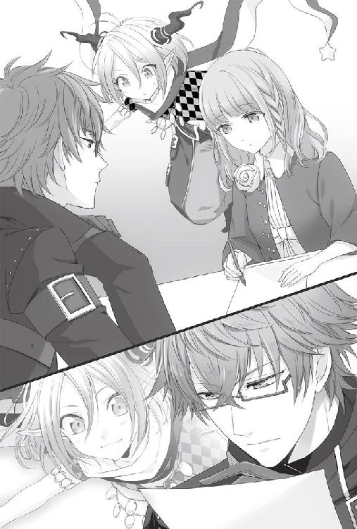
「......そうか。君の精霊は心優しい精霊らしいな」
感じたままの感想を述べたまでだが、彼女は嬉しそうに口元に笑みを乗せた。どうやら、彼女との仲も良好のようだ。
「もし君たちが早く記憶を取り戻したいと思っているなら、協力できることはいくつもあると思う。刺激になるような思い出話をする事はもちろん、サワやトーマ君にも話をするようそれとなく渡りを付けよう」
彼女が記憶を失っていることを言わずに、思い出話をさせることは不可能ではない。いくつか方法を考えてみたが、実践的なものもすぐに思い付いた。
「新しい引き出しができるような思い出を作成することも協力のひとつになるだろう」
新しい思い出を作りたがっているのは自分ではないのか。きちんと彼女のことを考えて動けているかと、心の中で囁く声がする。その声に、大丈夫だと多少意地になったように答えてから、私は彼女の方に向き直った。
「君が今まで思い出した記憶は大した量ではないということだったな」
少し考える素振りを見せてから、彼女が頷く。
「その量で目に見えて精霊が薄れているなら、君の記憶の引き出しが自由になるのはそう難しくなさそうだ」
今までの情報を総合して考えると、記憶と一言でいっても何かキーになるようなものさえ思い出せれば、彼女は全てを思い出すのではないかと思われた。そしておそらく、そのキーは思い出しにくいもの。もっと言ってしまえば、彼女自身も思い出したくないと感じていることではないのか。
例えば、と考えそうになり頭を振って考えを打ち消した。
今はそのことよりも、彼女が今後不安なく過ごすための道筋を作るのが先だ。
「君が望むなら、私が留学した後も君が戸惑わずに済むようあらゆる協力をすると約束しよう」
「......思い出しても、いいんですか？」
遠慮がちに聞かれ、はっとした。
「もちろんだ。もちろん、構わない」
また、私は彼女に甘やかされている。彼女の優しさにつけ込んではいけない。
それでも、私の中にはまだ彼女が全てを思い出すことに怯えている自分もいた。きっと、彼女にはそれが見えているのだろう。
「すまない......昨日は取り乱していた。君が正常な生活を取り戻せるよう努力するのは当然のことだった。あまり賢いとは言えないらしい精霊君でさえ当然だと思っているらしいのにな......。私は何をしているんだろう......」
子どもですらわかるような単純なことだ。失った記憶は取り戻すべきだ。ましてや、記憶を失ったままでは彼女の体を蝕む恐れもあるという。どうして記憶回復に反対することができよう。
彼女が望むなら......いや、たとえ彼女自身も思い出したくないと願っていたとしても、彼女がこれから先の未来も生きていくためならば、私は何を犠牲にしても彼女の記憶を取り戻そうと思う。
「精霊君、そういうわけで私は反省した。彼女の幸福だけを第一に考える。だから安心して彼女を任せてもらうわけにはいかないだろうか」
私の言葉に完全に納得したわけでもないようだが、精霊君も了承してくれた。
「記憶を取り戻した結果、たとえ君が私から離れていったとしても......」
それは、考えることも辛いことだ。しかし、可能性として存在する限り、私は覚悟しておかねばならない。
「君の生活に支障がないよう取りはからうことを約束しよう。だから、気にせず私を頼ってくれ」
自分よりも強く幸せになってもらいたいと思う存在がいる。愛とは崇高なものだと過去に彼女は懸命に説いていたが、今ならそれに同意できる気がした。
ペンを持った彼女の手が動く。書かれたその文字を見て、何とも言えない感情が私を包み込んだ。
「......そうか。それはありがとう」
──彼女の恋人が私でよかったと思う、か。
「私は、その言葉に恥じない行動を取らなければな......」
８月21日
自宅で論文のまとめを急いではいたが、睡眠時間を削りがちなせいかはたまた別の心配事のせいかあまりはかどってはいなかった。
彼女の体調は良くなっただろうか。そして今、彼女はどこまで思い出しただろうか。手を止める度に考えてしまう。
彼女が記憶を取り戻すことは喜ばしいことだと何度も自分に言い聞かせた。それでも、私は恐ろしい。彼女が再び、私を嫌ってしまうのではないかということが。
まだ、どうして彼女を自分のパートナーに選んだのか不思議に思っていた頃ならば良かった。だが今は、私は彼女を愛おしいと思い、この先も、できることならば一生添い遂げたいとまで思うようになっていた。
頭を切り換えて研究に戻ろうとしたが、またすぐに手が止まってしまう。今度は、今日も彼女はうちに来てくれるだろうかという考えのせいだ。
この学会を無事に終え、ロンドンへ留学する。それは私の将来設計に関わる大きなイベントのひとつだ。今さら変更することはできない。
だからこそ、この学会には全力で取りかからねばならないのに、頭は彼女のことでいっぱいだった。どうしてこんなに彼女に会いたいと思ってしまうのだろう。これも、人間に恋愛という錯覚を起こさせるホルモン、ＰＥＡ細胞による錯覚の為せる業なのか。はたまた、彼女が言っていたように、恋愛に理由などないと認めるしかないのだろうか。
パソコンのモニターに表示されている時刻に視線をやった時、玄関のチャイムが鳴った。
時間的にも彼女の来訪の可能性が高い。病み上がりだというのに来てくれたのかと、即座に部屋を出たのだが、
「はい、今開けます」
一階のリビングから、インターフォンに返事をする声が聞こえた。──まさか。
てっきり寝室にいるものかと思ったが、どうしてリビングなどにいるのだ。
階段へ急いだが、間に合いそうにない。ほどなくして玄関ドアが開く音が聞こえた。
「......あら、どちら様？」
「あ......」
二人のやりとりを耳で拾いながら、私はようやく玄関へと辿り着く。
「......母上、彼女は私の知人だ」
後ろから声をかけると、
「あらケント。わざわざ下りてきたの」
母上はゆっくり振り返った。その顔には笑みが浮かんでおり、何かを期待しているのがありありとわかった。
「私の客だろう。それより母上、あなたは風邪なんじゃないのか。どうして起きてくるんだ」
言外にもう出迎えは済んだのだから寝室に戻ってくれと伝えたつもりだが、母上は笑顔のまま引き下がろうとしない。それどころか、彼女にスリッパを出し始めた。
「......君もだ」
仕方ない。母上のことはおいておき、先に彼女に対応しようと視線をずらす。
「もう大丈夫なのか？ 無理をして出てこなくてもよかったんだぞ」
彼女が何かを言うより早く、
「あら、優しいじゃない。この子あなたの彼女？」
母上が横から口を挟んだ。どうしてこう、好奇心旺盛なのか。
「......母上、いいからあなたはベッドに」
「そうなんでしょ？」
いつものことだが、母上はまるで私の話を聞いていない。正確には、聞いてはいるのだが正当性がないと判断すると無視をする。
「......まあ、そうだな」
仕方なく頷くと、
「まあ嫌だ、あなたそんな子がいるなんて一言も言わなかったじゃないの。どうして黙ってたの？ 紹介してちょうだいよ。ねえ？」
そう言って、母上は彼女にも親しげに話しかけ始めた。彼女に困っているような様子はなかったが、明らかに母上の迫力に押されていた。
「両親に紹介するような段階ではない」
重い溜息が漏れそうになり、すんでのところで呑み込んだ。こうなることは目に見えていたから、まだ彼女と会わせたくはなかったというのに。
今はまだ、彼女が全てを思い出していないので私に好意的だが、この先はわからない。しかも、その変化は急にやってくる可能性もある。今日紹介した恋人と明日には別れているなど、笑い話にもならない。
「ねえ、あなた。今日はぜひ夕食を食べていって。夫も早く帰ってこさせるから」
今度も、母上は私の話を綺麗に無視した。
「母上。彼女は病み上がりなんだ。あなたも仕事を休んだんだろう。おとなしく寝ていたらどうなんだ」
「もう治ったわよ。ねえ、いいでしょう？」
母上は私の言葉を手を振ってあしらい、愛想の良い笑みを彼女へと向ける。彼女はちらりと私を見た後に、
「それじゃあ、ご馳走になります」
遠慮はしつつも笑顔を浮かべてくれた。
「......すまないな。万が一途中で具合が悪くなったら遠慮せず帰ってくれ」
どこかその笑顔にほっとしながら言うと、
「ええ、無理はしないでね」
「母上、無理をさせているのはあなたなんだが」
また溜息をつきそうになってしまう。
「だって、私が仕事を休んでることなんて滅多にないじゃない。あなたはもうすぐ留学だし、私が彼女に会える機会はもうないかもしれないのよ？ せっかくの機会は有効利用するべきだわ。改めてお招きするより効率的だし。父様もそう言うと思うの」
「まあ、それはそうだが......」
母上の言っていることは合理的であり、一々正しい。さすがに弁護士だけあって、反論の隙間も見つけるのに苦労するレベルだ。
母上に異議を申し立てるのは諦め、私は彼女の方に向き直った。
「......とにかく、いつまでもここにいるのは病み上がりの体に悪い。上がってくれ」
「ああ、そうね上がってちょうだい。お茶を持って行くわね」
「あなたの行くべき場所は、ベッドだ！」
「あら、覗くつもりじゃないのよ？」と不満そうにしながらも、母上はお茶出しだけは諦めてくれたようだった。
彼女を自室へと案内しながら、弁解をする。
「驚かせてすまないな。母は滅多に家にいないんだが、今日は体調不良だそうでな。すこぶる元気に見えるが、あれでも熱が三八度あるんだそうだ」
彼女は機嫌を悪くするどころか、母上との対面を楽しんでいる様子すらあった。それに安堵しながら、いつものようにソファを勧める。
「ああ、今の君は知らないんだったな。私の母は弁護士、父は大学で数学の研究をしている。二人とも多忙でほとんど家にはいない。私自身、君と交際する前はもっぱら大学に居座っていたんだが」
彼女と付き合うようになってからは、自宅にいる方が断然多くなった。
「今はできるだけ家にいるようにしている。まあ......こちらの方が君が来やすいだろうと思ってな」
正直に伝えると、彼女は口元に笑みを浮かべた。
こんな穏やかで平和な時間は、後どれくらい残されているのだろうか。この時間を大切にしたいと思うのに、今共にいる瞬間にも彼女が何かを思い出し、過去のように私を嫌ってしまうのではないかと私は怯えていた。
「だが、やはり大学にいないと進まない作業があるのも確かだ」
彼女の笑みが少し曇る。
「もう日にちもない。本当は今日の午後から大学にこもろうかと思っていたんだ。申し訳ないが、学会が終わるまで君と会うのは難しいかもしれない」
自分で決めたことだというのに、彼女に会えないことは寂しかった。しかし同時に、彼女に会わずにいられることに安堵してもいた。離れている間は、彼女が何かを思い出したとしても知らずに済すむからだ。
傍にいたいのに、傍にいたくない。私も大概、捻くれていると思う。
彼女が相槌を打っていないことに気付き、ああそうかと皮肉な笑みが口元に浮かんだ。
「......いや、別に君は気にしないか。ただ私が会いたいだけだな」
翻弄されているのは私だけで、彼女は私と会えずとも何ともないのだろう。常に同じ気持ちでいてほしいと思うのは勝手な話だ。
しかし、彼女は予想に反して「私も寂しいです」 と目を伏せた。
「......っ。そ、そうか」
彼女の表情からは私に気を遣っている様子はなく、本心からの言葉に見えた。心臓が不規則なリズムで鼓動を刻む。
「では、電話をする。そういうことで、どうだろうか」
はい、と彼女がはにかんだ。
先ほどまで、悲観的にばかり考えていたというのに、今は彼女を愛おしいと思うばかりだから不思議だ。恋愛現象というものは、こうも人の気持ちを容易く動かしてしまうものなのか。
「......そうか。交際中の女性に電話やメールをするというのはこういう目的だったのか。つまり、会って話ができない分を補うための手段だったのだな」
そうだと仮定すると、私が送っていた挨拶だけのメールはまるで意味がなかったことになる。会話への発展性などゼロに近いのだから。
用件を伝えるためだけの電話も、恋人にするものとしては相応しくなかったと今ならわかる。
「なるほど。以前の君に私のメールが気に入らないと言われた理由が、やっとわかった気がする」
彼女は目を丸くしていた。私も、まさか自分が理解できる日が来るとは思っていなかったので、少なからず驚いていた。
「今度メールを送ることがあったら、会話が成り立つような内容になるよう努力しよう」
立ち話を終了し、机に向かおうとして思い出した。
「それと、もうひとつ伝えておきたいと思っていたことがある」
鞄から文庫本を取り出そうとしていた彼女がその手を止め、私を見上げる。
「今日はここまで来させてしまったのだが、できれば君にはひとりで外出してほしくないんだ。特に、時間が遅くなる時、あまりひとけのない場所を歩く時は必ず誰かに同行を頼んでほしい」
彼女は何のことか思い付かないらしく、小首を傾げた。
「あのウキョウという男のことが心配なんだ」
ここ数日姿を見かけないからと言って、彼が彼女への接触を諦めたのだとは言い切れない。
「君に記憶がないということは、何かしらの理由で狙われている可能性も十分あるということだろう」
ウキョウとのやり取りを思い出してみると、彼は彼女が記憶を失っていることを想定して話していたような気さえした。私の考え過ぎならばいいと思うが、用心に越したことはない。
「少なくとも一週間くらいは奴が周りをうろついていないか様子を見てほしいんだが」
彼女は神妙な面持ちで頷いた。
「まあ、あまり神経質になってはかえって疲れてしまうかもしれないがな。君の傍についていてやれないから少し心配しすぎているのかもしれない」
何をおいても彼女の傍にいるべきではないのか、という考えが頭を過ぎる。
だが、彼女に確実に危険が迫っているならまだしも、今は可能性の段階でしかない。そして、私が傍にいることで彼女の記憶が加速度的に回復するとも言えず、さらに私は学会の準備に追われている。全てが言い訳のように思えてくるが、私は私のやるべきことをまず片付けるべきだろう。
「とりあえず、今日はここで過ごしてくれ。明日以降は、君がサワやミネから情報を得られるように根回ししておく。君は早く記憶を取り戻したいだろうからね」
打つ手はすでに考えてあった。昨日は精霊君のこともあり行動まで至らなかったが、明日からのことを考えると今日には動いておくべきだろう。
「......彼女たちから情報を聞けば、君はいろいろ思い出すのかもしれないな」
彼女に聞かせるべき言葉ではないと理性が訴えるのに、私の口は止まらない。
「実のところ私は、君がいつ何を思い出すかと怯えている。学会の準備が忙しいというのは言い訳かもしれない。君が全てを思い出して、私への態度を変えるところを見たくないだけなのかもしれない」
彼女は静かな瞳で私を見つめていた。私は、彼女の同情でも引くつもりなのだろうか。
「......それでも、思い出してほしくないなどというのは私の勝手だと思っている」
違う。同情などしてほしいわけではない。ただ、伝えたかったのだ。自分をわかってほしかったとでも言えばいいのか。今になって勝手なことだと、口元に自嘲めいた笑みが浮かんだ。。
「君は、私に遠慮することなく君の記憶を取り戻してくれ」
こんな話を聞かされた後で、彼女が遠慮なく記憶を取り戻す行動に出られないことは、私が一番よく知っているのではないのか。彼女を大切にしたいと思うのに、ままならない自分の感情に苛立つ。
「さあ、遠慮なく食べてくださいね」
夕食の用意ができたと母上に呼ばれて一階に下りると、驚いたことに本当に父上までが顔を揃えていた。
私は父上の存在に驚いたが、彼女はテーブルに並べられた料理の数に驚いているようだった。
「母上、彼女はあなたが作ったと誤解して驚いているようだが」
「あら、違うのよ。うちの食事は大体外食かケータリングなの」
母上は明るく笑いながら、彼女に席を勧める。
「私も夫もこの子もほとんど家にいないでしょう？ あまり食事を作る必要性を感じないのよね」
私はもう慣れたものだが、母上の考え方に彼女は目を丸くしていた。
「効率を優先するなら当然だろう？ 妻の労働時間単価を考えれば、外注した方がはるかに安いからな」
父上の物の考え方も、一般的には変わっていることを私は知っている。個人的には合理的で納得がいっているが、彼女はやはり驚いているようだった。
「栄養価的にも、私が下手なものを慌てて作るよりきちんとしたお店でいただいた方がバランスが取れるし」
「息子の味覚を伸ばすのにも効果的だ」
「というわけで、うちは食事を作らない主義なのよ」
ふと、母上と父上の馴れ初めを一度も聞いたことがないことに気が付いた。この両親を見て育てば恋愛段階を想像できないのも無理はないかもしれないが、二人は見合い結婚ではなかったはずだ。ということは、彼らにも恋愛と呼ばれる段階が存在していたはずである。
いつか、聞いてみるのもいいかもしれない。などと考え事をしながら、私は彼女の方に視線を戻した。
「世間的に珍しいのは理解しているが、理屈は通っているだろう？」
驚いたままの彼女にフォローを入れると、少し困ったような顔で彼女が笑った。彼女の、この姿勢を私は好ましいと思う。すぐに納得できないことでも、否定をしようとはしないのだ。私にはない一面だ。
「それにしても、可愛らしいお嬢さんだな」
父上は上機嫌にワインを傾けた。こんな早い時間からワインを開けるのは珍しいことだ。
「ええ。さすが私たちの息子ね」
風邪を引いているらしい母上は、さすがに彼女に出したのと同じ、ブドウジュースを飲んでいる。
「まあ、遺伝子は自分にとって最適な遺伝子と引き合い、結ばれるものだ。そう考えれば不思議でもあるまい」
「もちろん。ケントは可愛いお嬢さんを連れてくるって信じてたわ」
私も、かつては両親のように遺伝子が勝手に相手の異性を見つけるものだと思っていた。
だが、今は遺伝子だけの問題だろうかと考える。
「......さあ、私は本当に最適な遺伝子を選んだのかな」
私が苦笑したのを見て、
「あら、あなた。このお嬢さんのどこが不満なの？」
母上がすかさず口を挟んだ。
「私に不満などないよ。ただ、彼女の方にはあるようだ」
「あらやだ。もしかしてあなたたち喧嘩中？」
「そういうわけじゃない」
「大丈夫よ、恋愛感情なんてしょせん種族保存の本能よ。悪いようにはならないわ」
こうまではっきり言い切るということは、母上は父上を最良の遺伝子だと認め、満足しているということだろう。ある意味、羨ましい話だ。
「......だといいけどね」
私が母上の話を流すようにしたからか、
「お嬢さん、ケントは少し堅物だが優秀な息子だ」
今度は父上が口を開いた。
「もし君がケントとの間にすれ違いを感じているとしても、将来のことは前向きに検討する価値があると思う。が家に継ぐ価値があるほどの物はないが、生活に不自由する可能性はきわめて低いと保証できる」
「あ、私たちのことなら、同居するつもりも口出しするつもりもないから気にしなくていいのよ」
両親が将来のことを話し出したのには、内心驚いた。本人を前に何を言い出すのだ、この人たちは。
「父上、母上、彼女が気にしているのはそういう条件の問題じゃない」
「しかし、結婚を考えるならやはり条件は重要だぞ。感情を優先しがちになるのはわかるがな」
「そういう段階ではないんだ」
それどころか、交際を続けられるかも綱渡り状態だ。
「......だからまだ紹介したくないと言ったのに」
呟いた言葉は、幸い彼らの耳には届かなかったようだ。
「とにかく、私たちの交際については放っておいてくれ。自分で何とかする」
「まあ、それも男の資質の証明として重要なポイントではあるな」
あくまで話をそちらに持って行きたいのか、父上。
あなたたちの息子は品定めをされる状態ですらないのだと言ってしまいたくなった。だが、こうして両親のいる場に彼女がいるというのは存外悪くない。
今この時だけは、あたたかな想像をしても許されるのではないか。そう思わずにはいられなかった。
両親も彼女もそう量を食べる方ではなかったからか、食事の席は二時間ほどで解散となった。それでも、初対面の人間と過ごすにはやや長い時間だろう。
「疲れたか？ 急な予定を入れさせてすまなかった。ゆっくり歩いて帰ろう」
家を出たところで、ようやく彼女に落ち着いて声をかけることができた。何せ、両親の前だと一語一句に突っ込みが入るので、弁論大会のようになってしまうのだ。私はそれでも構わなかったが、病み上がりの彼女を付き合わすのは本意でなかった。
ゆっくりと彼女と並んで歩きながら、私は彼女と手を繋いで歩いた時のことを思い出していた。彼女の気持ちがはっきりわからない今、彼女の手を取るのは躊躇われた。
頬に彼女の視線を感じて横を向くと、「合理的な考え方のご両親ですね」と言われた。それは褒め言葉だと受け取っていいのだろうか。たぶん、そうなのだろう。
「......私も、以前は両親と同じように思っていた」
彼女は私を見上げ、今は違うのかと窺うような視線を向ける。今は、どうなのだろう。
彼女と交際を続けるうちに、私もどこか変わって来ているのだろうか。
「種族保存に最適な女性を自然と選び、恋愛と呼ばれる感情変化を起こして、結婚するのだろうと思っていた。だが皮肉なことに、実際好意を持った女性は私を嫌っていた」
彼女に視線をやると、気まずそうに逸らされた。
「私はといえば、振り回されて失態を演じてばかりいる。人生の中でも最重要に分類されるであろうイベントの準備にまで影響を出す始末だ」
本番まで残り三日。この調子で間に合うと、私は本当に思っているのだろうか。
「これが、本当に遺伝子の命令なんだろうか。だとしたら私の遺伝子が不良品だったのか。あるいは、君の言うとおり恋愛に理由などないと認めるしかないのだろうか」
未来を期待してはいけない相手を、私の不良品遺伝子が選んでしまったのではないかと不安に駆られる。間違いなら間違いだといっそエラー音でも出ればわかりやすいが、生憎と人間にはそのような機能が備わっていない。
「......最近、そんなことを考えている」
これでは愚痴だな、と自嘲する。
しかし、彼女は笑うことなく、「不良品なんかじゃないですよ」と、極真面目な顔で言ってくれた。
「それは、私の遺伝子が最適な相手を見つけたということか？ つまり君と上手く行く可能性はあると、そう思っていいんだろうか」
記憶を取り戻していない彼女に聞いてもわかるはずがないのに、私は言葉にしてしまう。言葉にしてしまってから後悔し、溜息をついた。
「......そんなことを言われると、期待してしまう。まあ、仮に遺伝子の組み合わせが適していたとしても......」
見上げた夜空には、星が瞬き始めていた。
「その組み合わせを成功させるかどうかは努力次第だということなのかもしれないな」
彼女がマンションの自室に入ったのを確認してから、歩いて来た道をまた引き返す。
相変わらず頭上には星が光っており、状況次第ではロマンチックな妄想を働かせてしまいそうな美しさだった。
何を感傷に浸っているのだろうか。
私は溜息を零してから携帯を取り出し、連絡帳からサワの番号を呼び出してかけた。
『もしもーし』
すぐに電話の向こうから明るい声が聞こえる。
「君に頼みたいことがある」
『あれ？ もしかしてケントさん!?』
画面表示は見なかったのか、と指摘しようとしてやめた。ワンコールで出たくらいだ。見なかったのだろう。
「そうだ。それで、いいだろうか」
『え、いいって何のお願いなんですか？』
「最近、彼女が映画に凝っていてな。素人ながらに自分の大学時代をモデルに映画を撮りたいそうだ。私もできる限り協力したい気持ちはあるのだが、何せ思い出といっても四ヶ月程度しかない」
『え、映画!? しかも自分をモデルにって！』
「あくまで一時的なものだろうと思うが、水を差さないでやってくれるか。私も今は忙しい身だ。彼女が何かに没頭していてくれた方が助かる」
『うわ、それちょっとひどいですよ、ケントさん』
作り話だというのに真面目に説教されそうになり、苦笑した。
「とにかく、彼女との付き合いは私より君たちの方が長いだろう。彼女はここのところあまり体調もよくないから、できれば君たちの方から思い出を提供しに行ってやってほしい」
『......ケントさんから頼まれ事だなんて、明日は槍が降りそうですね』
「............それで、どうなんだ。協力してくれるのか、してくれないのか」
『あ、もちろんしますよ。何せ親友ですから！ じゃあ、あたしだけじゃなくってミネとかトーマとかシンにも声かけておきますね。あー......でも、男たちと彼女は会わせたくなかったりします？』
妙な気遣いにまた、苦笑いしそうになる。
「いや、情報は多い方がいいだろう。印象的なエピソードがあればぜひ話してやってくれ」
『わかりました。じゃあ、すぐに連絡網回しますね～』
「ああ、頼む」
サワの行動が早いところは美徳だと素直に思う。これで彼女は明日から自ら動き回らずとも、過去の記憶情報を集めることができるだろう。
携帯をポケットにしまってから、空を見上げた。やはり、自然は私などおかまいなしにそこに存在し、美しい。
──私は後どれくらい、彼女と共にいられるのだろうか。
見えないカウントダウンは、じわじわと私の胸を締め付けた。
８月22日
「ケン、この資料は使うの？」
イッキュウに呼ばれて振り返ると、彼は手に大量のプリントを持っていた。それを受け取って中身をパラパラと確認する。
「いや、それはすでに検証に使い、発表に不必要だ」
「了解。じゃあ、この箱に避けておくから」
「......〝とりあえずは不必要箱〟とは何だ」
「ケンが整理せずにぐちゃっと置いていた、発表には使わないけど捨てると困りそうなものってこと。いいからケンはスライドの準備を進めて」
邪魔者のように追い払われて、私は机に戻る。ここは私の研究室なのだが、手伝ってもらっている身としては何も言えない。
大人しくスライド準備に取りかかっていると、イッキュウが携帯を取り出し何やら操作している姿が見えた。また女性相手へのメールだろうかとさして気に留めていなかったのだが、
「学会の日って準備まで手伝えば大丈夫そう？」
急に問いかけられて首を傾げた。
「ああ、さすがに登壇してまで手伝ってもらうことはないが」
「じゃあ、当日は彼女と一緒に見に行くから」
「そうか」
あっさりと流してしまってから、話の流れの異様さに気が付いた。
「待て、イッキュウ。今言った彼女とは......」
「ケンの付き合ってる子に決まってるでしょ。あ、安心して。ちゃんと家まで迎えに行くから」
「そうではない。いや、迎えには行ってもらいたいのだが」
いささか取り乱している私を、イッキュウはにやにやと見つめる。
「どうして君が彼女とメールのやり取りをしているんだ」
「どうしてって、この間メールアドレス交換してたの見てたじゃない」
交換したからといってメールのやり取りをする必要もないだろう。とはさすがに大人げない気がして言わなかった。
「それに、僕から送ったんじゃないよ？ 彼女の方から、学会って見に行ってもいいのかって聞かれたから返事をしただけ」
「......彼女の方から、だと？」
「ケン、男のヤキモチはみっともないよ」
イッキュウの顔ににやけた笑みが増す。
彼は私がヤキモチを妬いていると思い楽しんでいるようだったが、そうではない。......いや、少しは面白くない気持ちがあったが、それよりも、彼女の方から私の学会に来たいと連絡してきたことの方が重要だった。
彼女は、まだ思い出していないのだろうか。
「ほら、ケン。気になるのもわかるけど、肝心の学会に間に合わないと彼女にいいところも見せられないよ？」
「あ、ああ......」
私の反応が薄かったからか、イッキュウはそれ以上からかおうとはせずに苦笑いを浮かべていた。それぐらい、他人から見ても私には余裕がないらしい。
８月24日
今日も朝から大学で学会の準備を進める予定だった。だが家を出る直前で電話が鳴り、携帯画面を見るとサワの名前が表示されていた。
『あ、もしもし、ケントさん？』
「どうかしたか。君にしては朝が早いようだが」
『うわ、そりゃあ私は朝弱いですけど......って、忘れないうちに報告しておこうと思って』
「............」
サワからの報告と言えば、ひとつしか思い当たらない。
『ケントさんに頼まれたとおり、あの子に話しておきましたよ。って言っても、あたしが話せたのなんて、ケントさんが講師に来た時の話くらいですけど』
「......そうか」
私が講師をしていた時のことは、まだ彼女にあまり話していなかった。それは、それをきっかけにあのことを思い出してしまうのではないかと、どこかで考えていたからかもしれない。だから、サワの口から早めに話してもらえたのはよかった。それは、私が話すまで待っていたら、彼女の記憶が戻るのに時間がかかってしまう可能性が高かったからだ。
『あ、あと、昨日はトーマとシンがお見舞いがてら来たって言ってましたよ。何を話したかまでは聞いてませんけど、なんか励まされたって』
「励まされた......？」
『落ち込んでる様子もなかったと思うんですけど、もしかしたらウキョウさんとの三角関係の話かなーとか』
「三角関係？ どういうことだ」
『あ、いえ、問題ないなら大丈夫でーす。じゃあ、そういうことで。他の友達にも声かけておきましたから』
「おい、サ......」
逃げるように、通話は打ち切られた。
しばらく、切れた携帯から目を離すことができなかった。彼女の思い出集めは順調らしい。それはわかった。手を回したのは私なのだし、経過が良好なのは何よりだ。だが......。
彼女は今、どこまで思い出しているのか。こうして私が彼女の傍にいない間に全てを思い出し、彼女は私の顔など二度と見たくないと思うようになってはいまいか。不安に押し潰されそうになる。
男性陣にも声をかけてくれと言ったのも私だ。それなのに、彼女の元知り合いとは言え、男性が訪れたのだと聞くと心穏やかではいられなかった。しかも、彼女は励まされたと言う。一体、何を励まされたと言うのか。
私は今も離れた場所におり、彼女の力になれてはいない。それがどうだ。他の男性は彼女を励ましたと言う。
どうしようもない焦燥感が駆け巡る。
「あらケント、まだいたの？」
珍しく遅くまで家にいる母上が、玄関に立ち尽くしたままの私に訝しげな声を上げた。
「......今、出るところだ」
「そう。大学に行くのよね？ それならちょっと頼みたい資料があるのだけど」
「いや......大学には行かないかもしれない」
「え？ あ、ケント！」
驚く母上の声を無視し、私は外へ出た。
サワから電話をもらうまでは大学に向かう気だった。一日大学で学会の準備を進め、明日の発表に備えるつもりでいた。実際、一日かけても終わるかどうか怪しいほど作業は残っている。
それなのに今、私の足は彼女のマンションへと向かっていた。
今すぐ、彼女の顔が見たい。声が聞きたかった。
──本当に、私はどうしてしまったのだろうか。
マンションを訪ねると、彼女は私を見て目を丸くしていた。無理もない。学会まではまともに会えないと言ったのは私の方だ。
「サワから連絡をもらったんだが。順調にいっているようだな」
室内に通されるなり切り出すと、彼女はにこやかに頷いた。その表情からも記憶が回復してきているのではないかと不安が膨らむ。
「......どこまで思い出した」
取り繕う余裕はなかった。彼女の肩を掴み、詰め寄るように問いかける。
「何を思い出して、何を思った。今でも私と話していていいと思えるか？ 追い出したいと思わないか？」
彼女は目を見開いて小さく首を横に振る。
まだ、まだ大丈夫だった。一瞬安堵するが、またすぐに不安が胸の内を占拠する。彼女は私に気を遣って否定してくれただけかもしれないではないか。
「......私は今君と離れていていいのか？ 離れている間に、会いたくないと思われるようになっているんじゃないか？」
可能性の話をされても彼女も困るだろう。頭ではわかっているが、聞かずにはいられない。
「昨日は友人の男性が来たそうだな。ずいぶんと元気付けられたようだとサワが言っていた」
何を励ましてもらったんだ、とは聞けなかった。それが私に関することではないと言い切れないからだ。聞いてしまった時点で、彼女との関係が終わってしまうかもしれないと思うと、怖ろしくて聞けるはずがなかった。
「彼は君にとってどんな存在なんだ？ 私には与えられないものを与えてやれるんじゃないのか？」
トーマ君もシン君も私は知っている。友人関係にあるわけではないから全ての人となりを把握しているわけではないが、どちらも私よりも人間らしく、愛情を知っている人間に見えた。彼女は、私からは得られないものを他の男性に求めたりはしないのだろうか。
考えながら、首を横に振る。
「わかっている。君は男性とも公平に友情関係が築ける人間だ。友人は友人であってそれ以外のものではないんだろう。そうだとわかっていても君を失うんじゃないかと思うと恐ろしいんだ......！」
彼女を腕の中に抱きたい欲求に駆られたが、私の腕はぴくりとも上がらない。
私は恐れ、怯え、萎縮していた。
「思い出したくないことを思い出して傷付いた君を、私以外の誰かが支えてやっているのではないかと......今この瞬間にも、以前のように私を嫌いになっているのではないかと......そんな妄想に取り憑かれて何も手につかない」
私は自分で自分の手をきつく握り締めた。そうでもしていないと、手が震えそうだった。
「......君が来ることを断ったのに、結局こうして確かめに来ずにはいられなかった」
重く深い吐息をつく。
「馬鹿な話だな。自分が嫌になる。それでも、じっとしていられなかったんだ」
彼女は何も言わない。呆れるでもなく、哀れむでもなく、静かな瞳でただ私を見つめていた。
「教えてくれ......。何を、思い出した......？」
真実を知りたかった。たとえ残酷でも、真実を。
まやかしだといつかわかってしまうのなら、今、現実を知っておきたい。
「何を思い出しても平気だと思います」
彼女ははっきりとした声で言った。私を励ますように。
「本当にそうか？ 本当に、何を思い出しても変わらないと言ってくれるのか？ 私を嫌っていたことを思い出してもこうして穏やかに話してくれるのか？」
脳裏に、頬に涙の線をつけ、私を睨み上げる彼女の顔が浮かんだ。これは今ではない、あの時の彼女の姿だ。
「......また君を泣かせてしまうのではないかと思うと、怖くてたまらなくなるんだ」
もう二度と、彼女を傷付けたくない。今の私はそう思っている。それなのに、たぶん過去の私がもう一度、彼女を深く傷付けることになるのだ。
彼女があのことを思い出した時。どれほどの哀しみを覚えるのかと想像するだけで胸が張り裂けそうだった。
彼女は物思いに沈み込む私を、心配そうに見上げていた。
「......すまない。私も平気だと思いたい」
どうして記憶を失くした本人よりも、私の方がこんなに取り乱しているのだろうか。これでは支えるどころではないではないか。
精霊君に任せてくれと言ったくせに、恥ずかしい。
私は意識して呼吸を深くし、
「まあ、少なくとも今の君は平気だと思ってくれているんだな。そう思えば、少し勇気づけられる気がする」
無理やりにでも笑おうとしたが、上手くできたかどうかはわからない。
少し間を置くことで、徐々に頭が冷静になっていく。不安はぬぐい去れるものではなかったが、彼女の傍にいる分、軽減されているのかもしれなかった。
不意に彼女が虚空を見つめたかと思うと、私を手招きしてテーブルの方へと向かった。
「なんだ？ 精霊君からの呼びかけか？」
私の予測は当たっていたらしく、彼女は紙とペンを用意する。
精霊君は長く話しているらしく、彼女はしばらく俯いてペンを走らせてから、まとまったものを私の方へ向けた。
メモは『何を思い出しても、この子がケントのことを前と同じ目で見ることはないと思うよ』という文章で始まっていた。まだ続きがあり、精霊君は彼女を傍で見てきて、そう判断したと書かれていた。今の、態度を改めてからの私を見ているのだから、過去の私を思い出しても彼女まで過去のように態度を変化させることはない。と、彼は語っているようだった。
伝言は以上かと思ったが、彼女はペンを空に浮かせて悩んだ後に、
「これはあくまで伝言ですので......」
どこか必死な様子で私に言ってからまたペンを走らせた。
「......？ ああ」
一体、何を言われるのかと待っていると、彼女は手で書く途中の物を隠しながら書き、終わるとメモを私に切って渡した。
「......！」
内容が内容だけに、思わず彼女の顔を見てしまったが、彼女はすぐに顔を逸らしてまたメモを書き始めてしまった。その頬は気のせいではなく、赤い。
私は渡されたメモにもう一度目を通す。
『ボクから見て、この子はケントのことちゃんと好きになってるんじゃないかと思う』
本当にそうなのだろうか。精霊君は彼女の中にいる存在だ。それはかなり近しい存在だと言える。その彼がここまで言うということは、と期待しそうになり頭を振った。
これは、彼女自身の言葉ではないのだ。どんなに近しい存在が語っているとは言え、彼女から言われなければ意味がない。
彼女はまた新たなメモを破ると、私に寄越した。
今度は長く、要約するとこうだ。
精霊君も記憶を失う前の彼女のことは知らないし、今の本心までわかるわけではない。しかし、彼女が意外に素直ではないことや何かひとつの嫌なことをきっかけに人を嫌いになるような人間ではないと語っていた。
『ケントだってそうだったでしょ？』と、親しい友人のように同意を求められ、少し笑ってしまう。
「ああ......そうだな。そうだった。彼女の態度は本当に腹立たしく思っていたが、嫌いになれなかった」
何度口論になっても、翌日には彼女に会いたいと思っていた。
「苛立つことばかりだったが、それでも好きだった。罵倒でもいいから声を聞きたいと思ってしまっていた」
もしや、自分にはマゾヒズムの傾向があるのだろうかと真面目に考えたこともある。
「......我ながら頭がおかしいな」
苦笑すると、すぐに『うん。でもね、今はこの子も多分そう思ってるから』と書かれたメモを渡された。
あまりに会話がスムーズに成立するものだから、彼女と話しているのではないかと錯覚しそうになる。あくまで、これは精霊君が私に向けた言葉だとわかっているのに、だ。それは、願望だったからかもしれない。
「......確認するが、これは本当に精霊君からの伝言だな？ 君の意志で書いているのではないな？」
念のために聞いただけだったが、彼女は必死に何度も首を縦に振った。
「いや、そんなに必死でうなずかなくてもいい。念のために確認しただけだ」
あまりの必死ぶりから、やはり彼女からの言葉ではないのだと確信し、わずかに落胆した。
「精霊君の好意はよくわかった。だが、彼女の意志で告げられたことではない以上、この話は参考にとどめる」
もし、彼女自身からの言葉だったとしたら、私はどうする気でいたのだろう。自らあのことについて彼女に語って聞かせていただろうか。そうして、過去とは違う言葉をかけたいと思ってはいないだろうか。
精霊君との会話は終わりかと思われたが、彼女は空中を見つめた後に一度頷くと、また何かを書き始めた。
今度は隠そうとしないので、書いている途中の文章が見える。『嫌われることに怯えないで、ケントが気にしてること、この子に全部話してあげてほしい』
「......！」
──精霊君には全てお見通しというわけか。
私が何かを必死に隠し、その隠しているものが彼女の記憶を取り戻すトリガーになっているだろうということまで、彼にはわかっているようだった。以前、あまり頭の良い精霊だとは思えないと彼を評したが、撤回した方が良さそうだ。
『きっと、大丈夫だから』と締めくくられたメモを読み終えると、私は溜息をついていた。
「......検討する」
私に今できる約束は、これが精一杯だった。
「すまない、今はその決心がつかない。だが、前向きに検討する。それで許してほしい」
随分とあやふやな約束だというのに、精霊君はそれでいいと言ってくれた。私よりよほど、思いやりに溢れている。私ももう少し、勇気を持つべきなのかもしれない。
話が途切れると、彼女から明日の学会は二人で見に行くからと笑顔を向けられた。
「見に来てくれるのか」
一瞬、二人とは彼女とイッキュウのことかと思ったが、彼女が当たり前のように精霊君を指しているのだとわかり微笑ましくなる。
「......しかし、君たちに私の論文の内容が理解できるのか？」
彼女の眉が八の字に下がり、また笑いそうになった。
「......つまり、君たちにも理解できるように発表するのが私の課題ということだな」
壇上から見た先に彼女がいる様子を想像して、悪くないと私は笑みを浮かべる。
「では、大学に戻るか。目標が定まったおかげで集中できる気がしてきた」
玄関へ向かうと、彼女も見送りに出てくれた。
「明日は期待していてくれ。急ごしらえになるが、君に聞かせるつもりで壇上に立つ」
そして、決めた。
学会で全力を出し切ったら、彼女に全てを話そう、と。
８月25日
「もう朝か......」
覚悟はしていたが、昨日から急に発表対象者を変更などしたものだから、泊まり込んで作業をしてもまだ準備が整っていなかった。それでも、不思議とやる気が漲り、前よりも数段良いものが発表できる自信すらあった。
彼女はこの発表を見て、どう感じてくれるだろうか。それを想像するだけで、準備が終わってもいないのに発表が楽しみになるのだから不思議だ。
そこにノックの音と共に、開かれたドアからコーヒーの香りが漂ってきた。
「おはよ......って、何この紙の山！ この間片付けたのにどういうこと!?」
「ああ、イッキュウか。急遽方向性を変えることにしてな。君が用意してくれていた箱から引っ張り出したものだ。捨てていなくて助かった」
「それは良かったけど......今方向性を変えるって言った？ 今から？ それ、間に合うの？」
「間に合わせる」
「はー......そう。わかった。手伝う」
イッキュウは大仰に溜息をついたが、コーヒーを私の机に置くとすぐに作業に取りかかってくれた。
「すまない」
「この貸しはちゃんと返してもらうからいいよ」
「そうだな、覚えておこう」
プリントの束を手にしていたイッキュウが、ふと手を止めて私の顔をまじまじと見つめた。
「......何だ？ 何かついているか？」
一応、教員用のバスルームでシャワーとひげそりは済ませていたが、急いでいたせいで身だしなみが整っていなかっただろうかと顔を触る。
「いや、自信はあるんだなって思って」
「ああ......」
「......何があったかは聞かないけど、その分なら大丈夫そうだ」
イッキュウは唇を引き上げる。
「ただし、準備が無事に間に合ったら、ね」
「違いない」
共犯者のような笑顔を向け合い、私たちはすぐに手を動かし始めた。学会の開始までは残り三時間を切っている。
時計を見上げると、そろそろ学会自体は開始時刻になろうとしていた。
一番手ではないため、まだ多少の猶予はあったが、それでもぎりぎりというところだ。こういう時に限って、パソコンの調子が悪くなり、工学科の人間に電話をかけるはめになる。
パソコンをいじっている私の横で、イッキュウは誰かと電話をしていた。それを横目に、パソコンは工学科の人間に任せて、私は台本の確認に回った。しかし、肝心の台本が見つからない。
「イッキュウ、台本を知らないか」
つい、イッキュウが電話中であることを失念して話しかけてしまった。
「は？ ごめん、ちょっと待って」
電話口に言ってから、イッキュウが顔を上げた。
「ああ、すまない。電話は......」
「いいから、何を知らないかって？」
「台本だ。これくらいの紙に印刷しておいたはずなのだが......ああ、もしかしたら家かもしれない」
「カンペ忘れた？ それって大丈夫なの？」
「一応、内容は頭に入っている」
急遽変更した箇所は、元々台本など用意していない。あるに越したことはないが、なくとも何とかなるレベルには自分の論文を理解しているつもりだ。
「大丈夫？ ならいいけど......。ケンらしくないね」
すまないと手振りで伝え、他の準備に取りかかる。
「ごめんね、慌ただしくって。そういうわけだから、一段落したら迎えに行くよ。もう少し待ってて。それじゃ、また後でね」
何気なく聞こえた会話から、イッキュウの電話の相手が彼女であったと気付いた。
「イッキュウ、今のは彼女からか？」
「そう。迎えに行く約束だからね。って、ケン。今は彼女のことは置いておいて、準備でしょ」
「あ、ああ」
「心配しなくても、ちゃんと迎えに行って連れて来るよ。もちろん、手も出さない」
「当たり前だ」
この学会で成功すれば、私はロンドンに留学することになる。改めてその事実を考えてみると、彼女と一年間も離れなければならないのだとようやく気が付いた。私は、それでいいのだろうか。
いや、何を今さら迷うことがあるのか。初めから決めていたことではないか。
学会が終わったら彼女に全てを話し、そして......？ どうやら私は、その後のことまでは考えていなかったらしい。
もし、もしも全てを話した後でも彼女が私を受け入れてくれるようなら、二人でロンドンに行くというのはどうだろう。いくつもの仮定を踏み越えた妄想に近い考えだったが、それは私を非常に満足させた。
今、壇上には三番目の発表者が立っている。そろそろ私も準備した方がいいだろう。
ようやく無事に焼けたスライドを手に移動しようとしていると、弾け飛びそうな勢いでドアが開けられた。
「ケン!!」
「どうした。スライドならＣＤに焼けたぞ」
「ああ、そう。それはよかった。そんなことはどうでもいいんだけど」
イッキュウは自分を落ち着かせるように一度深く深呼吸をしてから、
「落ち着いて聞いてね」
私の肩に手を置いた。その真剣を通り越した眼差しに嫌な予感がした。
「彼女が事故に遭ったらしいんだ」
「......!?」
声が出ない。彼女が事故？ それは誰が考えた悪趣味な嘘だ？
──いつか来る死だ。
誰かの......いや、自分の声が頭の中に響いた。これは呪いだ。私が過去彼女に言った言葉が、私を脅かす。
「今携帯に電話したら病院の人が出て。病院に搬送されてるんだけど、家族はいないかって。まだ意識が戻ってないらしいんだ。ただ、外傷は軽くて脳波にも異常はないから、大丈夫だとは思うって」
イッキュウの声がどこか遠くで響いているような錯覚がした。これは夢ではないのか？
「ケン、彼女の家族の連絡先知ってる？」
肩に置かれたままだった手を外されて、はっとした。これは夢ではない。現実に起こっている悪夢だ。
「......家族は遠方だ。連絡先はおそらく本人にもわからないと思う」
彼女が実家を離れてひとり暮らしをしていることは知っていたが、生憎とその実家がどこなのか私は聞いたことがなかった。こんなことならば、もっと家族について聞いておくべきだったと後悔しても遅い。
「は？ そういう複雑な家庭の子なの？」
「......いろいろとある。その辺りの事情を知っているのは私だけだろう。私が代理として行くのが妥当だとは思うが......」
イッキュウと私は、同時に壁の時計を見上げた。
「......もう、時間だね」
「............」
脳裏に、彼女の笑顔が浮かんだかと思うと、拗ねたように頬を膨らませる彼女、怒って睨み付けてくる彼女、はにかむ彼女といろいろな表情の彼女が浮かんでは消えた。
「......軽傷なんだな」
「病院の人はそう言ってた」
「............」
今すぐにでも飛んでいき、彼女の無事を確かめたかった。しかし、頭の片隅で『いいのか。この学会を逃せば留学の件は流れるぞ。軽傷ならば学会を終えてから行けばいいじゃないか』と冷静に囁く自分がいた。
「イッキュウ......こんな時、君ならどうする？」
イッキュウは心痛な面持ちで私を見、首を横に振る。
「この発表は人生を左右する重要なものなんだ。でも、軽傷とは言え交際中の女性が事故に遭って病院に搬送されている。それを放っておいてもいいのか？」
今しゃべっている自分の声が、他人のもののように耳に届いていた。
彼女の無事を確認したいという心に従うべきか、学会をやり遂げなければならないという理性に従うべきか。心が二つに張り裂けそうだった。
「ケン......それは僕には答えられない。君が決めることだよ。君の納得がいくようにするしかない」
「............」
わかっていた。イッキュウに決断を求めるほど、私も無責任ではない。
「......くそ」
低い呻きにも似た声が漏れ出た。
「発表を終わらせてから行けばいい。私が行ったって何の役にも立たない。──わかっているんだ！ それなのに......」
「一刻も早く顔が見たいんだ？ あるよね、そういうこと」
「......イッキュウ、ここまで手伝ってもらったのにすまない。私は病院に行く」
「......わかった、いってらっしゃい」
イッキュウの顔には苦笑が浮かんでいたが、それはどこかあたたかい部類のものに見えた。
「その代わり、彼女が元気になったら今の君の慌てた様子をしっかり告げ口させてもらうからね」
「......控え目に頼む」
どうかな、という返事を背に、私は部屋を飛び出していた。
イッキュウから聞いた病院へはタクシーで向かった。受付で病室を聞き、肺が痛むのも構わず走った。
軽傷だと聞いていても、どうか無事でいてくれと願わずにはいられない。
病室のプレートに彼女の名前を見つけ、乱暴にドアを開けると、室内にはベッドがひとつだけ配置されていた。
荒い呼吸を整えながら、ベッドへと一歩一歩近付く。彼女は白い顔をして眠っていた。
「しっかりしてくれ......！ 死なないでくれ......！」
まだ意識が戻っていないと説明を受けているにもかかわらず、叫ばずにはいられなかった。頭を打っている可能性だけはかろうじて忘れておらず、揺さぶるような真似はしなかった。だが、彼女が目を開けてくれるまで、声が出なくなるまで名前を呼び続けてしまいそうだ。それほど、喉元まで彼女が二度と目覚めなかったらという恐怖がせり上がっていた。
「目を、開けてくれ！ 頼む......！」
眠る彼女に縋り付きそうになった時、彼女のまぶたが微かに動いた。
「......！ 気が付いたのか......!?」
ゆっくりとまぶたを開ける彼女を見て、大きく吐息を吐き出す。彼女が無事で良かった。生きていてくれて良かった。彼女以上に大切なものなど私にはないのだと、強く確信した。
「大丈夫か!? どこか痛むか!?」
彼女は見ているのか見ていないのかわからないようなぼんやりした様子で、私を見上げていた。何か言おうと口を開くが、まだ意識が朦朧としているのか、声にはならない。
「待て。今看護師を呼ぶ」
呼び出しボタンを押してから、彼女と視線の高さを合わせるように私は床に膝をついた。
彼女は窓の向こうと私を交互に見つめ、瞬きを繰り返す。
「......不思議そうな顔をしているな。学会なら、投げ出してしまった」
彼女の口が半開きになる。
「君が心配で、学会どころではなかったんだ。軽傷だとは聞いていたんだがな。とてもじっとしていられなくて、出席せずにここへ来てしまった」
まだ頭が上手く働かないだろうに、彼女は泣きそうに顔を歪めた。
「ああ、自分のせいだなどとは思わないでくれ」
彼女が泣き出してしまわないようにと、努めて私は穏やかな声を出した。
「これで留学の話はふいになるだろう。だが、私はどこかでそれを望んでいたのかもしれないと思う」
君が後悔することではないのだ、と噛んで含めるように言う。
「......今の私には、君よりも大事なものなどない。今、君が目を開くのを見て改めてそう思った」
事故に遭ったと聞いた時に学会を取っていたら。それはもうあり得ない仮定の話ではあったが、きっと私は一生後悔し、彼女とも上手く向き合えなくなっていただろうと思う。
「来てよかった。これでよかったんだ」
私はベッドの布団の上に置かれている彼女の手にそっと手を重ね、
「もう君の手を放したくない。君が私をどう思っていても、私の気持ちは変わらない」
その体温を確かめるように握り締めた。
「君が、何よりも大切なんだ......」
彼女は弱々しいながらも私の手を握り返しながら、何か言わなければと口を開いては閉じる。その健気さに頷きだけを返した。
「......今は返事などしなくていい」
彼女の気持ちは、彼女が全ての記憶を取り戻してから聞こう。それが正しいように思えた。
学会を無事に終えたら話そうと思っていた犬の話も、彼女が目覚めたら話そうと心に決めた。
もう、私は逃げない。
「まだ怠いだろう。眠っていていいぞ」
私の言葉を合図にしたように、彼女の瞳がゆっくりと閉じていく。軽傷だとは言え、車と衝突したのだ。体が休息を求めるのも無理はない。
「君は何も心配するな。もう恐ろしいことは起こらない」
彼女の手をもう一度握り締め、笑顔を向けた。
「今日はずっとここにいさせてくれ。......君を、見守っていたいんだ」
８月26日
「......そうか......あの時のことを思い出したのか」
「はい......」
朝一番で見舞いに訪れると、彼女はすでに起きていて私を待っていたようだった。彼女は私の顔を見るなり、クロのことを思い出しました、と私に告げた。
私は、結局自分から打ち明けるチャンスを失ってしまったのだ。
「......キミが眠っている間、私もあのことを思っていた」
ベッドのすぐ横にパイプ椅子を寄せ、私はそこに腰を下ろした。
「やっと、打ち明ける決心がついたところだったんだがな。その前に思い出されてしまったか」
彼女が思い出した後で言ったところで、それは言い訳にしかならない。どうしてもっと早く打ち明けられなかったのかと後悔しても時は戻らない。
彼女は今、私をどんな目で見つめているのだろう。恐ろしくて、とてもではないが目を見られないと思った。だが、もう逃げないと決めたのだ。
軽く深呼吸を繰り返してから、私は真っ直ぐ彼女の瞳を見つめた。
「............。君がどう思ったのか聞く前に、謝らせてもらいたい」
彼女の瞳が動揺したように揺れる。
「......あの時はすまなかった。君の気持ちをくみ取ることができずに、冷たい物言いをした。あの時の私は、あれで正しいと思っていたのだ」
悪気はなかった。だが、その悪気のなさ、無知さが彼女を傷付けたのは事実だ。
「いつか来るはずだった死だ。当然覚悟しているだろうと思っていた」
クロのことを思い出しているのか、彼女は辛そうに目を伏せた。
「だから、気持ちを切り替えてもらいたかった。前向きに考えてほしかったんだ。だが、大切な相手を亡くしたばかりの相手に言うべきことではなかったと、今は思う」
自分の発言をこれほど悔いたことは今まで一度もなかった。
「もしも昨日君が死んでいたら......そして私が言ったことを誰かに言われたらと思ったら......」
頭の中に響いた自分の声に背筋が凍る。
「たまらなかった。とても耐えられないと思った。だが、私はその耐えがたい方法で君を傷つけたんだ」
組むようにして触れていた彼女の手を、私はきつく握り締めた。顔を伏せたい衝動に駆られたが、私は彼女の目だけを見つめ続けた。
「......君が死ぬことを私は『いつか来る死』だとは言えない」
命ある生き物はいつか必ず死ぬ。わかりきっていることだというのに、納得などできるはずがなかった。
「いつか別れが来るとわかっていても、ずっと傍にいたい。君に生きていてほしい」
それが何十年先のことだとしても、私は彼女の死を想像すらしたくなかった。
「君も......あの犬のことをそんな風に思っていたんだろうな」
「............」
彼女は口を挟むことなく、黙って聞いていた。
「それと、もうひとつ謝っておきたいことがある」
彼女を傷付けたことの他に、私にはもうひとつ罪がある。それもこの場で懺悔するつもりだった。
「あの時......リードが切れて犬が走り出す直前、私はあの犬に......『邪魔な犬だ』と言ったな」
「え......。そう、でしたっけ......？」
「思い出していないか。私は確かに、そう言ったんだ」
あの言葉、あの私の願いが事故を引き起こしたのではないかと、今でも思うことがある。
「毎回吠えたてられてうんざりしていたし、そもそも私は犬が嫌いだった。だが、そんなのは言い訳で......本当はあの時、君と二人になりたいと思っていた」
犬がいるから彼女は散歩のために外に出ているというのに、今考えれば矛盾した考えだ。
「どこかへ行ってくれればいいのにと願った、その直後だった。リードが切れて、犬が走り出した。......もちろん、偶然だろう。だが、まるで悪魔が私の願いを叶えたような気がした」
甲高いタイヤの音、何かにぶつかった鈍い音。そして彼女の悲鳴。そのどれもが私の責任である気すらした。
「非現実的な罪悪感だと思う。ただ願っただけだ。私のせいであるわけがない。そう思いながらも、私があの犬を死なせたような錯覚が消えない」
私は、彼女に話してしまうことでこの罪悪感を薄めようと思っているのかもしれなかった。それはまさに神に許しを乞う懺悔だ。
「私ですらそう感じるのだから、君にとってはなおさらなのではないかと思う」
あの時、自分がこうしていたら。
いくつもの『もし』を考えたところで時間は巻き戻らない。わかっていてもなお、思い悩むのが人間だ。そして彼女は愛情深く、自分に厳しい。
「だから......謝っておきたい」
私はその場で彼女に向かって頭を下げた。
「......そんなことを望んだわけじゃなかったんだ」
全て、私の自己満足でしかない。わかってはいても、謝らずにはいられなかった。
「......謝ってくれてありがとうございます」
戸惑うような彼女の声が聞こえ、私は頭を上げる。
「いや......謝罪を受け入れてくれてありがとう」
彼女は瞳を哀しそうに揺らしていたが、私を拒絶してはいないようだった。
「あのことを君と話せる日が来るとは思わなかった。謝って受け入れてもらえるとも思わなかった」
まだ心の傷は癒えていないのだろう。それでも彼女は、私を許してくれたのだ。
「ありがとう。少しだけ肩の荷が軽くなった」
彼女は緩く首を横に振る。
「......君は......あのことを思い出してもこうして私と話してくれるんだな」
すぐにでも部屋を出ていってくれと言われる覚悟をしていたというのに、私はまだこうして彼女の顔を見つめていることができる。
「ずっと君が好きだった。ずっとこんな風に話がしたいと思っていた」
彼女の手をそっと取り、指を合わせて組んだ。彼女は嫌がることなく私に手をゆだねていてくれた。
「そうなのだと、今は素直に思える。一ヶ月前にはとても考えられなかったことだ。不思議だな。隠しておきたかったことが明らかになってしまった今、初めて君と向き合えている気がする」
今が、今のこの関係こそが、私がずっと望んでいたものだと確信していた。
「あの日、君を傷付けて拒絶されて......私はどうしたらいいかわからなくなった。犬が死んでからの君は朝の散歩をすることもなくなって、私は君と会う機会をなくしたんだ」
まだ彼女を好きだと素直に認められなかった私は、自分の感情を持て余してもいた。余裕がなかった。
「君にもう一度会いたかった。しかし君は私に会いたくないだろうと思った。また泣かせてしまうかもしれないと思ったし、私が現れれば嫌なことを思い出させてしまうだろうと思った。......それでも、君に会いたくてどうしようもなかった」
理性で制御できないほどの感情を持ったのは、あの時が初めてだったのではないだろうか。今なら、それが理論では説明ができない愛というものなのだとわかる。
「耐えきれず強引に呼び出して交際を申し込んだあの日、君は心底驚いていたな。ただ驚いただけではなく、ひどく哀しそうな目で私を見ていた。あの時の君の顔が今も忘れられない」
彼女を哀しませているのは自分だというのに、あの時の私はそれすら気付かずにいた。
「今思えば君は、好きならなぜあんなひどいことを言ったのだと私に問いたかったんだろう」
彼女はそっと目を伏せた。たぶん、合っていたのだろう。
「......今なら、その問いに答えられる。私は無知だったんだ。本当に失くしたくないものを持ったことがなかった。君の痛みがわからなかったから君を傷付けた。大事にしたいはずなのに、怒らせてばかりいた」
彼女への気持ちが理屈では割り切れない愛だと知り、理解し、受け止めることができて初めて、私は彼女の痛みを知ることができた。私が唯一、失うことを恐れるのは彼女だけだ。
「それでも私は、私なりに君を想っていたんだ」
酷く不器用で、今思えば滑稽だ。あれで彼女に好いてもらおうという方が難しいと苦笑が漏れる。
「また間違えてしまうこともあるかもしれない。それでも、できるだけ誠実に対応したいと思っている」
ずっと触れたままの彼女の手を握り直し、私は祈るように頭を垂れた。
「だから......これからも君の傍にいさせてくれないだろうか」
随分自分勝手な申し出だと思う。それでも私は、彼女のいない未来を想像したくはなかった。
じっと審判の時を待っていると、
「私も......いろいろ言いすぎたと思います」
小さな声が聞こえた。それが私の申し出を受け入れてくれた言葉だと理解できると、顔が勝手に綻んでどうしようもなかった。
「......確かに、時々君は手厳しかった。まあお互い様ということかな」
笑うと、彼女は少し不満そうに口を尖らせた。その表情が愛らしくて、また笑ってしまう。
「いや、文句は言ってくれていいんだ。喧嘩になっても構わない。不満があれば話し合おう。実のところ、君と口論をするのはそれほど嫌いではないんだが......」
顔がにやけて仕方がない。人というのは幸せな時、こんなにも笑顔になってしまうのだと我が身を持って体感していた。
「君は......真剣になっている時が可愛い、のでな」
彼女は目を丸くし、頬を赤らめる。
「......こんなことを言うと、また君を怒らせるだろうか」
「え......！ えっと......」
「............」
焦って顔を赤らめる彼女も、抱き締めたくなるほど可愛かった。また笑ったら、彼女はどんな顔を見せてくれるのだろう。
「......照れている顔も、嫌いではない」
これから先、彼女のいろいろな表情を傍で見られるのだと思うと、幸せ過ぎて、少し涙が出そうだった。
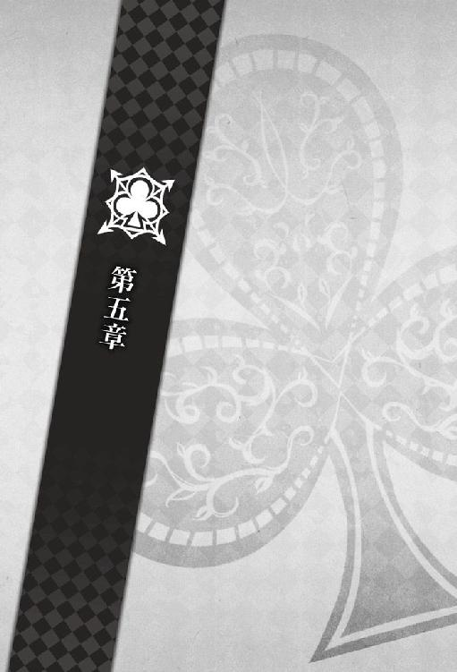
８月27日
今日も病院の面会時間の開始と同時に彼女の部屋を訪れていた。ちょうどひとり部屋が空いていたおかげで、他に気兼ねなく見舞いに来られる。
彼女の検査結果も出て、明日には退院できる手筈になっていた。
「少し散歩しませんか？」
「君は怪我人だろう。もう少しくらいじっとしていられないのか」
「でも......いいお天気ですよ？」
「きっと明日もいい天気だ」
じっとしていられない彼女を監視するのも、楽しかった。
彼女は少し拗ねたような顔を見せたが、私が暇つぶし用にと持って来た文庫本に大人しく手を伸ばす。
やれやれと私も自分の本を出そうとした時、
「やっほー。お見舞いに来たよー！」
ノックとほぼ同時にドアが横にスライドし、サワとミネが顔を出した。
「サワ！ ミネ！」
彼女の顔が明るくなる。ここ数日で、驚くほど彼女の表情は回復していた。それは、キーとなる記憶を思い出したことで、それをきっかけに細かな記憶も蘇っていっているからかもしれなかった。
「また騒がしいのが来たな......」
ちょうど衝立があって見えなかったのか、私が椅子から立ち上がるとサワもミネも驚いたように目を見開いた。これではまるで自分が猛獣にでもなった気分だ。
「え、ケントさん!? 久しぶり!!」
「ウソ、ケントさん!? いると思ってなかったー！」
私も、今日二人が見舞いに来ると知っていれば、時間をずらしていた。とは敢えて言葉にはしなかった。
「もしかして彼女の病室にべったりなんですか？ 意外ー！」
「............」
ミネに返事を返さない私を見て、サワは苦笑しながら彼女に話を振った。賢明な判断だ。
「っていうか、びっくりしたよ。交通事故に遭ったんだって？」
「思ったより元気そうですね。退院いつですか？」
お花いらなかったかな、とミネは小ぶりの花束を彼女に手渡す。ピンク色を基調とした花束は、彼女によく似合った。
「えっと......」
彼女が私の顔を見るので、
「明日だ」
聞かれているのかと返事をした。
「なんでそこケントさんが答えるんですか」
今聞かれたからだと答えれば、からかわれることは目に見えていた。溜息を押し殺し、それらしい返答を口にする。だが、それもサワたちにすると充分やゆする材料になるようだった。
「保護者代わりを務めている。彼女の実家は遠いからな」
「はあ!? 保護者代わり!?」
「やだ、それってもう結婚してるみたいじゃないですか」
「結婚......!?」
一瞬、彼女と顔を合わせ、どちらともなく目を逸らした。
「私はただ、家族以外で彼女と最も親しくしている関係上、なりゆきでだな......！」
「家族が来てないのにケントさんが付き添いしてるんでしょう？ それ家族より親しくないですか？」
「......！」
彼女はまだ実家の住所までは思い出しておらず、連絡を取ろうにも取れる状況ではない。が、それをミネたちに言うこともできず言葉を呑むしかなかった。
「あの、まさかここで寝泊まりしてるわけじゃないですよね？」
ミネの目は、好奇心に充ち満ちている。
別に私とて寝泊まりまではしていない。病院の面会時間の間だけ、滞在するようにしているだけだ。だが、それを言えば言ったでまた何を言われるかわからない。
だから敢えて明言を避け、
「......君たち、もう帰ったらどうだ」
私は苦い顔で言った。
「えー!? まさか図星!?」
「帰らないなら私が帰る」
私がドアの方に向かいかけても、ミネはめげない。この熱意をもう少し勉学に向けることができれば、ミネの人生はもっと豊かなものになるのではないだろうか。
「えっ、ちょっと待ってくださいよ。もう少し詳しく......」
「あーはいはいはい。すみませんでした！ 食いつき過ぎました！」
見かねたサワが、私とミネの間に割って入った。
「ハイ、ケントさんお怒りの様子なんで、からかうのはこの位にしましょうか」
「えー。もっと聞きたいのにー」
頬を膨らませるミネを、サワは笑いながらいなし、真剣な顔を彼女に向けた。
「で、本題に戻るけどさ。大したことないみたいでホントよかったよ。店長たちも心配してたよ？」
「あ、そうですよ。ゆっくり休んでこいって伝言です」
随分と冥土の羊に行っていないが、ひとつ確認しておきたいことがあった。
「......ウキョウという男は？」
顔を見せないようにすると本人が言ってはいたが、まだ油断はできない。実際、私も彼女もあの日以来、彼と遭遇してはいないが。
「へ？ ウキョウさん？ 会ってないですけど」
「何でウキョウさん？ えっ、ちょっとまさかあの浮気疑惑って本当なんですか？」
驚きながらもサワの目にも好奇心が浮かんでいた。
「サワ。その男は彼女をストーキングしている疑いがあるんだと言わなかったか？」
「いや、聞きましたけどー。こないだも言ったとおり、しばらく店に来てないし。考えすぎなんじゃないですか？」
「そうか......」
ウキョウが周りに現れていないならばそれに越したことはないが、彼女を諦めたという確証がない以上、まだ警戒を解くわけにもいかない。どの程度、様子を見る期間を設けるべきかと思考を巡らせていると、ミネがいつになく真剣な顔で口を開いた。
「......いえ、それどうでしょうね。私、ちょっと怖い話聞きました」
「え、何？」
サワがミネの方に顔を向ける。
「一昨日、近所のマンションの屋上から身元不明の男性が転落死したらしいんですけど......その人の特徴がウキョウさんに似てるんですよ」
「......そんなの偶然じゃない？」
「かもしれません。ただそのマンションの屋上って、ちょうどこの部屋から見える位置で」
ミネが視線を窓の外にやる。皆、それにつられて窓の外を見た。確かに、この部屋の窓から、少し高さのあるマンションがよく見えた。あれのことだろうか。
「寄りかかった手すりが腐食してて落ちちゃったんですって。それが真夜中の話らしいんです」
彼女はマンションを見上げたまま、薄気味悪そうに自分で自分を抱くようにしていた。
「真夜中にそんな場所で何してたんだろうって思ったら、ちょっとゾッとしちゃいまして」
「......たとえば、この部屋を見ていて誤って転落したのかもしれない、ということか？」
「だったら怖くないですか？」
可能性のひとつとしてないとは言い切れない。だが、警察が事故だと処理したということは、状況証拠的には事件性がなかったのだろう。
「......空想の域を出ないな」
くだらないと流すと、
「えー？ そうですかねー？」
ミネがいつもの口調に戻って口を尖らせた。
「仮にその男がウキョウなら今はもう安全だということになるが、そう考える根拠はあまりにも薄い」
「いやそうじゃなくて、怨念こもってそうで怖いなって！」
彼女の方を見ると、怯えたような目をしていた。彼女にとっては、ウキョウという男が生きているのと死んでいるのでは、どちらがより恐怖なのだろうか。
「意味のない空想だ」
私が怪談染みた話を否定すると、彼女は少しだけほっとしたようだった。
「その男がウキョウだという確証がない以上、君は引き続きひとりにならないように」
「ロマンの欠片もありませんね」
ミネは不満そうだったが、私はどちらでも良かった。
ウキョウという男が彼女に執着していたことは事実だが、この部屋を見ていて死亡したのか、単なる事故なのかは問題ではない。問題は死亡したのが本人なのか、全くの別人なのかだ。本人である確率は低いが、新聞などで情報を調べておこうと頭の片隅に留め置く。
「そういえば、事故に遭った時はなぜひとりだったんだ？ イッキュウが迎えに行くはずだっただろう」
「あ......」
心なしか、彼女は気まずそうに私から顔を背ける。
「ああ。何かケントさんの忘れ物取りに走ってたんじゃないかって聞きましたけど」
「......！ そうなのか？」
顔を覗き込むと、彼女は誤魔化すように視線を逃がす。どうやら、私に怒られると思っているようだった。
「聞いてないんですか？ 多分そういうことじゃないかなってイッキさんが言ってましたよ。ケントさん、大事な学会だったんですってね」
学会の日の記憶を辿ると、思い当たることがあった。
確か、台本を忘れたとイッキュウに話していた時、イッキュウは彼女と電話中だったはずだ。彼女は携帯越しに私が家に台本を忘れたことを知り、それを取りに行こうとしてくれたということか。
私のためにそんな無茶をしてくれたのかと思うと、胸が熱くなった。しかし、そのせいで事故に遭ってしまったのだから、喜ぶというのも不謹慎な気がした。
そもそも、イッキュウではなく私が彼女を迎えに行ければ事故など起きなかったのかもしれない。過去に仮定の話を持ち出しても今さらどうしようもないが、それでも考えずにはいられなかった。
彼女を人に任せず、常に一緒にいるようにすれば、それが一番だったのだ。
「でも、結局その大事な学会を放り出して病院に走ったんでしょう？」
「留学の話もそれでダメになっちゃったって」
「愛だねぇ」
「......まだ決まってない。正式な結果が出るのは三一日だ」
話がおかしな方向に流れていたので、咳払いをしてから流れを絶った。
「まあ、もう決まったようなものだが」
「......すみません」
「あんたはいいのよ、謝んなくて。悪気があったわけじゃないんだから」
私が言うよりも先にサワに言われてしまい、開きかけた口を閉じる。
「でも、これは真面目な話だけど、いくら焦ってたからって車の前に飛び出すような真似はもうやめてよね」
「そうですよ。寿命が三日くらい縮みましたよ」
「三日って少なっ」
冗談のように言ってはいるが、サワもミネも、彼女が事故に遭ったと連絡を受けた時は相当の取り乱しようだったとイッキュウから聞いている。これも、女性の友情の形なのかもしれない。
「うん......。ありがとう、二人とも......」
夕方になると、二人はようやく帰っていった。
「......やっと静かになったな」
「ごめんなさい」
「君が謝ることではないだろう」
確かに二人がいると騒がしかったが、彼女が楽しそうだったので有意義な時間だったと言っても良い。
「留学の件もだ。私が自分で決めたことだ。君は気に病まないでもらいたい」
「はい......」
そもそも、私はまだ留学の件を諦めたわけではなかった。今年は学会に出席しなかった時点で留学のチャンスを逃したが、あの学会は何も今年だけではない。来年、再度チャレンジする気でいた。
だが、そこで問題がひとつ。彼女と一年も離れてしまうことだ。
心情的に離れがたいというのもあるが、彼女が今回事故に遭ったのは私が傍にいなかったからとも言える。では、私がロンドンにいる間、彼女は大丈夫なのだろうか。
一年は長い。
私がいない間に、また彼女に危険が及んでいたとしたら、私は今度こそ耐えられないかもしれない。それならば、と発想を逆転させてみる。
彼女と離れずにいるためにはどうすればいいだろうか。私が留学を辞めればいいだけだが、これでは彼女の将来にも影響が出ないとも言い切れない。
留学も、彼女も諦めたくない。それならば......ひとついい案があった。
静かになった室内で、私はパイプ椅子に腰を下ろした。今思い付いたことについては、もう少し下調べをしてから彼女に伝えるつもりだった。
「......もし私が留学していた場合、何日間会えなかったと思う？」
「え？」
「出発予定日が九月一七日、帰国予定日が翌年の九月三一日だ。ただし来年はうるう年だな」
「え？ ......えっと」
彼女は焦って計算を試みようとし、「あ」と私の顔を見て少し膨れた。
「意地悪しないで教えてください」
「......そうだな。すまない」
つい、教え子にものを教えたくなってしまうのは、そろそろ卒業した方がいいだろう。
「正解は三七九日間だ」
丸一年よりも長い時間、彼女の笑顔を見られず、声も電話越しのみに限定されるところだったのだ。彼女とこんな風に穏やかに過ごせるようになると思っていなかったとはいえ、よくそんなに長い時間離れようとしていたものだ。
「......つまり、そういうことだ」
はっきり言うのも無粋かと言葉を濁したのだが、
「えっと......」
彼女には伝わらなかったらしい。仕方なく、恥を忍んで直球の言葉を投げることにした。
「寂しい、と言っているんだ！」
「......！」
彼女は元々丸い目をもっと丸くしてから、小さく声を立てて笑った。
「......はい、私もです」
８月31日
朝、パソコンのアドレスの方にメールが届き、正式に留学採用枠からは外れた旨が連絡された。
わかっていたことではあるが、実際に不合格という文字を見るのはあまり気分の良いものではなかった。
短く吐息を吐き出し、メールは早々に閉じて、先日から調べていたサイトの方を開いた。すでに私の頭は、今年の留学ではなく、もっと先のことへと向いていた。
彼女の通う大学のホームページはよく作り込まれており、問合せをしなくとも知りたい情報を得ることができた。あとは、彼女をどう説得するか、だ。
いや、そもそも説得するのに策は必要ないと思っていた。私でも、どう論理的に説明すればいいのかわからないのだ。とにかく言ってみよう。それしか作戦はなかった。
カレンダーに目をやると、今日は八月最終日だった。思えば、彼女の態度が急に変化したあの日から、もう一ヶ月が経ったことになる。月日が経つのは早いものだと、年寄り染みたことを考えてしまった。
そろそろ彼女の家を訪ねても問題ない時間だろう。
パソコンの電源を落としてから、私は彼女のマンションへと向かった。
インターフォンを鳴らすと、彼女は私が何か言うより先に解錠キーを押した。モニターがあるからと言って、きちんと確認しているのかと、彼女の無防備さに苦笑してしまう。
「あ、ケントさん。こんにちは」
玄関のドアを開けると、彼女は私を見てそう言った。
どうやら、彼女はモニターも確認していなかったらしい。今度、その点についてはきちんと説いておかなければならないようだ。だが、今は用事を済ませることが先決だ。
「......留学の件について、先ほど正式決定が届いた」
「あ......」
言わずとも、結果はわかっている。彼女はやはり申し訳なさそうに目を伏せた。
「少し外を歩かないか？」
彼女にこんな顔をさせたいわけではなかったので、その話は早々に打ち切る。
「君を連れて行きたいところがある」
「連れて行きたいところ......？」
首を傾げる彼女に、「来ればわかる」と私は彼女の手を引いた。
「連れて行きたいところって、この学校ですか？」
彼女は目の前にある大きな門を物珍しそうに見上げた。
「君の学校だ」
「え。あ、そうなんですか......」
一度驚いたような顔で私を見、彼女はまた繁々と校舎を見つめる。
「そういえば、見覚えがあるような......」
とってつけたような言い方に苦笑してしまう。
「やはり覚えていないか。では、私が案内しよう」
学生間でのやりとりではあったが、私は講師として一時期この大学に通っていた。通っていた、というと語弊があるかもしれない。正しくは、週に何度か顔を出していた。
彼女を生徒として見ていた時から、すでに四ヶ月が経っている。自分の学校でもないというのに、少々懐かしい思いで廊下を歩いた。
「しばらく前まで、君にはここに近付いてほしくないと思っていた」
「え......」
「思い出してしまうかもしれないからな、あの時の授業のことを。そして、その後何があったのかを」
彼女に全てを打ち明けられずにいた時、私は彼女が次は何を思い出すのかと毎日怯えていた。彼女に嫌われてしまうかもしれないという可能性は、私から常時の判断力を奪い、理性を狂わせるほど恐ろしいものだった。
だが、今はもうその心配はない。
「もしかして今向かってるの、あの教室なんですか？」
「そうだ」
彼女は黙って横を歩いていたかと思うと、
「......あの、私思い出したいです」
思い切って告白するかのような顔で私の前に立った。
「もう何を思い出しても平気だと思います」
まるでまだ私が、彼女に記憶を取り戻してほしくないと思っているかのような真剣な顔に、笑った。
「私もそう思う。だから案内している」
離れてしまった手を、今度は彼女の方から繋がれた。こうして、自然と互いの手を取って歩けるようになったのはつい最近のことだ。まだ、人目があると距離をおいてしまうが、二人きりならば、私たちはどちらともなく手を伸ばすようになっていた。
「......この教室だ」
廊下の奥、いつも空き教室になっていそうな小さな教室が、私たちの出会いの場だった。
彼女は丁寧な動作で、教室の扉を開けた。教室の鍵はかかっておらず、横開きのドアは簡単に開いた。
こうして改めて入ってみると、思い出の中の教室よりも若干、広い気がした。たぶん、今は教室に誰もいないから広く感じるのだろう。あの時は、少ない時でも必ず三人は生徒が出席していた。
明るい教室内に目を細め、初めてこの教室に来た時のことを思い出す。
イッキュウに買収されたとは言え、引き受けたからには数学初心者の基礎を叩き直す気で私はここに来ていた。
授業で使うプリントはもちろん、今後の学習計画をわかりやすくまとめたシラバスも用意してあった。だが、教室の扉を開けた瞬間、場違いなところに来てしまったと瞬時に悟った。
教室の中には、彼女とサワ、ミネとトーマ君がいた。サワとミネは机の上にお菓子を広げておしゃべりをし、彼女とトーマ君はノートを広げてはいたものの、どちらも数学のノートではないようだった。
だが、来てしまったからには教えねばならない。
「それでは、授業を始める。席につきたまえ」
わずかに持っていた期待を捨て去り、私は義務的に言った。とにかく、六〇分と約束してあった時間だけ講義をすれば、一回分消化できる。そう考えることにした。
だが、生徒たちは大人しく席に座りはしなかった。ミネなどは、あろうことか私のいる教壇の目の前までわざわざ歩いて来てから、挙手をした。
「はい先生、質問です！ 彼女はいますか？」
「............」
これに、私は何と答えればよかったのだろうか。今でもよくわからない。
ひとつ目の質問にして、私はこの生徒たちに数学を教えることは不可能なのではないかと思い始めていた。数学の知識はあれど、私はただの大学院生だ。本物の教師ではない。
私はひとまずミネを無視し、
「諸君、私は学生企画の授業とは言え遊びに来ているつもりはない。全員今すぐ口を閉じろ。これ以上騒ぐならこのまま帰るぞ！」
その場で声を張り上げた。
ふと気付くと、彼女が教室の中をゆっくり歩きながら、小さく楽しげな笑い声を上げていた。
「......何を笑っている。授業のことを思い出したのか」
「はい」
彼女は私の方に顔を向け、教壇の上に立った。かつて、私が立っていた場所だ。
「ケントさん、本物の先生みたいでした。しかもすごく厳しい先生です」
「厳しくなどしていない。君たちがふざけすぎていたのだ」
「そうでしたか？」
彼女はまた声を立てて笑い、机を避けながら私の目の前までゆっくり歩いて来る。
「そうだ。......何がそんなにおかしい」
茗荷大学に来た第一の理由は彼女の記憶の欠片を集めるためではなかったが、ちょうど良い刺激にもなったようだ。こんなに笑われるとは心外だが、彼女が楽しそうなので甘んじて受け入れることにした。
過去に思いを馳せていて、私はもうひとつ思い出した。
「......そういえば君は、その厳しい教師に恋愛事の相談をしてきたんだったな」
「あ」
彼女もそれ自体の記憶はあるようで、少し気まずそうな顔をする。
「散歩の途中で会った時だ。誰かに失恋したと話していたな。あれは一体誰のことだったんだ？ まあ、今さら追及するのも野暮かもしれないが」
確か、と記憶を辿っていく。
霊園前で犬の散歩していた彼女から声をかけられた。あの時はまだ、わざと時間を合わせていたのではなく、たまたま時間が合い、彼女の方から近寄ってきたのだ。
彼女は私を見つけて挨拶をするなり、失恋の報告をしてきた。
「は？ 憧れていた人に失恋した？」
何かの聞き間違いかと聞き返したが、彼女は何故か不機嫌そうな顔で頷いた。
彼女の放った言葉の意味を脳が理解した途端、私も何故かわからないが急に腹立たしくなったのを覚えている。今思えば、あれは彼女を振った誰かに嫉妬していたのだろう。
「......へえ。で、それがどうかしたのか？」
「どうかって......」
私の態度に、彼女は不満そうだった。だが、私とて不満そうにされて心外だった。
「......いいかい。私は君の担任ではないしカウンセラーでもない。数学の教師としてごく短期間、招かれているだけなんだよ。しかも非公式にね。その私に恋愛事を相談してどんな返答を期待しているんだ、君は？」
「......返答を期待したわけじゃありません。ただ話そうかなって思っただけです」
彼女の意図が、まるでわからなかった。ただ腹が立って仕方がなく、私は底意地の悪い返答をした。
「ああ、相談ではない雑談だと。へえ、君は自分の失恋を面白い小話だとでも思っているのかな」
反論こそしなかったが、彼女が明らかに異議を唱えているのは顔を見れば一目瞭然だった。
「なら私の見解を述べるが、思慕の相手を次々に変えていくのは生物として実に効率的だね」
「効率......的？」
「ああ、そうだ。多くの情緒的経験ができるし、飽きたら別れるという交際スタンスはより多くの子孫を残す可能性がある」
私の理論を、彼女は唇を引き結んで聞いていた。
「というわけで、君の失恋は大学時代の経験として実に有益だ。今後ともその調子で......っ」
最後まで言葉を紡ぐことはできなかった。何故なら、彼女の手のひらが実にいい音を立てて、私の頬を打ったからだ。所詮、女性の腕力だ。痛みはさほどなかったが、苛立ちは増した。
「......納得のいく理由を聞かせてもらおう。なぜ私が君から平手打ちを食らわなければならないのかな？」
「......失礼します」
「おい、君！」
結局、彼女は私に平手打ちを食らわしたことを一切謝らず、犬を引っ張って行ってしまった。
こうして思い出してみても、何故私が平手打ちされなければならなかったのかわからなかった。酷く意地悪な返答をしたとは思うが、合理的な子孫繁栄の方法を説いただけで殴られるのはいささか理不尽だ。
いや、今はそれはいい。問題は、彼女が誰に失恋をしたのかということだ。
「君が誰かに想いを寄せていたのだと思うと、少々気になる。......いや、少々だぞ！」
「えっと......」
もしかしたら、彼女はまだあの時のことは思い出せていないのかもしれない。
戸惑ったような顔をして、彼女は視線を泳がせた。しかし、すぐに何かを思い出したかのように視線を止め、私を見たかと思うとまたすぐに大急ぎで顔を伏せ、後ずさった。
「......どうした？ 何を後ずさっている」
「いえ......」
彼女が後ろに下がった分だけ私が距離を詰めると、彼女はまた慌てて後ろに下がった。
避けられているような態度に、嫌な考えが頭に浮かぶ。
「まさか、他に好きな男がいたことを思い出した、などと言わないだろうな？」
「ち、違うんです！」
ひとまず安心したが、どうにも彼女の様子がおかしい。思い出しているようではあるが、中々語ろうとしないし、頬が赤い。過去のことだと割り切っても、今の彼氏に昔の好きな男の話はしづらい。そういうことだろうか。
いろいろと私が推論を立てていると、彼女は観念したように足を止めて、
「その......他の人を好きだったことはありません」
彼女は非常に不明瞭な口調で言った。
「......？ ないことはないだろう」
一瞬、誤魔化されているのかと考えた。なぜなら、彼女は相変わらず私の顔を見ようとしないし、気まずそうだ。
「現に、誰かに失恋したのだと私に相談したではないか。いや、相談ではなく雑談だったか？ あの相手は誰だったのかと聞いているんだが」
つい、問い詰めるような口調で言ってしまうと、
「あの、他に好きな人がいたことは、ありません」
彼女は今度は小さいながらもはっきりと口にした。恥ずかしそうに頬を染めながら。
「............」
彼女は私の他に好きな人がいたことがないと言う。だが、確かに過去、私は彼女から『憧れの人に失恋しました』という報告を受けている。これは明らかに矛盾しているのではないか。
しばし頭を働かせてから、もう一度彼女の顔を見、ようやく合点がいった。
「......ああ、そういう意味か」
「............っ」
彼女の顔は今や、熟れた林檎のごとく真っ赤だ。
「なるほど......それであの時『どんどん失恋すればいい』と言った私を叩いたんだな？」
「すみませんでした......」
消え入りそうなほど小さな謝罪に、「いや、こちらこそ」などと口籠もる。
互いに何と言えばいいかわからず、照れ臭い気持ちで相手の顔色を窺った。そのうち、どうしようもなく笑えてきて、ついに堪えきれずに私は笑い始めた。
「は......ははは。ははははは。一体何をやっているんだ、私たちは」
笑いすぎて、目尻に涙が浮かぶ。いや、これはどちらかと言うと、今自分がどれだけ幸せなのかと実感して滲み出てきた幸せの涙かもしれない。
「つまり、君と争う理由など初めからまったく存在しなかったわけだ」
赤い顔をした彼女が小さく頷く。
「ということはだ。君から失恋したと打ち明けられたあの時......私が妙な嫉妬をして君を傷付けなければ、そこで済んでいた話だったのか？」
「嫉妬......してたんですか？」
まさか、と続けそうな顔で彼女が言った。
「ああ。今思えばそういうことだな。あの時は、理由のわからない苛立ちに任せて君をやり込めてしまったわけだが......多分、すでに君が好きだったんだろう」
好意を寄せているとはっきり意識しないまでも、心の奥底で好いていた女性から声をかけられ、少なからず喜んだ矢先に持ちかけられたのが失恋相談だ。
「君の失恋の相手に嫉妬してつい毒づいてしまったらしい」
やれやれと肩を竦めると、
「そんなの、わかるわけがありません！」
彼女が声を張り上げた。本気で私を責めているのではなく、少し笑いを含んだ声だった。
「まあ、当然だろうな。私自身わかっていなかったんだから、君に伝わるわけがない」
私も、柔らかい笑みを彼女に返した。
「......一体どれほど遠回りをしていたんだろうな、私たちは」
今、こうして彼女の横に立ち、穏やかに過去の話ができる奇跡に感謝したい。これはあの時、私が望んでいたものに違いない。
「......どんどん相手を乗り換えればいいって言ってましたよね」
しばらくしてから、彼女は窺うように私の顔を覗き込んだ。たぶん、昔の話を思い出してから、ずっと引っかかってはいたのだろう。何せ、彼女の提唱する永遠の愛論とはまるで真逆の意見だ。
「本当は、そんなこと思ってないんですか？」
「......理屈としては、それが効率的だと思う。だが、今現在私が心変わりするところはまったく思い浮かばないな」
彼女はほっとしたように息をついて笑った。
「逆に君に心変わりされたらと思うと、死にたくなる」
肩にそっと手をかけても、彼女は嫌がる素振りを見せず大人しくしていた。この弱く、小さな存在は、どれだけ私を支えてくれていることだろう。
「......生物として非効率的なのにどうしてこのような思考が生まれるのだろう。まだまだ整理が付けられそうにないな、この感情には」
ではいつか、この思考について説明できる日が来るのだろうか。
すぐ前に立つ彼女を見下ろし、
「......いや、一生かかっても整理できそうにない」
考えるまでもなく、私は不可能だと笑った。
あどけない表情で見上げてくる彼女に、愛おしさが募る。気付くと、私は彼女の唇に自分のそれを重ねていた。
「......！」
彼女は驚きに目を瞠ったが、おずおずとすぐに瞳を閉じたようだった。
もう、おでこをぶつけることはなかった。それは前よりも、ずっと落ち着いた気持ちで彼女に接することができている証拠かもしれない。
しっとりと唇を合わせた後、
「整理がつくまで付き合ってもらおうか」
静かに額同士をぶつけて言う。
「それって、一生......」
「ということになりそうだが、何か問題があるか？」
「いえ......」
彼女がはにかんだ表情で目を伏せるので、
「......やはり不思議だな。唇を合わせているだけなのに、なぜこんなに特別な感情を覚えるのだろう。この謎が解けるまで、君とは別れられそうにない」
私は至って真面目に言ったつもりだが、彼女は軽やかな声を立てて笑った。
彼女を中庭で待たせておき、私は大学の事務所の方に顔を出していた。
「こちらの書類になりますね」
事務員から必要書類を受け取り、礼を言ってから彼女の元へと急ぐ。
「待たせたな」
彼女は待っている間、花壇を見ていたらしい。顔だけ私の方へと振り向かせた。
「何を取りに行ってたんですか？」
「この書類だ」
彼女の背に立ち、見やすいようにと彼女の顔の前に書類を持ち上げる。中から必要要項が書かれた用紙を出してみせると、彼女が驚きの声を上げた。
「これ......」
私がもらってきた書類は、茗荷大学からロンドンへの推薦留学申し込みの書類だった。
「......君も来年ロンドンへ行くというのはどうだ？」
「え？」
「私は来年の学会で、もう一度留学の資格に挑戦するつもりでいる。私にとってはずっと目指してきた目標だ。今回きりで諦める気はない」
そうだったんですね、とどこか彼女は安堵したように言う。きっと、まだ自分が私の留学を邪魔してしまったのだと責任を感じ、悔いているのだろう。非常に彼女らしいが、どうせ落ち込むのならばこの後の私の提案を快く受け入れてくれないかと心の中で笑いながら交渉する。
「だが、あちらへ行って君と会えなくなるのも本意ではない」
それに、長い時間彼女をひとりにするのも不安だった。ウキョウという男の件もあるが、それでなくとも世の中には危険はごまんとある。
そこで私が考えついた案がこれだ。彼女が入院している時もずっと考えていた。
「このふたつの要望を両立させる方法はある。つまり、君が一緒に行ってくれればいいのだ」
「え」
「幸い、この大学にも推薦留学の制度はあるらしい」
封筒の中から、書類を完全に出し、募集人数や条件の部分を指さした。
「今の君の成績では多少問題があるかもしれないが、そんなことは些細な障害だろう。知識の身に着け方なら私がいくらでも教えてやれる。英会話もな。君の将来のためにも悪くない話だと思うが、どうかな？」
「あの......」
急な提案に、彼女はまだついてこられないようだった。だが、急に悪戯を思い付いたように私を上目遣いに見上げた。
「......そんなに、私と離れたくないんですか？」
なるほど、そう来るのか。以前の私ならば、「そんなことはない」と口論になっていたかもしれない。だが、今の私はここで反論するほど捻くれてはいないし、自分の気持ちに正直になった方が良いことがあることも学習済みだ。
だから敢えて自信たっぷりに言おう。
「ああ。耐え難いな」
「......！」
「返事は急がなくていい。その気になった時に聞かせてくれ。ただし、了承以外の答えは聞く気がないから、そのつもりでな」
「......横暴です」
彼女は真面目な顔で書類に目を通しながら呟く。
「そうかもな。......ああ、知らなかったのか？」
「......！ 知ってました......！」
頬を膨らませた彼女が愛おしくて、私は後ろからきつく抱き締めた。
「私は君が好きだ。二度とこの手を放したくない。愛に理由がないと感じたら、君の感情論を尊重すると約束したな」
彼女は私の腕の中で、期待するように目を輝かせる。
「確かに、この感情には理由付けのできない部分が存在すると感じた。君の行動が常々そうであるように、時には感情に従うことも必要なんだろう」
そうでしょう、と彼女は自信に満ちた顔で私を見上げた。胸を反る勢いのその態度に、つい笑ってしまった。
「なので、私も感情に従って行動してみることにした」
「え？」
「つまり、君を放すつもりはないということだ。異論はないな？」
わざとらしく首を傾げて見せると、彼女は笑ってしまってから、
「......たくさんあります！」
まるで怖くない顔で私を睨んだ。
それから約一年後、私たちは空港にいた。
「......搭乗開始しましたね」
「そうだな」
「......早めに行った方がいいですよね」
「そうだな」
「......忘れ物は......」
先ほどからうろうろと落ち着かない様子の彼女の腕を掴み、空いている椅子のひとつに座らせた。
「少し落ち着いたらどうだ」
「でも......もうケントさんが行っちゃうのに」
今日、私はロンドンへと旅立つ。
学会発表を欠席した翌年、私は再度留学枠へ挑戦し、ロンドンへの切符を手に入れていた。彼女も私の勧めで推薦留学枠に入れるよう頑張ってくれてはいたが、まだ試験さえ始まっていない。
一足先に（といっても彼女が本当に推薦を取れるかも、追いかけて来てくれるかもわからないが）ロンドンに旅立つことになり、彼女が空港まで見送りに来てくれていた。
私が乗る予定の飛行機の搭乗アナウンスが再度流れた。彼女はその放送にびくりと肩を震わせる。
「......そろそろ行くか」
「はい......」
スーツケースを手に搭乗口へと向かう。エコノミー席の搭乗もすでに始まっており、搭乗口にできる列はもう大分少なくなっていた。
「電話、しますね」
「時差が八時間あるが」
「......メールします」
「そうしてくれ」
沈みがちな彼女の顔を見て、苦笑いが漏れる。
もし、彼女が推薦留学に受かれば、次に私たちが会えるのは二ヶ月後、ロンドンの空の下だ。私はそうなることを信じている。
「では、行って来る」
「......いってらっしゃい！」
搭乗ゲートに入ろうする私を、彼女は今にも泣き出しそうな顔で見送る。そんな顔をされては、行くにいけないではないか。
私は搭乗券を渡そうとした手を止めて一度彼女の元に戻った。
「ロンドンで待っている。......だから、泣かないでくれ」
彼女は唇を引き結び、「泣いてなんかいません」と涙を溜めた瞳で私を睨み付けた。
エピローグ
ロンドンの冬は寒い。石造りの家が多いせいか、見た目にもどこかしんしんと底冷えのする寒さがある。
天気が良ければまだ良いが、この街は生憎と曇りの日が多い。今日など、朝曇っていたと思ったら、今は雪が降りはじめていた。
白い息を吐きながら、私は約束の橋へと向かう。
いつもはもう少し待ち合わせの人もいるのだが、雪が降っているせいで人はまばらだった。誰もが足早に目的地を目指しているようで、この寒いのに橋の上でじっとしているような人はひとりしかいなかった。
──彼女は、私の記憶と寸分違わぬ姿でそこに存在していた。
時折、時間を気にするように腕時計とビッグベンの時刻を見比べている。今が、約束の時間ちょうどだ。
彼女がロンドンまで来てくれたことがまだ信じられなくて、私はしばらく彼女の姿を遠目から見つめていた。彼女は髪に触れたり、川の景色を覗き込んだりと少し落ち着きがない。その様子がまさに私の知っている彼女だと物語っている。
これ以上待たせると風邪を引かせてしまう。私は大股で彼女の方へと向かった。
「Hello? I'm sorry for waiting.」
「え、あ......Yes!? Pardon me!?」
後ろから声をかけると、彼女は咄嗟に日本語で返してから、慌てて英語で答えた。焦り過ぎて、私だということも気付いていないようだ。
小さく笑って、「......私だが」と日本語で言うと、
「あ......なんだ、ケントさん」
彼女は大仰に胸を撫で下ろした。
「こっちの国の人に話しかけられたのかと思ってびっくりしちゃいました。日本語で話しかけてくださいよ」
「この程度も聞き取れなくて、これからロンドンで生活できるのか？ 遅れてすまないと言っただけだぞ」
からかってはみたが、彼女の英語が日常生活に支障をきたさないどころか、こちらの大学の授業にも充分ついていけるレベルなのは私が一番よく知っている。何せ、彼女に英語を教えたのは私だ。
「突然だから驚いただけです。身構えてれば大丈夫です」
「ほう。そうだといいのだが」
「もう。ケントさんこそ、ちゃんと道を覚えられてるんですか？ 遅刻なんて珍しいじゃないですか」
「ああ......いや」
どう言い訳すべきかと一瞬考えたが、今さら取り繕う必要はないと正直に言うことにした。
「実は時間には着いていた。しばらく君を見ていたんだ」
「え......？」
「この川の傍で君が私を待っているという光景にまるで現実感がなくてな。君が消えてしまわないかと思ってしばらく眺めていた。我ながらおかしなことをしたものだ」
空から淡く降ってくる雪のように、彼女の存在も儚く消えてしまうのではないかなど、私も随分とロマンチックになったものだと内心で苦笑する。
「もしかしたら私は、君が本当に追いかけてきてくれると信じていなかったのかもしれない」
ほんの二ヶ月。彼女の顔を見られないだけで、不安で胸が潰れそうになる日もあった。ホームシックかとこちらの友人に笑われもしたが、恋人シックだと返していたら、どんな反応をされていただろうか。
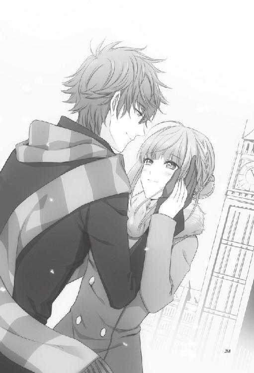
「君の姿が見えなくなると途端に弱気になるな、私は」
彼女がそこにきちんと存在していることを確かめたくて、私は彼女の手にそっと触れた。手袋をしているせいで体温は感じられなかったが、触れても彼女は消えなかった。
「......あの」
彼女は私の腕に手を添えてから、
「I'm sorry for waiting.お待たせして、すみませんでした」
英語と日本語の両方で謝った。優しい彼女の気遣いに自然と笑みが零れる。
「いや。来てくれて、ありがとう」
彼女の体を引き寄せ、私はその唇にキスをした。
「──もう放さない」
「......はい。放さないでください」
ロンドンの冬は寒いと思っていたが、彼女の周りだけは春のようにあたたかく感じた。
〈終〉
著者：狐塚冬里
本屋さんでさりげなく本を整えている人を見ると、仲間だと密かに思っています。
【ＨＰ】http://kotonomi.noor.jp/kotonomi/
監修：東中ルミエ
Corneille Mythiqueで活動するクリエイター。
【ＨＰ】http://corneille.xxxxxxxx.jp/
カバーイラスト：花邑まい
デザインファクトリー所属のイラストレーター。代表作は「AMNESIA」「AMNESIA LATER」「AMNESIA CROWD」「デザート・キングダム」（すべてオトメイト）
挿絵：Meij
現在フリーのイラストレーターとして活動しております。
【ＨＰ】http://meij00.web.fc2.com/
AMNESIA
― KENT ver. ―
電子版発行 ２０１４年８月１日
著 者 狐塚 冬里
監 修 東中 ルミエ
発行者 辻 信幸
発行・発売 株式会社一二三書房
〒１０２─００７２
東京都千代田区飯田橋２─14─２ 雄邦ビル
電 話 ０３─３２６５─１８８１
カバーイラスト 花邑まい
挿絵 Meij
©HIFUMI SHOBO/OFFICE SIX
©2011-2013 IDEA FACTORY/DESIGN FACTORY
本書の無断複製（コピー）は、著作権上の例外を除き、禁じられています。
●本書は『AMNESIA KENT ver.』（２０１３年11月２日 初版第１刷）に基づいて制作されました。